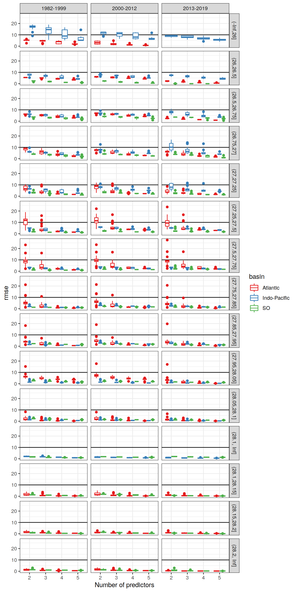
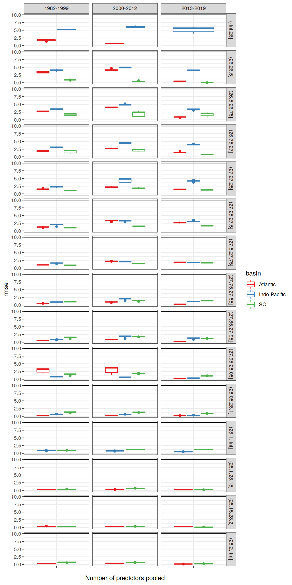
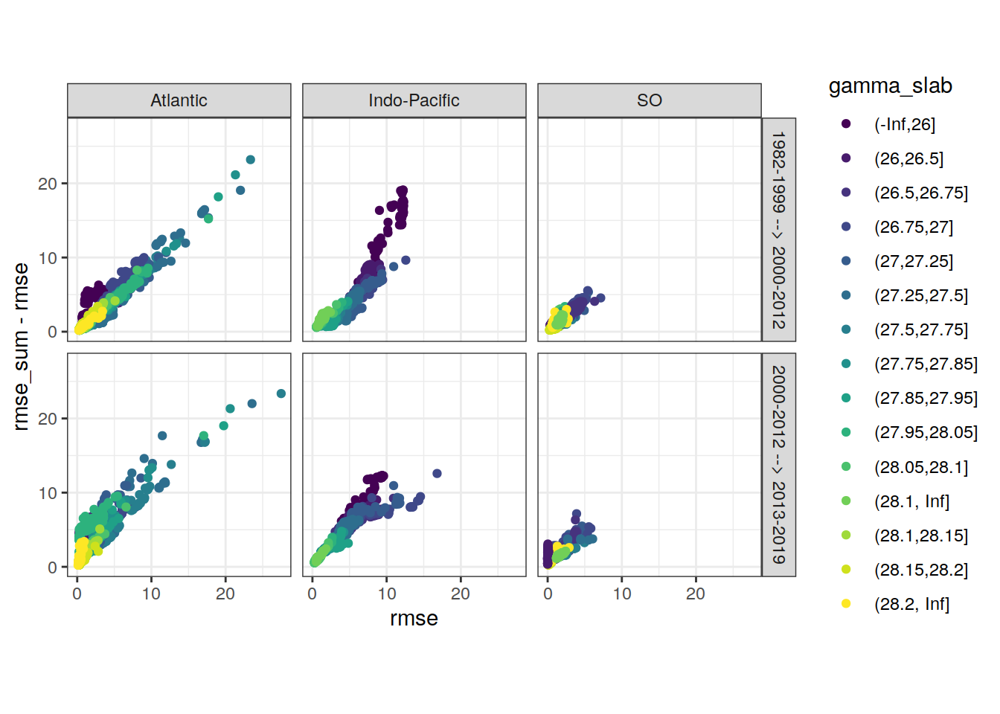
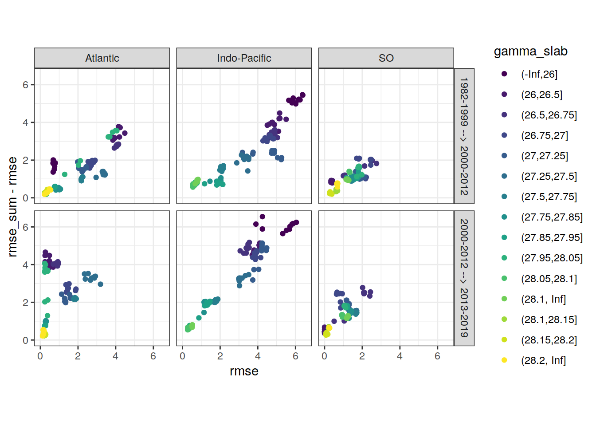
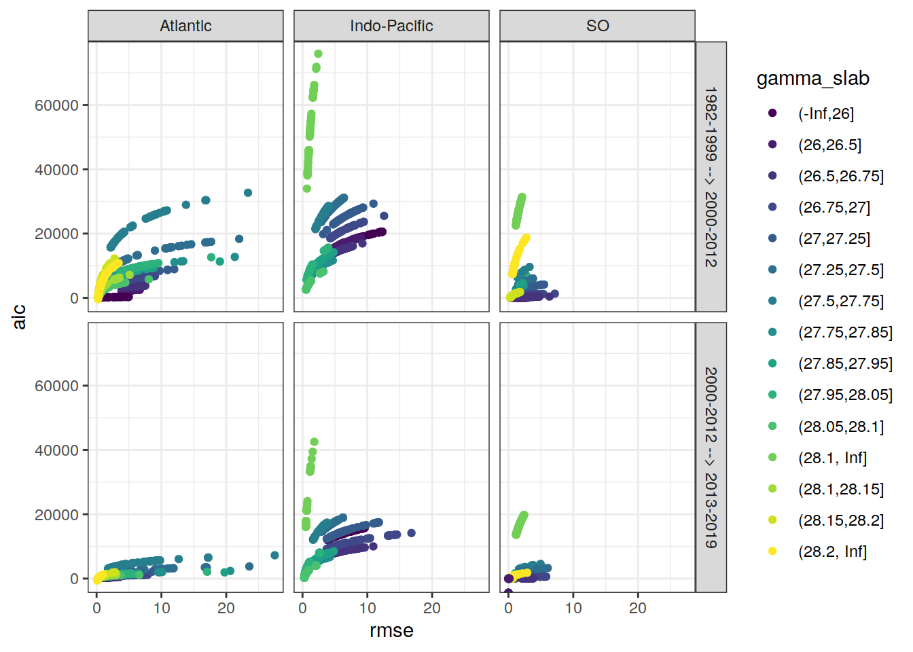
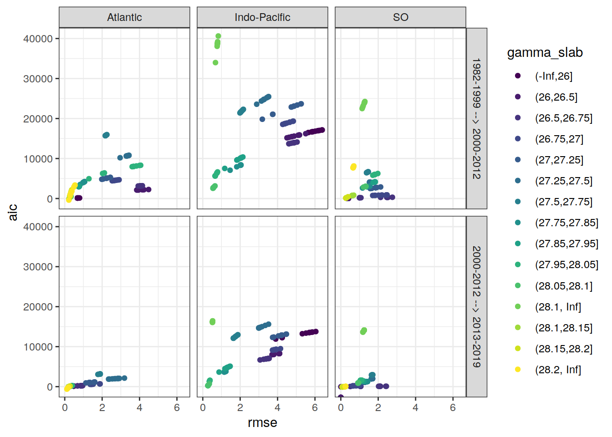

Last updated: 2021-01-30
Checks: 7 0
Knit directory: emlr_mod_v_104/
This reproducible R Markdown analysis was created with workflowr (version 1.6.2). The Checks tab describes the reproducibility checks that were applied when the results were created. The Past versions tab lists the development history.
Great! Since the R Markdown file has been committed to the Git repository, you know the exact version of the code that produced these results.
Great job! The global environment was empty. Objects defined in the global environment can affect the analysis in your R Markdown file in unknown ways. For reproduciblity it’s best to always run the code in an empty environment.
The command set.seed(20200707) was run prior to running the code in the R Markdown file. Setting a seed ensures that any results that rely on randomness, e.g. subsampling or permutations, are reproducible.
Great job! Recording the operating system, R version, and package versions is critical for reproducibility.
Nice! There were no cached chunks for this analysis, so you can be confident that you successfully produced the results during this run.
Great job! Using relative paths to the files within your workflowr project makes it easier to run your code on other machines.
Great! You are using Git for version control. Tracking code development and connecting the code version to the results is critical for reproducibility.
The results in this page were generated with repository version c0a2f5a. See the Past versions tab to see a history of the changes made to the R Markdown and HTML files.
Note that you need to be careful to ensure that all relevant files for the analysis have been committed to Git prior to generating the results (you can use wflow_publish or wflow_git_commit). workflowr only checks the R Markdown file, but you know if there are other scripts or data files that it depends on. Below is the status of the Git repository when the results were generated:
Ignored files:
Ignored: .Rproj.user/
Unstaged changes:
Modified: analysis/_site.yml
Modified: data/auxillary/params_local.rds
Note that any generated files, e.g. HTML, png, CSS, etc., are not included in this status report because it is ok for generated content to have uncommitted changes.
These are the previous versions of the repository in which changes were made to the R Markdown (analysis/eMLR_model_fitting.Rmd) and HTML (docs/eMLR_model_fitting.html) files. If you’ve configured a remote Git repository (see ?wflow_git_remote), click on the hyperlinks in the table below to view the files as they were in that past version.
| File | Version | Author | Date | Message |
|---|---|---|---|---|
| Rmd | bc20666 | Jens Müller | 2021-01-29 | Initial commit |
Required are:
GLODAP <-
read_csv(paste(path_version_data,
"GLODAPv2.2020_MLR_fitting_ready.csv",
sep = ""))Find all possible combinations of following considered predictor variables:
# the following code is a workaround to find all predictor combinations
# using the olsrr package and fit all models for one era, slab, and basin
i_basin <- unique(GLODAP$basin)[1]
i_era <- unique(GLODAP$era)[1]
# subset one basin and era for fitting
GLODAP_basin_era <- GLODAP %>%
filter(basin == i_basin, era == i_era)
i_gamma_slab <- unique(GLODAP_basin_era$gamma_slab)[1]
print(i_gamma_slab)
# subset one gamma slab
GLODAP_basin_era_slab <- GLODAP_basin_era %>%
filter(gamma_slab == i_gamma_slab)
# fit the full linear model, i.e. all predictor combinations
lm_full <- lm(paste(
params_local$MLR_target,
paste(params_local$MLR_predictors, collapse = " + "),
sep = " ~ "
),
data = GLODAP_basin_era_slab)
# fit linear models for all possible predictor combinations
# unfortunately, this functions does not provide model coefficients (yet)
lm_all <- ols_step_all_possible(lm_full)
# convert to tibble
lm_all <- as_tibble(lm_all)
# extract relevant columns and format model formula
lm_all <- lm_all %>%
select(n, predictors) %>%
mutate(lm_coeff = str_replace_all(predictors, " ", " + "),
lm_coeff = paste(params_local$MLR_target, "~", lm_coeff))
# remove predictor combinations with nitrate and phosphate
lm_all <- lm_all %>%
mutate(lm_coeff_filter = str_remove(lm_coeff, "phosphate_star")) %>%
filter(!(
str_detect(lm_coeff_filter, "nitrate") &
str_detect(lm_coeff_filter, "phosphate")
)) %>%
select(-lm_coeff_filter)
# remove helper objects
rm(i_gamma_slab,
i_era,
i_basin,
GLODAP_basin_era,
GLODAP_basin_era_slab,
lm_full)Select combinations with a total number of predictors in the range:
lm_all <- lm_all %>%
filter(n >= params_local$MLR_predictors_min,
n <= params_local$MLR_predictors_max)This results in a total number of MLR models of:
Individual linear regression models were fitted for the chosen target variable:
as a function of each predictor combination. Fitting was performed separately within each basin, era, and slab. Model diagnostics, such as the root mean squared error (RMSE), were calculated for each fitted model.
# loop across all basins, era, gamma slabs, and MLRs
# fit all MLR models
for (i_basin in unique(GLODAP$basin)) {
for (i_era in unique(GLODAP$era)) {
# i_basin <- unique(GLODAP$basin)[1]
# i_era <- unique(GLODAP$era)[1]
print(i_basin)
print(i_era)
GLODAP_basin_era <- GLODAP %>%
filter(basin == i_basin, era == i_era)
for (i_gamma_slab in unique(GLODAP_basin_era$gamma_slab)) {
# i_gamma_slab <- unique(GLODAP_basin_era$gamma_slab)[1]
print(i_gamma_slab)
GLODAP_basin_era_slab <- GLODAP_basin_era %>%
filter(gamma_slab == i_gamma_slab)
for (i_predictors in unique(lm_all$predictors)) {
# i_predictors <- unique(lm_all$predictors)[110]
# extract one model definition
i_lm <- lm_all %>%
filter(predictors == i_predictors) %>%
select(lm_coeff) %>%
pull()
# extract number of predictors
i_n_predictors <- lm_all %>%
filter(predictors == i_predictors) %>%
select(n) %>%
pull()
# fit model
i_lm_fit <- lm(as.formula(i_lm),
data = GLODAP_basin_era_slab)
# find max predictor correlation
i_cor_max <- GLODAP_basin_era_slab %>%
select(!!!syms(str_split(i_predictors, " ",
simplify = TRUE))) %>%
correlate(quiet = TRUE) %>%
select(-term) %>%
abs() %>%
max(na.rm = TRUE)
# calculate root mean squared error
i_rmse <- sqrt(c(crossprod(i_lm_fit$residuals)) /
length(i_lm_fit$residuals))
# calculate maximum residual
i_resid_max <- max(abs(i_lm_fit$residuals))
# calculate Akaike information criterion aic
i_aic <- AIC(i_lm_fit)
# collect model coefficients and diagnostics
coefficients <- tidy(i_lm_fit)
coefficients <- coefficients %>%
mutate(
basin = i_basin,
era = i_era,
gamma_slab = i_gamma_slab,
model = i_lm,
rmse = i_rmse,
aic = i_aic,
resid_max = i_resid_max,
n_predictors = i_n_predictors,
na_predictor = anyNA(coefficients$estimate),
cor_max = i_cor_max
)
if (exists("lm_all_fitted")) {
lm_all_fitted <- bind_rows(lm_all_fitted, coefficients)
}
if (!exists("lm_all_fitted")) {
lm_all_fitted <- coefficients
}
}
}
}
}
rm(
i_lm_fit,
coefficients,
i_rmse,
GLODAP_basin_era,
GLODAP_basin_era_slab,
i_lm,
i_basin,
i_era,
i_gamma_slab,
i_predictors,
i_aic,
i_n_predictors,
i_resid_max
)Coefficients are prepared for the mapping of Cant and the chosen target variable.
# select relevant columns
lm_all_fitted <- lm_all_fitted %>%
select(
basin,
gamma_slab,
era,
model,
n_predictors,
term,
estimate,
rmse,
aic,
resid_max,
na_predictor,
cor_max
)
# set coefficient to zero if not fitted (=NA)
lm_all_fitted <- lm_all_fitted %>%
mutate(estimate = if_else(is.na(estimate), 0, estimate))
# Prepare model coefficients for mapping of target variable
lm_all_fitted_wide <- lm_all_fitted %>%
pivot_wider(
values_from = estimate,
names_from = term,
names_prefix = "coeff_",
values_fill = 0
)Within each basin and slab, the following number of best linear regression models was selected:
The criterion used to select the best models was:
The criterion was summed up for two adjacent eras, and the models with lowest summed values were selected.
Please note, that currently the lm() function produces NAs for some predictors. It is not yet entirely clear when this happens, but presumably it is caused by some form of collinearity between predictors, such that including another predictor does not help to explain the target variable any better. The issues also expresses as exactly identical rmse values of different models. As an interim solution, models with fitted NA predictors were not included.
# remove models with predictors fitted as NA
lm_all_fitted_wide <- lm_all_fitted_wide %>%
filter(na_predictor == FALSE)# calculate RMSE sum for adjacent eras
lm_all_fitted_wide_eras <- lm_all_fitted_wide %>%
select(basin, gamma_slab, model, era, rmse, aic, resid_max) %>%
arrange(era) %>%
group_by(basin, gamma_slab, model) %>%
mutate(
eras = paste(lag(era), era, sep = " --> "),
rmse_sum = rmse + lag(rmse),
aic_sum = aic + lag(aic)
) %>%
ungroup() %>%
select(-c(era)) %>%
drop_na()
# subset models with lowest summed criterion
# chose which criterion is applied
if (params_local$MLR_criterion == "aic") {
lm_best <- lm_all_fitted_wide_eras %>%
group_by(basin, gamma_slab, eras) %>%
slice_min(order_by = aic_sum,
with_ties = FALSE,
n = params_local$MLR_number) %>%
ungroup() %>%
arrange(basin, gamma_slab, eras, model)
} else {
lm_best <- lm_all_fitted_wide_eras %>%
group_by(basin, gamma_slab, eras) %>%
slice_min(order_by = rmse_sum,
with_ties = FALSE,
n = params_local$MLR_number) %>%
ungroup() %>%
arrange(basin, gamma_slab, eras, model)
}
# print table
lm_best %>%
kable() %>%
add_header_above() %>%
kable_styling() %>%
scroll_box(width = "100%", height = "400px")| basin | gamma_slab | model | rmse | aic | resid_max | eras | rmse_sum | aic_sum |
|---|---|---|---|---|---|---|---|---|
| Atlantic | (-Inf,26] | cstar_tref ~ sal + aou + silicate + phosphate + phosphate_star | 0.6869975 | 122.525444 | 1.9844368 | 1982-1999 –> 2000-2012 | 2.6901438 | 356.345840 |
| Atlantic | (-Inf,26] | cstar_tref ~ sal + temp + aou + nitrate + phosphate_star | 0.7937326 | 137.544709 | 2.0383256 | 1982-1999 –> 2000-2012 | 2.6418753 | 362.989157 |
| Atlantic | (-Inf,26] | cstar_tref ~ sal + temp + aou + nitrate + silicate | 0.6839029 | 122.055920 | 2.2057626 | 1982-1999 –> 2000-2012 | 2.6838007 | 355.707520 |
| Atlantic | (-Inf,26] | cstar_tref ~ sal + temp + aou + phosphate + phosphate_star | 0.7425615 | 130.614048 | 2.1602026 | 1982-1999 –> 2000-2012 | 2.2577295 | 335.398393 |
| Atlantic | (-Inf,26] | cstar_tref ~ sal + temp + aou + silicate + phosphate | 0.6796001 | 121.399526 | 1.9766954 | 1982-1999 –> 2000-2012 | 2.5362043 | 347.319043 |
| Atlantic | (-Inf,26] | cstar_tref ~ sal + temp + aou + silicate + phosphate_star | 0.6802298 | 121.495856 | 1.9749797 | 1982-1999 –> 2000-2012 | 2.5164438 | 346.266869 |
| Atlantic | (-Inf,26] | cstar_tref ~ sal + temp + nitrate + silicate + phosphate_star | 0.7256169 | 128.213372 | 2.8004232 | 1982-1999 –> 2000-2012 | 2.5590060 | 352.824264 |
| Atlantic | (-Inf,26] | cstar_tref ~ sal + temp + silicate + phosphate + phosphate_star | 0.6785582 | 121.239965 | 1.9748939 | 1982-1999 –> 2000-2012 | 2.5061357 | 345.520667 |
| Atlantic | (-Inf,26] | cstar_tref ~ temp + aou + phosphate + phosphate_star | 0.7570324 | 130.621294 | 2.1365217 | 1982-1999 –> 2000-2012 | 2.4218012 | 343.198270 |
| Atlantic | (-Inf,26] | cstar_tref ~ temp + aou + silicate + phosphate + phosphate_star | 0.6801275 | 121.480208 | 1.9354268 | 1982-1999 –> 2000-2012 | 2.0465353 | 315.517083 |
| Atlantic | (26,26.5] | cstar_tref ~ sal + aou + silicate + phosphate + phosphate_star | 3.8505895 | 2133.648221 | 11.1529396 | 1982-1999 –> 2000-2012 | 6.9118882 | 3847.959332 |
| Atlantic | (26,26.5] | cstar_tref ~ sal + temp + aou + nitrate + phosphate_star | 4.1982657 | 2199.865289 | 12.1246310 | 1982-1999 –> 2000-2012 | 7.4243051 | 3949.295096 |
| Atlantic | (26,26.5] | cstar_tref ~ sal + temp + aou + nitrate + silicate | 4.4840705 | 2250.313835 | 15.6049006 | 1982-1999 –> 2000-2012 | 7.9156565 | 4041.127757 |
| Atlantic | (26,26.5] | cstar_tref ~ sal + temp + aou + silicate + phosphate | 3.9274383 | 2148.785249 | 12.1605709 | 1982-1999 –> 2000-2012 | 7.0808315 | 3882.955047 |
| Atlantic | (26,26.5] | cstar_tref ~ sal + temp + aou + silicate + phosphate_star | 3.9461867 | 2152.433210 | 12.4118486 | 1982-1999 –> 2000-2012 | 7.1170176 | 3890.297773 |
| Atlantic | (26,26.5] | cstar_tref ~ sal + temp + nitrate + silicate + phosphate_star | 3.8698301 | 2137.466233 | 13.6988976 | 1982-1999 –> 2000-2012 | 7.0668986 | 3880.852039 |
| Atlantic | (26,26.5] | cstar_tref ~ sal + temp + silicate + phosphate + phosphate_star | 3.9546796 | 2154.080006 | 12.4848462 | 1982-1999 –> 2000-2012 | 7.1320556 | 3893.326131 |
| Atlantic | (26,26.5] | cstar_tref ~ temp + aou + nitrate + silicate + phosphate_star | 4.1500085 | 2191.009476 | 16.3313751 | 1982-1999 –> 2000-2012 | 7.9194704 | 4044.742905 |
| Atlantic | (26,26.5] | cstar_tref ~ temp + aou + silicate + phosphate + phosphate_star | 4.2352109 | 2206.576696 | 15.0346594 | 1982-1999 –> 2000-2012 | 7.9624609 | 4052.764881 |
| Atlantic | (26,26.5] | cstar_tref ~ temp + nitrate + silicate + phosphate_star | 4.1646297 | 2191.703478 | 16.0698077 | 1982-1999 –> 2000-2012 | 7.9374028 | 4044.025192 |
| Atlantic | (26,26.5] | cstar_tref ~ sal + aou + nitrate + silicate + phosphate_star | 0.2675377 | 32.079851 | 0.6378534 | 2000-2012 –> 2013-2019 | 4.9263256 | 2311.673345 |
| Atlantic | (26,26.5] | cstar_tref ~ sal + aou + silicate + phosphate + phosphate_star | 0.4920821 | 141.769191 | 1.2308406 | 2000-2012 –> 2013-2019 | 4.3426716 | 2275.417412 |
| Atlantic | (26,26.5] | cstar_tref ~ sal + temp + aou + nitrate | 0.4789695 | 134.907633 | 1.0286988 | 2000-2012 –> 2013-2019 | 4.9655683 | 2383.653255 |
| Atlantic | (26,26.5] | cstar_tref ~ sal + temp + aou + nitrate + phosphate_star | 0.4784061 | 136.695764 | 1.0972823 | 2000-2012 –> 2013-2019 | 4.6766717 | 2336.561053 |
| Atlantic | (26,26.5] | cstar_tref ~ sal + temp + aou + nitrate + silicate | 0.2503820 | 20.150809 | 0.6595283 | 2000-2012 –> 2013-2019 | 4.7344525 | 2270.464644 |
| Atlantic | (26,26.5] | cstar_tref ~ sal + temp + aou + silicate + phosphate | 0.4778251 | 136.477034 | 1.4317248 | 2000-2012 –> 2013-2019 | 4.4052634 | 2285.262284 |
| Atlantic | (26,26.5] | cstar_tref ~ sal + temp + aou + silicate + phosphate_star | 0.4795344 | 137.119812 | 1.3774552 | 2000-2012 –> 2013-2019 | 4.4257212 | 2289.553022 |
| Atlantic | (26,26.5] | cstar_tref ~ sal + temp + nitrate + silicate + phosphate_star | 0.6839690 | 201.037248 | 1.9596135 | 2000-2012 –> 2013-2019 | 4.5537990 | 2338.503480 |
| Atlantic | (26,26.5] | cstar_tref ~ sal + temp + silicate + phosphate + phosphate_star | 0.4812056 | 137.746032 | 1.3377745 | 2000-2012 –> 2013-2019 | 4.4358853 | 2291.826038 |
| Atlantic | (26,26.5] | cstar_tref ~ temp + aou + nitrate + silicate + phosphate_star | 0.2521798 | 21.438603 | 0.7043631 | 2000-2012 –> 2013-2019 | 4.4021883 | 2212.448079 |
| Atlantic | (26.5,26.75] | cstar_tref ~ aou + silicate + phosphate + phosphate_star | 4.0478120 | 3161.534603 | 13.2563448 | 1982-1999 –> 2000-2012 | 6.7714046 | 4950.468120 |
| Atlantic | (26.5,26.75] | cstar_tref ~ sal + aou + silicate + phosphate + phosphate_star | 4.0300842 | 3158.627459 | 13.7228501 | 1982-1999 –> 2000-2012 | 6.7533642 | 4949.476702 |
| Atlantic | (26.5,26.75] | cstar_tref ~ sal + temp + aou + silicate + phosphate | 4.0585193 | 3166.488025 | 14.1213285 | 1982-1999 –> 2000-2012 | 6.8389899 | 4972.592135 |
| Atlantic | (26.5,26.75] | cstar_tref ~ sal + temp + aou + silicate + phosphate_star | 4.0808794 | 3172.630665 | 14.3333787 | 1982-1999 –> 2000-2012 | 6.8955678 | 4987.712591 |
| Atlantic | (26.5,26.75] | cstar_tref ~ sal + temp + silicate + phosphate + phosphate_star | 4.0868593 | 3174.267705 | 14.3786005 | 1982-1999 –> 2000-2012 | 6.9136631 | 4992.502250 |
| Atlantic | (26.5,26.75] | cstar_tref ~ temp + aou + nitrate + silicate + phosphate_star | 4.0290875 | 3158.350920 | 12.7334398 | 1982-1999 –> 2000-2012 | 6.8004650 | 4962.050661 |
| Atlantic | (26.5,26.75] | cstar_tref ~ temp + aou + silicate + phosphate | 4.1101963 | 3178.633623 | 13.5319213 | 1982-1999 –> 2000-2012 | 6.9003887 | 4985.299642 |
| Atlantic | (26.5,26.75] | cstar_tref ~ temp + aou + silicate + phosphate + phosphate_star | 3.9280558 | 3129.958945 | 16.4629074 | 1982-1999 –> 2000-2012 | 6.5697586 | 4898.484829 |
| Atlantic | (26.5,26.75] | cstar_tref ~ temp + aou + silicate + phosphate_star | 4.1419213 | 3187.229885 | 13.7236749 | 1982-1999 –> 2000-2012 | 6.9725184 | 5004.448728 |
| Atlantic | (26.5,26.75] | cstar_tref ~ temp + silicate + phosphate + phosphate_star | 4.1500181 | 3189.413280 | 13.7598477 | 1982-1999 –> 2000-2012 | 6.9949297 | 5010.334653 |
| Atlantic | (26.5,26.75] | cstar_tref ~ aou + silicate + phosphate + phosphate_star | 0.9587932 | 248.819683 | 3.8407653 | 2000-2012 –> 2013-2019 | 5.0066052 | 3410.354287 |
| Atlantic | (26.5,26.75] | cstar_tref ~ sal + aou + silicate + phosphate + phosphate_star | 0.8673956 | 233.588686 | 2.7516726 | 2000-2012 –> 2013-2019 | 4.8974798 | 3392.216145 |
| Atlantic | (26.5,26.75] | cstar_tref ~ sal + temp + aou + silicate + phosphate | 0.8515472 | 230.416959 | 3.0222388 | 2000-2012 –> 2013-2019 | 4.9100664 | 3396.904984 |
| Atlantic | (26.5,26.75] | cstar_tref ~ sal + temp + aou + silicate + phosphate_star | 0.8510253 | 230.311517 | 3.0562183 | 2000-2012 –> 2013-2019 | 4.9319047 | 3402.942182 |
| Atlantic | (26.5,26.75] | cstar_tref ~ sal + temp + silicate + phosphate + phosphate_star | 0.8506084 | 230.227247 | 3.1013410 | 2000-2012 –> 2013-2019 | 4.9374677 | 3404.494951 |
| Atlantic | (26.5,26.75] | cstar_tref ~ temp + aou + nitrate + silicate + phosphate_star | 0.6841130 | 192.760702 | 2.2244382 | 2000-2012 –> 2013-2019 | 4.7132005 | 3351.111622 |
| Atlantic | (26.5,26.75] | cstar_tref ~ temp + aou + silicate + phosphate | 0.9377058 | 244.994549 | 3.9595021 | 2000-2012 –> 2013-2019 | 5.0479021 | 3423.628171 |
| Atlantic | (26.5,26.75] | cstar_tref ~ temp + aou + silicate + phosphate + phosphate_star | 0.9115524 | 242.129155 | 4.1830653 | 2000-2012 –> 2013-2019 | 4.8396082 | 3372.088100 |
| Atlantic | (26.5,26.75] | cstar_tref ~ temp + aou + silicate + phosphate_star | 0.9331643 | 244.159495 | 3.9956631 | 2000-2012 –> 2013-2019 | 5.0750855 | 3431.389380 |
| Atlantic | (26.5,26.75] | cstar_tref ~ temp + silicate + phosphate + phosphate_star | 0.9291055 | 243.409757 | 4.0212975 | 2000-2012 –> 2013-2019 | 5.0791236 | 3432.823037 |
| Atlantic | (26.75,27] | cstar_tref ~ aou + silicate + phosphate + phosphate_star | 2.7019181 | 4548.252902 | 13.1653447 | 1982-1999 –> 2000-2012 | 4.4193361 | 7476.376533 |
| Atlantic | (26.75,27] | cstar_tref ~ sal + aou + silicate + phosphate + phosphate_star | 2.6173907 | 4490.498937 | 12.5109162 | 1982-1999 –> 2000-2012 | 4.3346928 | 7420.522188 |
| Atlantic | (26.75,27] | cstar_tref ~ sal + temp + aou + silicate + phosphate | 2.6805649 | 4535.336242 | 12.5305866 | 1982-1999 –> 2000-2012 | 4.5506543 | 7592.184280 |
| Atlantic | (26.75,27] | cstar_tref ~ sal + temp + aou + silicate + phosphate_star | 2.7331191 | 4571.838220 | 12.6694944 | 1982-1999 –> 2000-2012 | 4.6793293 | 7688.054077 |
| Atlantic | (26.75,27] | cstar_tref ~ sal + temp + silicate + phosphate + phosphate_star | 2.7528104 | 4585.334451 | 12.6860597 | 1982-1999 –> 2000-2012 | 4.7309646 | 7725.775323 |
| Atlantic | (26.75,27] | cstar_tref ~ temp + aou + nitrate + silicate + phosphate_star | 2.5371315 | 4431.948581 | 8.4744658 | 1982-1999 –> 2000-2012 | 4.4535712 | 7525.227169 |
| Atlantic | (26.75,27] | cstar_tref ~ temp + aou + silicate + phosphate | 2.8309117 | 4635.930208 | 13.6387123 | 1982-1999 –> 2000-2012 | 4.7122890 | 7699.732896 |
| Atlantic | (26.75,27] | cstar_tref ~ temp + aou + silicate + phosphate + phosphate_star | 2.6219347 | 4493.759892 | 12.5239909 | 1982-1999 –> 2000-2012 | 4.2009794 | 7298.888712 |
| Atlantic | (26.75,27] | cstar_tref ~ temp + aou + silicate + phosphate_star | 2.8843442 | 4671.083864 | 13.7786032 | 1982-1999 –> 2000-2012 | 4.8410834 | 7793.328131 |
| Atlantic | (26.75,27] | cstar_tref ~ temp + silicate + phosphate + phosphate_star | 2.9062208 | 4685.289096 | 13.8052801 | 1982-1999 –> 2000-2012 | 4.8950620 | 7831.747258 |
| Atlantic | (26.75,27] | cstar_tref ~ aou + silicate + phosphate + phosphate_star | 1.8916186 | 686.489824 | 8.1497006 | 2000-2012 –> 2013-2019 | 4.5935368 | 5234.742726 |
| Atlantic | (26.75,27] | cstar_tref ~ sal + aou + nitrate + silicate + phosphate_star | 1.3591629 | 580.064877 | 4.7580283 | 2000-2012 –> 2013-2019 | 4.2894596 | 5282.864241 |
| Atlantic | (26.75,27] | cstar_tref ~ sal + aou + silicate + phosphate | 1.4389942 | 596.785609 | 4.2826217 | 2000-2012 –> 2013-2019 | 4.1956528 | 5182.746289 |
| Atlantic | (26.75,27] | cstar_tref ~ sal + aou + silicate + phosphate + phosphate_star | 1.4357400 | 598.043000 | 4.2076068 | 2000-2012 –> 2013-2019 | 4.0531307 | 5088.541936 |
| Atlantic | (26.75,27] | cstar_tref ~ sal + aou + silicate + phosphate_star | 1.5234328 | 615.488758 | 4.5920387 | 2000-2012 –> 2013-2019 | 4.5045792 | 5348.632085 |
| Atlantic | (26.75,27] | cstar_tref ~ sal + temp + aou + silicate + phosphate | 1.4389802 | 598.782411 | 4.2797451 | 2000-2012 –> 2013-2019 | 4.1195451 | 5134.118653 |
| Atlantic | (26.75,27] | cstar_tref ~ sal + temp + aou + silicate + phosphate_star | 1.4658373 | 604.847760 | 4.3975927 | 2000-2012 –> 2013-2019 | 4.1989564 | 5176.685980 |
| Atlantic | (26.75,27] | cstar_tref ~ sal + temp + silicate + phosphate + phosphate_star | 1.4846846 | 609.038222 | 4.4786184 | 2000-2012 –> 2013-2019 | 4.2374950 | 5194.372673 |
| Atlantic | (26.75,27] | cstar_tref ~ temp + aou + nitrate + silicate + phosphate_star | 1.3818442 | 585.493256 | 5.4116569 | 2000-2012 –> 2013-2019 | 3.9189757 | 5017.441837 |
| Atlantic | (26.75,27] | cstar_tref ~ temp + aou + silicate + phosphate + phosphate_star | 1.8674124 | 684.265471 | 9.2639619 | 2000-2012 –> 2013-2019 | 4.4893471 | 5178.025363 |
| Atlantic | (27,27.25] | cstar_tref ~ sal + aou + silicate + phosphate | 2.2300651 | 5080.251995 | 10.8717248 | 1982-1999 –> 2000-2012 | 3.7159661 | 8453.557638 |
| Atlantic | (27,27.25] | cstar_tref ~ sal + aou + silicate + phosphate + phosphate_star | 2.2194754 | 5071.389852 | 11.3164483 | 1982-1999 –> 2000-2012 | 3.6036191 | 8315.315305 |
| Atlantic | (27,27.25] | cstar_tref ~ sal + temp + aou + nitrate + phosphate_star | 2.4316224 | 5279.708653 | 10.8764746 | 1982-1999 –> 2000-2012 | 4.0737027 | 8840.107949 |
| Atlantic | (27,27.25] | cstar_tref ~ sal + temp + aou + nitrate + silicate | 1.9812601 | 4812.296570 | 8.3535573 | 1982-1999 –> 2000-2012 | 3.8819881 | 8643.593647 |
| Atlantic | (27,27.25] | cstar_tref ~ sal + temp + aou + silicate + phosphate | 2.2283573 | 5080.503676 | 11.0532473 | 1982-1999 –> 2000-2012 | 3.6414721 | 8362.792761 |
| Atlantic | (27,27.25] | cstar_tref ~ sal + temp + aou + silicate + phosphate_star | 2.2631552 | 5115.863957 | 11.1227751 | 1982-1999 –> 2000-2012 | 3.7205664 | 8455.315566 |
| Atlantic | (27,27.25] | cstar_tref ~ sal + temp + silicate + phosphate + phosphate_star | 2.2723370 | 5125.103466 | 11.1153336 | 1982-1999 –> 2000-2012 | 3.7425182 | 8480.711866 |
| Atlantic | (27,27.25] | cstar_tref ~ temp + aou + nitrate + silicate | 2.0501224 | 4888.264429 | 8.5932570 | 1982-1999 –> 2000-2012 | 3.9702414 | 8736.359567 |
| Atlantic | (27,27.25] | cstar_tref ~ temp + aou + nitrate + silicate + phosphate_star | 2.0455360 | 4885.153523 | 8.4685886 | 1982-1999 –> 2000-2012 | 3.6100111 | 8355.890918 |
| Atlantic | (27,27.25] | cstar_tref ~ temp + aou + silicate + phosphate + phosphate_star | 2.4404699 | 5287.996705 | 13.5759832 | 1982-1999 –> 2000-2012 | 4.0262228 | 8783.752708 |
| Atlantic | (27,27.25] | cstar_tref ~ sal + aou + nitrate + silicate + phosphate_star | 1.2922007 | 1009.119443 | 4.8391200 | 2000-2012 –> 2013-2019 | 3.4974161 | 6065.800260 |
| Atlantic | (27,27.25] | cstar_tref ~ sal + aou + silicate + phosphate + phosphate_star | 1.6033062 | 1137.257820 | 6.8266836 | 2000-2012 –> 2013-2019 | 3.8227817 | 6208.647671 |
| Atlantic | (27,27.25] | cstar_tref ~ sal + temp + aou + nitrate + phosphate_star | 1.1308993 | 929.919287 | 4.0526548 | 2000-2012 –> 2013-2019 | 3.5625217 | 6209.627941 |
| Atlantic | (27,27.25] | cstar_tref ~ sal + temp + aou + nitrate + silicate | 1.3449413 | 1032.881611 | 4.1029485 | 2000-2012 –> 2013-2019 | 3.3262014 | 5845.178181 |
| Atlantic | (27,27.25] | cstar_tref ~ sal + temp + aou + silicate + phosphate | 1.5929077 | 1133.392783 | 6.8218875 | 2000-2012 –> 2013-2019 | 3.8212650 | 6213.896459 |
| Atlantic | (27,27.25] | cstar_tref ~ sal + temp + aou + silicate + phosphate_star | 1.6027650 | 1137.057271 | 6.7942852 | 2000-2012 –> 2013-2019 | 3.8659202 | 6252.921228 |
| Atlantic | (27,27.25] | cstar_tref ~ sal + temp + nitrate + silicate + phosphate_star | 1.5541742 | 1118.770429 | 6.7496329 | 2000-2012 –> 2013-2019 | 3.9677071 | 6381.439165 |
| Atlantic | (27,27.25] | cstar_tref ~ sal + temp + silicate + phosphate + phosphate_star | 1.6023972 | 1136.920950 | 6.7993121 | 2000-2012 –> 2013-2019 | 3.8747342 | 6262.024416 |
| Atlantic | (27,27.25] | cstar_tref ~ temp + aou + nitrate + silicate | 1.3452887 | 1031.035036 | 4.1176634 | 2000-2012 –> 2013-2019 | 3.3954112 | 5919.299465 |
| Atlantic | (27,27.25] | cstar_tref ~ temp + aou + nitrate + silicate + phosphate_star | 1.2971135 | 1011.373496 | 4.2536393 | 2000-2012 –> 2013-2019 | 3.3426495 | 5896.527018 |
| Atlantic | (27.25,27.5] | cstar_tref ~ sal + aou + phosphate + phosphate_star | 3.4246000 | 10786.587762 | 18.1796672 | 1982-1999 –> 2000-2012 | 4.7081233 | 14913.225666 |
| Atlantic | (27.25,27.5] | cstar_tref ~ sal + aou + silicate + phosphate + phosphate_star | 3.4201834 | 10783.340568 | 18.5884705 | 1982-1999 –> 2000-2012 | 4.6918255 | 14889.045185 |
| Atlantic | (27.25,27.5] | cstar_tref ~ sal + temp + aou + nitrate + phosphate_star | 2.9598683 | 10195.602688 | 11.3751513 | 1982-1999 –> 2000-2012 | 4.0415389 | 13902.302768 |
| Atlantic | (27.25,27.5] | cstar_tref ~ sal + temp + aou + phosphate | 3.4348252 | 10798.709967 | 17.3604736 | 1982-1999 –> 2000-2012 | 4.6680242 | 14826.714664 |
| Atlantic | (27.25,27.5] | cstar_tref ~ sal + temp + aou + phosphate + phosphate_star | 3.3366837 | 10682.842280 | 18.8621736 | 1982-1999 –> 2000-2012 | 4.5678557 | 14708.790237 |
| Atlantic | (27.25,27.5] | cstar_tref ~ sal + temp + aou + phosphate_star | 3.3384618 | 10683.008362 | 19.0636592 | 1982-1999 –> 2000-2012 | 4.7335888 | 15015.252917 |
| Atlantic | (27.25,27.5] | cstar_tref ~ sal + temp + aou + silicate + phosphate | 3.4270987 | 10791.553383 | 17.9405149 | 1982-1999 –> 2000-2012 | 4.6395220 | 14779.659439 |
| Atlantic | (27.25,27.5] | cstar_tref ~ sal + temp + aou + silicate + phosphate_star | 3.3354759 | 10681.370213 | 19.3448490 | 1982-1999 –> 2000-2012 | 4.6342798 | 14839.192935 |
| Atlantic | (27.25,27.5] | cstar_tref ~ sal + temp + nitrate + silicate + phosphate_star | 3.2892978 | 10624.685047 | 18.2382711 | 1982-1999 –> 2000-2012 | 4.6777045 | 14947.022175 |
| Atlantic | (27.25,27.5] | cstar_tref ~ sal + temp + silicate + phosphate + phosphate_star | 3.3348363 | 10680.590374 | 19.2751992 | 1982-1999 –> 2000-2012 | 4.6523580 | 14873.698428 |
| Atlantic | (27.25,27.5] | cstar_tref ~ sal + aou + nitrate + silicate | 2.7148900 | 1999.341140 | 16.5738827 | 2000-2012 –> 2013-2019 | 5.9942773 | 12609.757027 |
| Atlantic | (27.25,27.5] | cstar_tref ~ sal + aou + nitrate + silicate + phosphate_star | 2.6615024 | 1985.015688 | 16.5019847 | 2000-2012 –> 2013-2019 | 5.8397133 | 12470.010511 |
| Atlantic | (27.25,27.5] | cstar_tref ~ sal + temp + aou + nitrate + phosphate_star | 3.1933667 | 2134.771738 | 22.3328539 | 2000-2012 –> 2013-2019 | 6.1532350 | 12330.374426 |
| Atlantic | (27.25,27.5] | cstar_tref ~ sal + temp + aou + nitrate + silicate | 2.3880138 | 1895.887214 | 16.7899522 | 2000-2012 –> 2013-2019 | 5.6226214 | 12452.399655 |
| Atlantic | (27.25,27.5] | cstar_tref ~ sal + temp + aou + silicate + phosphate_star | 2.8371094 | 2037.537347 | 12.7899716 | 2000-2012 –> 2013-2019 | 6.1725854 | 12718.907560 |
| Atlantic | (27.25,27.5] | cstar_tref ~ sal + temp + nitrate + silicate + phosphate_star | 2.8683371 | 2046.535555 | 12.2405844 | 2000-2012 –> 2013-2019 | 6.1576350 | 12671.220602 |
| Atlantic | (27.25,27.5] | cstar_tref ~ sal + temp + silicate + phosphate + phosphate_star | 2.8341387 | 2036.676175 | 12.6384868 | 2000-2012 –> 2013-2019 | 6.1689750 | 12717.266549 |
| Atlantic | (27.25,27.5] | cstar_tref ~ sal + temp + silicate + phosphate_star | 2.9218571 | 2059.731832 | 10.6160451 | 2000-2012 –> 2013-2019 | 6.3031650 | 12794.591518 |
| Atlantic | (27.25,27.5] | cstar_tref ~ temp + aou + nitrate + silicate | 2.5395267 | 1944.453149 | 16.3134498 | 2000-2012 –> 2013-2019 | 6.0661097 | 12850.356691 |
| Atlantic | (27.25,27.5] | cstar_tref ~ temp + aou + nitrate + silicate + phosphate_star | 2.3442138 | 1880.670446 | 17.6663731 | 2000-2012 –> 2013-2019 | 5.8496111 | 12764.074016 |
| Atlantic | (27.5,27.75] | cstar_tref ~ sal + temp + aou + nitrate + phosphate_star | 2.1678785 | 15700.486862 | 17.4321585 | 1982-1999 –> 2000-2012 | 3.1565550 | 22833.876759 |
| Atlantic | (27.5,27.75] | cstar_tref ~ sal + temp + aou + phosphate + phosphate_star | 2.1875123 | 15764.986753 | 20.7531288 | 1982-1999 –> 2000-2012 | 3.1409950 | 22715.045368 |
| Atlantic | (27.5,27.75] | cstar_tref ~ sal + temp + aou + phosphate_star | 2.1924584 | 15779.144276 | 19.7841924 | 1982-1999 –> 2000-2012 | 3.2269468 | 23139.636934 |
| Atlantic | (27.5,27.75] | cstar_tref ~ sal + temp + aou + silicate + phosphate | 2.2428362 | 15943.666980 | 16.6086216 | 1982-1999 –> 2000-2012 | 3.3468944 | 23635.363209 |
| Atlantic | (27.5,27.75] | cstar_tref ~ sal + temp + aou + silicate + phosphate_star | 2.1837523 | 15752.679533 | 18.9767377 | 1982-1999 –> 2000-2012 | 3.0966389 | 22482.666401 |
| Atlantic | (27.5,27.75] | cstar_tref ~ sal + temp + nitrate + phosphate_star | 2.1861381 | 15758.491295 | 19.4083711 | 1982-1999 –> 2000-2012 | 3.2109290 | 23071.345539 |
| Atlantic | (27.5,27.75] | cstar_tref ~ sal + temp + nitrate + silicate + phosphate_star | 2.1768496 | 15730.030561 | 18.5560156 | 1982-1999 –> 2000-2012 | 3.0826057 | 22420.354199 |
| Atlantic | (27.5,27.75] | cstar_tref ~ sal + temp + phosphate + phosphate_star | 2.1934577 | 15782.404128 | 19.6989093 | 1982-1999 –> 2000-2012 | 3.2226329 | 23116.851894 |
| Atlantic | (27.5,27.75] | cstar_tref ~ sal + temp + silicate + phosphate + phosphate_star | 2.1847665 | 15756.001383 | 18.8866412 | 1982-1999 –> 2000-2012 | 3.0937025 | 22464.051829 |
| Atlantic | (27.5,27.75] | cstar_tref ~ sal + temp + silicate + phosphate_star | 2.2531906 | 15974.618503 | 20.2988637 | 1982-1999 –> 2000-2012 | 3.3644695 | 23697.286840 |
| Atlantic | (27.5,27.75] | cstar_tref ~ sal + aou + silicate + phosphate + phosphate_star | 1.8352787 | 3113.986340 | 10.0591384 | 2000-2012 –> 2013-2019 | 4.0818688 | 19069.617251 |
| Atlantic | (27.5,27.75] | cstar_tref ~ sal + temp + aou + nitrate + phosphate_star | 1.7744378 | 3062.405919 | 8.7901168 | 2000-2012 –> 2013-2019 | 3.9423163 | 18762.892781 |
| Atlantic | (27.5,27.75] | cstar_tref ~ sal + temp + aou + phosphate + phosphate_star | 1.8565131 | 3131.586996 | 9.6608492 | 2000-2012 –> 2013-2019 | 4.0440253 | 18896.573749 |
| Atlantic | (27.5,27.75] | cstar_tref ~ sal + temp + aou + phosphate_star | 1.8962183 | 3161.964118 | 8.7795927 | 2000-2012 –> 2013-2019 | 4.0886767 | 18941.108394 |
| Atlantic | (27.5,27.75] | cstar_tref ~ sal + temp + aou + silicate + phosphate | 1.8346185 | 3113.435878 | 10.3025116 | 2000-2012 –> 2013-2019 | 4.0774547 | 19057.102858 |
| Atlantic | (27.5,27.75] | cstar_tref ~ sal + temp + aou + silicate + phosphate_star | 1.8960730 | 3163.846825 | 8.7885284 | 2000-2012 –> 2013-2019 | 4.0798252 | 18916.526358 |
| Atlantic | (27.5,27.75] | cstar_tref ~ sal + temp + nitrate + phosphate_star | 1.8873782 | 3154.814618 | 8.6085215 | 2000-2012 –> 2013-2019 | 4.0735163 | 18913.305913 |
| Atlantic | (27.5,27.75] | cstar_tref ~ sal + temp + nitrate + silicate + phosphate_star | 1.8862712 | 3155.916933 | 8.6274046 | 2000-2012 –> 2013-2019 | 4.0631208 | 18885.947494 |
| Atlantic | (27.5,27.75] | cstar_tref ~ sal + temp + phosphate + phosphate_star | 1.8951713 | 3161.119077 | 8.7645718 | 2000-2012 –> 2013-2019 | 4.0886290 | 18943.523204 |
| Atlantic | (27.5,27.75] | cstar_tref ~ sal + temp + silicate + phosphate + phosphate_star | 1.8949170 | 3162.913744 | 8.7761117 | 2000-2012 –> 2013-2019 | 4.0796835 | 18918.915126 |
| Atlantic | (27.75,27.85] | cstar_tref ~ sal + aou + phosphate + phosphate_star | 1.0158157 | 4092.089149 | 8.8595762 | 1982-1999 –> 2000-2012 | 1.4677995 | 5193.791745 |
| Atlantic | (27.75,27.85] | cstar_tref ~ sal + aou + silicate + phosphate + phosphate_star | 1.0116732 | 4082.467584 | 8.3799471 | 1982-1999 –> 2000-2012 | 1.4391947 | 5089.130957 |
| Atlantic | (27.75,27.85] | cstar_tref ~ sal + temp + aou + nitrate + phosphate_star | 0.9951029 | 4035.499574 | 9.2505648 | 1982-1999 –> 2000-2012 | 1.4746687 | 5242.507889 |
| Atlantic | (27.75,27.85] | cstar_tref ~ sal + temp + aou + nitrate + silicate | 0.9672598 | 3954.789589 | 8.0386550 | 1982-1999 –> 2000-2012 | 1.5103154 | 5378.630386 |
| Atlantic | (27.75,27.85] | cstar_tref ~ sal + temp + aou + phosphate | 1.0290057 | 4128.779682 | 8.9953915 | 1982-1999 –> 2000-2012 | 1.4947285 | 5282.705388 |
| Atlantic | (27.75,27.85] | cstar_tref ~ sal + temp + aou + phosphate + phosphate_star | 0.8255585 | 3504.280258 | 5.0172185 | 1982-1999 –> 2000-2012 | 1.2377718 | 4447.351105 |
| Atlantic | (27.75,27.85] | cstar_tref ~ sal + temp + aou + silicate + phosphate | 1.0232623 | 4114.861379 | 8.4054904 | 1982-1999 –> 2000-2012 | 1.4638042 | 5173.846693 |
| Atlantic | (27.75,27.85] | cstar_tref ~ sal + temp + aou + silicate + phosphate_star | 1.0615789 | 4219.411103 | 8.7488884 | 1982-1999 –> 2000-2012 | 1.5235234 | 5361.130076 |
| Atlantic | (27.75,27.85] | cstar_tref ~ sal + temp + nitrate + silicate + phosphate_star | 1.0609826 | 4217.813137 | 8.6884826 | 1982-1999 –> 2000-2012 | 1.5239535 | 5363.402827 |
| Atlantic | (27.75,27.85] | cstar_tref ~ sal + temp + silicate + phosphate + phosphate_star | 1.0614122 | 4218.964390 | 8.7281546 | 1982-1999 –> 2000-2012 | 1.5244547 | 5364.824126 |
| Atlantic | (27.75,27.85] | cstar_tref ~ sal + aou + nitrate + phosphate_star | 0.3004286 | 127.554102 | 0.9003011 | 2000-2012 –> 2013-2019 | 1.2957127 | 4161.571449 |
| Atlantic | (27.75,27.85] | cstar_tref ~ sal + aou + nitrate + silicate | 0.3062230 | 137.755360 | 1.1575617 | 2000-2012 –> 2013-2019 | 1.2744130 | 4093.278552 |
| Atlantic | (27.75,27.85] | cstar_tref ~ sal + aou + nitrate + silicate + phosphate_star | 0.2855507 | 102.431883 | 0.9873092 | 2000-2012 –> 2013-2019 | 1.2498670 | 4048.553776 |
| Atlantic | (27.75,27.85] | cstar_tref ~ sal + aou + phosphate + phosphate_star | 0.3058902 | 137.174664 | 1.1735260 | 2000-2012 –> 2013-2019 | 1.3217059 | 4229.263813 |
| Atlantic | (27.75,27.85] | cstar_tref ~ sal + aou + silicate + phosphate + phosphate_star | 0.2874773 | 106.022755 | 1.2928221 | 2000-2012 –> 2013-2019 | 1.2991506 | 4188.490339 |
| Atlantic | (27.75,27.85] | cstar_tref ~ sal + temp + aou + nitrate | 0.2882458 | 105.448250 | 0.7752241 | 2000-2012 –> 2013-2019 | 1.2835487 | 4139.519463 |
| Atlantic | (27.75,27.85] | cstar_tref ~ sal + temp + aou + nitrate + phosphate_star | 0.2784356 | 88.957552 | 0.8802087 | 2000-2012 –> 2013-2019 | 1.2735385 | 4124.457127 |
| Atlantic | (27.75,27.85] | cstar_tref ~ sal + temp + aou + nitrate + silicate | 0.2732927 | 79.001992 | 0.8321006 | 2000-2012 –> 2013-2019 | 1.2405525 | 4033.791581 |
| Atlantic | (27.75,27.85] | cstar_tref ~ sal + temp + aou + phosphate + phosphate_star | 0.2814389 | 94.686708 | 0.9151768 | 2000-2012 –> 2013-2019 | 1.1069974 | 3598.966966 |
| Atlantic | (27.75,27.85] | cstar_tref ~ sal + temp + aou + silicate + phosphate | 0.2907080 | 111.990422 | 1.3492164 | 2000-2012 –> 2013-2019 | 1.3139703 | 4226.851800 |
| Atlantic | (27.85,27.95] | cstar_tref ~ sal + aou + phosphate + phosphate_star | 0.7641307 | 2990.298085 | 6.8794017 | 1982-1999 –> 2000-2012 | 1.3569690 | 4633.209086 |
| Atlantic | (27.85,27.95] | cstar_tref ~ sal + aou + silicate + phosphate + phosphate_star | 0.7494270 | 2941.974711 | 6.5088546 | 1982-1999 –> 2000-2012 | 1.3116355 | 4490.336732 |
| Atlantic | (27.85,27.95] | cstar_tref ~ sal + temp + aou + nitrate + phosphate_star | 0.7794071 | 3043.566369 | 6.7923107 | 1982-1999 –> 2000-2012 | 1.3850267 | 4727.298713 |
| Atlantic | (27.85,27.95] | cstar_tref ~ sal + temp + aou + phosphate | 0.7701515 | 3010.625561 | 6.8918914 | 1982-1999 –> 2000-2012 | 1.3679630 | 4668.740361 |
| Atlantic | (27.85,27.95] | cstar_tref ~ sal + temp + aou + phosphate + phosphate_star | 0.7494308 | 2941.987904 | 6.7627202 | 1982-1999 –> 2000-2012 | 1.3330307 | 4558.313987 |
| Atlantic | (27.85,27.95] | cstar_tref ~ sal + temp + aou + silicate + phosphate | 0.7552196 | 2961.916990 | 6.5194529 | 1982-1999 –> 2000-2012 | 1.3190788 | 4515.614721 |
| Atlantic | (27.85,27.95] | cstar_tref ~ sal + temp + aou + silicate + phosphate_star | 0.7673432 | 3003.164068 | 6.5497836 | 1982-1999 –> 2000-2012 | 1.3349490 | 4568.915063 |
| Atlantic | (27.85,27.95] | cstar_tref ~ sal + temp + nitrate + phosphate_star | 0.7816936 | 3049.153421 | 6.9046383 | 1982-1999 –> 2000-2012 | 1.3873348 | 4730.950554 |
| Atlantic | (27.85,27.95] | cstar_tref ~ sal + temp + nitrate + silicate + phosphate_star | 0.7648619 | 2994.775450 | 6.4943753 | 1982-1999 –> 2000-2012 | 1.3274191 | 4544.265782 |
| Atlantic | (27.85,27.95] | cstar_tref ~ sal + temp + silicate + phosphate + phosphate_star | 0.7680514 | 3005.553245 | 6.5544855 | 1982-1999 –> 2000-2012 | 1.3360164 | 4572.455595 |
| Atlantic | (27.85,27.95] | cstar_tref ~ sal + aou + phosphate + phosphate_star | 0.2447071 | 16.925347 | 0.9970559 | 2000-2012 –> 2013-2019 | 1.0088377 | 3007.223432 |
| Atlantic | (27.85,27.95] | cstar_tref ~ sal + aou + silicate + phosphate + phosphate_star | 0.2420465 | 14.137075 | 0.9896967 | 2000-2012 –> 2013-2019 | 0.9914735 | 2956.111785 |
| Atlantic | (27.85,27.95] | cstar_tref ~ sal + temp + aou + nitrate + phosphate_star | 0.2499285 | 28.172891 | 0.7942617 | 2000-2012 –> 2013-2019 | 1.0293356 | 3071.739260 |
| Atlantic | (27.85,27.95] | cstar_tref ~ sal + temp + aou + phosphate | 0.2571606 | 38.667172 | 1.0179733 | 2000-2012 –> 2013-2019 | 1.0273121 | 3049.292733 |
| Atlantic | (27.85,27.95] | cstar_tref ~ sal + temp + aou + phosphate + phosphate_star | 0.2251534 | -17.551151 | 0.9513551 | 2000-2012 –> 2013-2019 | 0.9745843 | 2924.436753 |
| Atlantic | (27.85,27.95] | cstar_tref ~ sal + temp + aou + phosphate_star | 0.2747988 | 67.723411 | 1.0375996 | 2000-2012 –> 2013-2019 | 1.0573906 | 3119.851198 |
| Atlantic | (27.85,27.95] | cstar_tref ~ sal + temp + aou + silicate + phosphate | 0.2545225 | 36.150728 | 1.0103998 | 2000-2012 –> 2013-2019 | 1.0097421 | 2998.067718 |
| Atlantic | (27.85,27.95] | cstar_tref ~ sal + temp + aou + silicate + phosphate_star | 0.2719418 | 65.145897 | 1.0291784 | 2000-2012 –> 2013-2019 | 1.0392850 | 3068.309965 |
| Atlantic | (27.85,27.95] | cstar_tref ~ sal + temp + nitrate + silicate + phosphate_star | 0.2803159 | 78.429966 | 1.0760484 | 2000-2012 –> 2013-2019 | 1.0451778 | 3073.205416 |
| Atlantic | (27.85,27.95] | cstar_tref ~ sal + temp + silicate + phosphate + phosphate_star | 0.2741775 | 68.732008 | 1.0341076 | 2000-2012 –> 2013-2019 | 1.0422289 | 3074.285254 |
| Atlantic | (27.95,28.05] | cstar_tref ~ sal + temp + aou + nitrate + phosphate_star | 2.0250186 | 6264.330300 | 8.0222035 | 1982-1999 –> 2000-2012 | 3.7616764 | 10842.936992 |
| Atlantic | (27.95,28.05] | cstar_tref ~ sal + temp + aou + phosphate + phosphate_star | 3.8338709 | 8142.197338 | 15.1775220 | 1982-1999 –> 2000-2012 | 7.3126156 | 14329.750167 |
| Atlantic | (27.95,28.05] | cstar_tref ~ sal + temp + nitrate + phosphate_star | 3.6752432 | 8015.881200 | 17.9031652 | 1982-1999 –> 2000-2012 | 6.9105843 | 14033.438019 |
| Atlantic | (27.95,28.05] | cstar_tref ~ sal + temp + nitrate + silicate + phosphate_star | 3.6056448 | 7961.633966 | 15.8621278 | 1982-1999 –> 2000-2012 | 6.8380805 | 13979.110094 |
| Atlantic | (27.95,28.05] | cstar_tref ~ sal + temp + silicate + phosphate + phosphate_star | 4.0611921 | 8311.661161 | 16.4857595 | 1982-1999 –> 2000-2012 | 7.6188247 | 14551.147577 |
| Atlantic | (27.95,28.05] | cstar_tref ~ temp + aou + nitrate + phosphate_star | 2.1219476 | 6399.884811 | 8.4933999 | 1982-1999 –> 2000-2012 | 4.0870851 | 11262.748496 |
| Atlantic | (27.95,28.05] | cstar_tref ~ temp + aou + nitrate + silicate + phosphate_star | 1.2936410 | 4945.966680 | 5.1325364 | 1982-1999 –> 2000-2012 | 2.5370505 | 8750.785470 |
| Atlantic | (27.95,28.05] | cstar_tref ~ temp + aou + silicate + phosphate + phosphate_star | 3.9985672 | 8265.941135 | 16.1972416 | 1982-1999 –> 2000-2012 | 7.5688639 | 14513.657215 |
| Atlantic | (27.95,28.05] | cstar_tref ~ temp + nitrate + phosphate_star | 3.6883755 | 8024.374755 | 17.2088148 | 1982-1999 –> 2000-2012 | 6.9312573 | 14045.323247 |
| Atlantic | (27.95,28.05] | cstar_tref ~ temp + nitrate + silicate + phosphate_star | 3.6535524 | 7998.466411 | 15.4122322 | 1982-1999 –> 2000-2012 | 6.8870588 | 14014.709544 |
| Atlantic | (27.95,28.05] | cstar_tref ~ sal + temp + aou + nitrate + phosphate_star | 0.2392998 | 8.494537 | 1.8155201 | 2000-2012 –> 2013-2019 | 2.2643184 | 6272.824837 |
| Atlantic | (27.95,28.05] | cstar_tref ~ sal + temp + aou + phosphate + phosphate_star | 0.2480194 | 26.246416 | 1.7443010 | 2000-2012 –> 2013-2019 | 4.0818903 | 8168.443754 |
| Atlantic | (27.95,28.05] | cstar_tref ~ sal + temp + nitrate + phosphate_star | 0.2407632 | 9.518513 | 1.8023562 | 2000-2012 –> 2013-2019 | 3.9160064 | 8025.399713 |
| Atlantic | (27.95,28.05] | cstar_tref ~ sal + temp + nitrate + silicate + phosphate_star | 0.2362715 | 2.177816 | 1.7716121 | 2000-2012 –> 2013-2019 | 3.8419163 | 7963.811782 |
| Atlantic | (27.95,28.05] | cstar_tref ~ sal + temp + silicate + phosphate + phosphate_star | 0.2345216 | -1.509403 | 1.7268811 | 2000-2012 –> 2013-2019 | 4.2957137 | 8310.151758 |
| Atlantic | (27.95,28.05] | cstar_tref ~ temp + aou + nitrate + phosphate_star | 0.3981638 | 259.031190 | 2.3973238 | 2000-2012 –> 2013-2019 | 2.5201114 | 6658.916001 |
| Atlantic | (27.95,28.05] | cstar_tref ~ temp + aou + nitrate + silicate + phosphate_star | 0.3792432 | 236.883084 | 2.5300169 | 2000-2012 –> 2013-2019 | 1.6728843 | 5182.849764 |
| Atlantic | (27.95,28.05] | cstar_tref ~ temp + aou + silicate + phosphate + phosphate_star | 0.2651395 | 59.353962 | 1.7623589 | 2000-2012 –> 2013-2019 | 4.2637067 | 8325.295097 |
| Atlantic | (27.95,28.05] | cstar_tref ~ temp + nitrate + phosphate_star | 0.3983757 | 257.295101 | 2.3898550 | 2000-2012 –> 2013-2019 | 4.0867513 | 8281.669856 |
| Atlantic | (27.95,28.05] | cstar_tref ~ temp + nitrate + silicate + phosphate_star | 0.3950112 | 255.088287 | 2.3937049 | 2000-2012 –> 2013-2019 | 4.0485636 | 8253.554698 |
| Atlantic | (28.05,28.1] | cstar_tref ~ sal + aou + nitrate + silicate | 0.3284170 | 514.188271 | 2.2484948 | 1982-1999 –> 2000-2012 | 0.5493263 | 409.443810 |
| Atlantic | (28.05,28.1] | cstar_tref ~ sal + aou + nitrate + silicate + phosphate_star | 0.3282820 | 515.512246 | 2.1858454 | 1982-1999 –> 2000-2012 | 0.5423908 | 372.682520 |
| Atlantic | (28.05,28.1] | cstar_tref ~ sal + aou + silicate + phosphate + phosphate_star | 0.3147782 | 446.456477 | 2.0584922 | 1982-1999 –> 2000-2012 | 0.5109996 | 191.783945 |
| Atlantic | (28.05,28.1] | cstar_tref ~ sal + temp + aou + nitrate + phosphate_star | 0.3116355 | 429.960931 | 1.8316888 | 1982-1999 –> 2000-2012 | 0.5175253 | 236.948990 |
| Atlantic | (28.05,28.1] | cstar_tref ~ sal + temp + aou + nitrate + silicate | 0.3254260 | 501.147285 | 1.9501745 | 1982-1999 –> 2000-2012 | 0.5463070 | 398.238284 |
| Atlantic | (28.05,28.1] | cstar_tref ~ sal + temp + aou + silicate + phosphate | 0.3158053 | 451.812391 | 2.0816387 | 1982-1999 –> 2000-2012 | 0.5119074 | 196.359499 |
| Atlantic | (28.05,28.1] | cstar_tref ~ sal + temp + aou + silicate + phosphate_star | 0.3181376 | 463.909109 | 2.1066109 | 1982-1999 –> 2000-2012 | 0.5140472 | 207.197659 |
| Atlantic | (28.05,28.1] | cstar_tref ~ sal + temp + nitrate + silicate + phosphate_star | 0.3147611 | 446.367300 | 2.1240528 | 1982-1999 –> 2000-2012 | 0.5072107 | 166.812189 |
| Atlantic | (28.05,28.1] | cstar_tref ~ sal + temp + silicate + phosphate + phosphate_star | 0.3179065 | 462.714241 | 2.1068603 | 1982-1999 –> 2000-2012 | 0.5138285 | 206.084113 |
| Atlantic | (28.05,28.1] | cstar_tref ~ temp + aou + silicate + phosphate + phosphate_star | 0.3053443 | 396.432559 | 1.8035123 | 1982-1999 –> 2000-2012 | 0.5124250 | 210.814781 |
| Atlantic | (28.05,28.1] | cstar_tref ~ sal + aou + nitrate + silicate | 0.2017998 | -50.449978 | 1.0651080 | 2000-2012 –> 2013-2019 | 0.5302168 | 463.738293 |
| Atlantic | (28.05,28.1] | cstar_tref ~ sal + aou + nitrate + silicate + phosphate_star | 0.2005565 | -50.575891 | 1.1189183 | 2000-2012 –> 2013-2019 | 0.5288385 | 464.936355 |
| Atlantic | (28.05,28.1] | cstar_tref ~ sal + aou + silicate + phosphate + phosphate_star | 0.1987063 | -53.764207 | 0.9818817 | 2000-2012 –> 2013-2019 | 0.5134844 | 392.692270 |
| Atlantic | (28.05,28.1] | cstar_tref ~ sal + temp + aou + nitrate + phosphate_star | 0.1966627 | -57.320415 | 0.9438925 | 2000-2012 –> 2013-2019 | 0.5082982 | 372.640515 |
| Atlantic | (28.05,28.1] | cstar_tref ~ sal + temp + aou + nitrate + silicate | 0.2017125 | -48.598861 | 1.0469064 | 2000-2012 –> 2013-2019 | 0.5271385 | 452.548424 |
| Atlantic | (28.05,28.1] | cstar_tref ~ sal + temp + aou + silicate + phosphate | 0.1986206 | -53.912549 | 0.9807076 | 2000-2012 –> 2013-2019 | 0.5144259 | 397.899843 |
| Atlantic | (28.05,28.1] | cstar_tref ~ sal + temp + aou + silicate + phosphate_star | 0.1983424 | -54.394745 | 0.9807260 | 2000-2012 –> 2013-2019 | 0.5164800 | 409.514364 |
| Atlantic | (28.05,28.1] | cstar_tref ~ sal + temp + nitrate + silicate + phosphate_star | 0.1955552 | -59.263077 | 0.9989594 | 2000-2012 –> 2013-2019 | 0.5103163 | 387.104223 |
| Atlantic | (28.05,28.1] | cstar_tref ~ sal + temp + silicate + phosphate + phosphate_star | 0.1983805 | -54.328632 | 0.9805331 | 2000-2012 –> 2013-2019 | 0.5162870 | 408.385609 |
| Atlantic | (28.05,28.1] | cstar_tref ~ temp + aou + silicate + phosphate + phosphate_star | 0.2098734 | -34.955334 | 1.0119657 | 2000-2012 –> 2013-2019 | 0.5152177 | 361.477225 |
| Atlantic | (28.1,28.15] | cstar_tref ~ sal + aou + nitrate + phosphate_star | 0.2932926 | 462.492733 | 3.0368270 | 1982-1999 –> 2000-2012 | 0.5186058 | 366.506402 |
| Atlantic | (28.1,28.15] | cstar_tref ~ sal + aou + nitrate + silicate + phosphate_star | 0.2905000 | 442.087058 | 2.7195228 | 1982-1999 –> 2000-2012 | 0.5070489 | 288.032056 |
| Atlantic | (28.1,28.15] | cstar_tref ~ sal + aou + silicate + phosphate + phosphate_star | 0.2365515 | -39.047875 | 1.3760283 | 1982-1999 –> 2000-2012 | 0.5044555 | 129.095288 |
| Atlantic | (28.1,28.15] | cstar_tref ~ sal + temp + aou + nitrate + phosphate_star | 0.2367052 | -37.526699 | 1.3832684 | 1982-1999 –> 2000-2012 | 0.4604901 | -141.817692 |
| Atlantic | (28.1,28.15] | cstar_tref ~ sal + temp + aou + nitrate + silicate | 0.2822728 | 374.801873 | 1.9989195 | 1982-1999 –> 2000-2012 | 0.5025019 | 246.261231 |
| Atlantic | (28.1,28.15] | cstar_tref ~ sal + temp + aou + silicate + phosphate | 0.2367634 | -36.950844 | 1.3674101 | 1982-1999 –> 2000-2012 | 0.5046773 | 131.248272 |
| Atlantic | (28.1,28.15] | cstar_tref ~ sal + temp + aou + silicate + phosphate_star | 0.2370926 | -33.697344 | 1.3577389 | 1982-1999 –> 2000-2012 | 0.5050657 | 134.836383 |
| Atlantic | (28.1,28.15] | cstar_tref ~ sal + temp + nitrate + silicate + phosphate_star | 0.2339694 | -64.753113 | 1.3473372 | 1982-1999 –> 2000-2012 | 0.4809956 | -19.446948 |
| Atlantic | (28.1,28.15] | cstar_tref ~ sal + temp + silicate + phosphate + phosphate_star | 0.2370793 | -33.828280 | 1.3579054 | 1982-1999 –> 2000-2012 | 0.5050379 | 134.623404 |
| Atlantic | (28.1,28.15] | cstar_tref ~ temp + aou + silicate + phosphate + phosphate_star | 0.2362946 | -41.592825 | 1.3987738 | 1982-1999 –> 2000-2012 | 0.5051766 | 132.067506 |
| Atlantic | (28.1,28.15] | cstar_tref ~ aou + silicate + phosphate + phosphate_star | 0.2299587 | -13.662088 | 1.3603753 | 2000-2012 –> 2013-2019 | 0.4708767 | -11.874178 |
| Atlantic | (28.1,28.15] | cstar_tref ~ sal + aou + silicate + phosphate + phosphate_star | 0.2113614 | -54.164714 | 0.9643729 | 2000-2012 –> 2013-2019 | 0.4479129 | -93.212590 |
| Atlantic | (28.1,28.15] | cstar_tref ~ sal + temp + aou + nitrate + phosphate_star | 0.2390132 | 7.801830 | 0.8030416 | 2000-2012 –> 2013-2019 | 0.4757184 | -29.724868 |
| Atlantic | (28.1,28.15] | cstar_tref ~ sal + temp + aou + silicate + phosphate | 0.2112537 | -54.421523 | 0.9626206 | 2000-2012 –> 2013-2019 | 0.4480171 | -91.372367 |
| Atlantic | (28.1,28.15] | cstar_tref ~ sal + temp + aou + silicate + phosphate_star | 0.2110143 | -54.992912 | 0.9542974 | 2000-2012 –> 2013-2019 | 0.4481069 | -88.690255 |
| Atlantic | (28.1,28.15] | cstar_tref ~ sal + temp + nitrate + silicate + phosphate_star | 0.2032556 | -73.873560 | 0.7771683 | 2000-2012 –> 2013-2019 | 0.4372250 | -138.626674 |
| Atlantic | (28.1,28.15] | cstar_tref ~ sal + temp + silicate + phosphate + phosphate_star | 0.2110466 | -54.915724 | 0.9558835 | 2000-2012 –> 2013-2019 | 0.4481260 | -88.744004 |
| Atlantic | (28.1,28.15] | cstar_tref ~ sal + temp + silicate + phosphate_star | 0.2338235 | -5.262148 | 1.5151994 | 2000-2012 –> 2013-2019 | 0.4745889 | -4.957398 |
| Atlantic | (28.1,28.15] | cstar_tref ~ temp + aou + silicate + phosphate | 0.2337636 | -5.391231 | 1.3749618 | 2000-2012 –> 2013-2019 | 0.4792156 | 40.063143 |
| Atlantic | (28.1,28.15] | cstar_tref ~ temp + aou + silicate + phosphate + phosphate_star | 0.2138012 | -48.380065 | 1.0508664 | 2000-2012 –> 2013-2019 | 0.4500959 | -89.972891 |
| Atlantic | (28.15,28.2] | cstar_tref ~ sal + aou + nitrate | 0.2931537 | 974.006035 | 4.8548430 | 1982-1999 –> 2000-2012 | 0.5821119 | 1472.746217 |
| Atlantic | (28.15,28.2] | cstar_tref ~ sal + aou + nitrate + phosphate_star | 0.2866439 | 863.185074 | 6.0818990 | 1982-1999 –> 2000-2012 | 0.5752103 | 1360.188245 |
| Atlantic | (28.15,28.2] | cstar_tref ~ sal + aou + nitrate + silicate | 0.2929162 | 971.934461 | 4.9864497 | 1982-1999 –> 2000-2012 | 0.5810332 | 1464.644648 |
| Atlantic | (28.15,28.2] | cstar_tref ~ sal + aou + nitrate + silicate + phosphate_star | 0.2754617 | 665.270867 | 6.9991136 | 1982-1999 –> 2000-2012 | 0.5550000 | 1076.735225 |
| Atlantic | (28.15,28.2] | cstar_tref ~ sal + temp + aou + nitrate | 0.2774272 | 698.989984 | 6.8562144 | 1982-1999 –> 2000-2012 | 0.5645845 | 1182.511727 |
| Atlantic | (28.15,28.2] | cstar_tref ~ sal + temp + aou + nitrate + phosphate_star | 0.2743346 | 644.671811 | 6.7181766 | 1982-1999 –> 2000-2012 | 0.5578159 | 1094.710617 |
| Atlantic | (28.15,28.2] | cstar_tref ~ sal + temp + aou + nitrate + silicate | 0.2693548 | 552.637039 | 7.0914644 | 1982-1999 –> 2000-2012 | 0.5467907 | 943.310118 |
| Atlantic | (28.15,28.2] | cstar_tref ~ sal + temp + nitrate + silicate + phosphate_star | 0.3701740 | 2149.985898 | 11.8614975 | 1982-1999 –> 2000-2012 | 0.8151428 | 3841.688160 |
| Atlantic | (28.15,28.2] | cstar_tref ~ temp + aou + nitrate + phosphate_star | 0.3423832 | 1755.899171 | 8.5836745 | 1982-1999 –> 2000-2012 | 0.7012147 | 2853.075136 |
| Atlantic | (28.15,28.2] | cstar_tref ~ temp + aou + nitrate + silicate + phosphate_star | 0.3237307 | 1476.462013 | 9.3044060 | 1982-1999 –> 2000-2012 | 0.6660714 | 2446.072107 |
| Atlantic | (28.15,28.2] | cstar_tref ~ aou + nitrate + silicate + phosphate_star | 0.2388145 | 1.548871 | 0.7520107 | 2000-2012 –> 2013-2019 | 0.6040051 | 2081.440890 |
| Atlantic | (28.15,28.2] | cstar_tref ~ sal + aou + nitrate | 0.2842150 | 138.087736 | 0.8875608 | 2000-2012 –> 2013-2019 | 0.5773687 | 1112.093770 |
| Atlantic | (28.15,28.2] | cstar_tref ~ sal + aou + nitrate + phosphate_star | 0.2708683 | 101.801563 | 0.8830419 | 2000-2012 –> 2013-2019 | 0.5575122 | 964.986637 |
| Atlantic | (28.15,28.2] | cstar_tref ~ sal + aou + nitrate + silicate | 0.2834575 | 137.963269 | 0.9099894 | 2000-2012 –> 2013-2019 | 0.5763736 | 1109.897731 |
| Atlantic | (28.15,28.2] | cstar_tref ~ sal + aou + nitrate + silicate + phosphate_star | 0.2198252 | -62.403412 | 0.5834885 | 2000-2012 –> 2013-2019 | 0.4952869 | 602.867455 |
| Atlantic | (28.15,28.2] | cstar_tref ~ sal + temp + aou + nitrate | 0.2723240 | 106.067944 | 0.7780143 | 2000-2012 –> 2013-2019 | 0.5497512 | 805.057928 |
| Atlantic | (28.15,28.2] | cstar_tref ~ sal + temp + aou + nitrate + phosphate_star | 0.2708595 | 103.775712 | 0.8749822 | 2000-2012 –> 2013-2019 | 0.5451941 | 748.447522 |
| Atlantic | (28.15,28.2] | cstar_tref ~ sal + temp + aou + nitrate + silicate | 0.2529648 | 49.369201 | 0.5761359 | 2000-2012 –> 2013-2019 | 0.5223196 | 602.006241 |
| Atlantic | (28.15,28.2] | cstar_tref ~ sal + temp + nitrate + silicate + phosphate_star | 0.2369366 | -2.735330 | 0.6745207 | 2000-2012 –> 2013-2019 | 0.6071106 | 2147.250568 |
| Atlantic | (28.15,28.2] | cstar_tref ~ temp + aou + nitrate + silicate + phosphate_star | 0.2261084 | -39.970407 | 0.6821317 | 2000-2012 –> 2013-2019 | 0.5498391 | 1436.491606 |
| Atlantic | (28.2, Inf] | cstar_tref ~ sal + aou + nitrate | 0.3773841 | 1832.231470 | 4.1971124 | 1982-1999 –> 2000-2012 | 0.6691937 | 2466.264610 |
| Atlantic | (28.2, Inf] | cstar_tref ~ sal + aou + nitrate + phosphate_star | 0.3325748 | 1315.997429 | 3.8174000 | 1982-1999 –> 2000-2012 | 0.5932432 | 1576.005234 |
| Atlantic | (28.2, Inf] | cstar_tref ~ sal + aou + nitrate + silicate | 0.3281158 | 1260.654016 | 3.3071696 | 1982-1999 –> 2000-2012 | 0.5926473 | 1569.681350 |
| Atlantic | (28.2, Inf] | cstar_tref ~ sal + aou + nitrate + silicate + phosphate_star | 0.3277203 | 1257.709337 | 3.4029131 | 1982-1999 –> 2000-2012 | 0.5882320 | 1517.713997 |
| Atlantic | (28.2, Inf] | cstar_tref ~ sal + temp + aou + nitrate | 0.3759024 | 1818.102275 | 4.3545762 | 1982-1999 –> 2000-2012 | 0.6667383 | 2442.998269 |
| Atlantic | (28.2, Inf] | cstar_tref ~ sal + temp + aou + nitrate + phosphate_star | 0.2192644 | -390.007451 | 1.1807022 | 1982-1999 –> 2000-2012 | 0.4059546 | -1240.216031 |
| Atlantic | (28.2, Inf] | cstar_tref ~ sal + temp + aou + nitrate + silicate | 0.2920765 | 785.615664 | 1.5195771 | 1982-1999 –> 2000-2012 | 0.5401794 | 883.005638 |
| Atlantic | (28.2, Inf] | cstar_tref ~ sal + temp + nitrate + silicate + phosphate_star | 0.4850108 | 2864.952757 | 3.1153853 | 1982-1999 –> 2000-2012 | 0.9516706 | 5067.356829 |
| Atlantic | (28.2, Inf] | cstar_tref ~ temp + aou + nitrate + phosphate_star | 0.5474491 | 3359.455876 | 8.9891957 | 1982-1999 –> 2000-2012 | 0.9686882 | 5218.663175 |
| Atlantic | (28.2, Inf] | cstar_tref ~ temp + aou + nitrate + silicate + phosphate_star | 0.5389704 | 3297.460002 | 8.3384675 | 1982-1999 –> 2000-2012 | 0.9590804 | 5149.723802 |
| Atlantic | (28.2, Inf] | cstar_tref ~ sal + aou + nitrate | 0.1664068 | -310.470570 | 0.4331054 | 2000-2012 –> 2013-2019 | 0.5437909 | 1521.760900 |
| Atlantic | (28.2, Inf] | cstar_tref ~ sal + aou + nitrate + phosphate_star | 0.1657627 | -311.789978 | 0.4910494 | 2000-2012 –> 2013-2019 | 0.4983376 | 1004.207451 |
| Atlantic | (28.2, Inf] | cstar_tref ~ sal + aou + nitrate + silicate | 0.1656882 | -312.175020 | 0.3936402 | 2000-2012 –> 2013-2019 | 0.4938040 | 948.478996 |
| Atlantic | (28.2, Inf] | cstar_tref ~ sal + aou + nitrate + silicate + phosphate_star | 0.1590849 | -344.988283 | 0.4153966 | 2000-2012 –> 2013-2019 | 0.4868052 | 912.721054 |
| Atlantic | (28.2, Inf] | cstar_tref ~ sal + temp + aou + nitrate | 0.1595974 | -344.234870 | 0.3869932 | 2000-2012 –> 2013-2019 | 0.5354998 | 1473.867404 |
| Atlantic | (28.2, Inf] | cstar_tref ~ sal + temp + aou + nitrate + phosphate_star | 0.1155170 | -618.925796 | 0.4264610 | 2000-2012 –> 2013-2019 | 0.3347814 | -1008.933247 |
| Atlantic | (28.2, Inf] | cstar_tref ~ sal + temp + aou + nitrate + silicate | 0.1585601 | -347.816427 | 0.3723954 | 2000-2012 –> 2013-2019 | 0.4506366 | 437.799238 |
| Atlantic | (28.2, Inf] | cstar_tref ~ sal + temp + nitrate + silicate + phosphate_star | 0.1980473 | -157.465915 | 0.5323203 | 2000-2012 –> 2013-2019 | 0.6830581 | 2707.486842 |
| Atlantic | (28.2, Inf] | cstar_tref ~ temp + aou + nitrate + phosphate_star | 0.1698259 | -291.060857 | 0.4129114 | 2000-2012 –> 2013-2019 | 0.7172749 | 3068.395019 |
| Atlantic | (28.2, Inf] | cstar_tref ~ temp + aou + nitrate + silicate + phosphate_star | 0.1464077 | -416.072591 | 0.5019846 | 2000-2012 –> 2013-2019 | 0.6853781 | 2881.387411 |
| Indo-Pacific | (-Inf,26] | cstar_tref ~ sal + aou + phosphate + phosphate_star | 5.8796492 | 16710.740097 | 24.7151976 | 1982-1999 –> 2000-2012 | 11.1696928 | 23540.070807 |
| Indo-Pacific | (-Inf,26] | cstar_tref ~ sal + aou + silicate + phosphate + phosphate_star | 5.6455971 | 16500.129063 | 22.4772861 | 1982-1999 –> 2000-2012 | 10.8178744 | 23281.705118 |
| Indo-Pacific | (-Inf,26] | cstar_tref ~ sal + temp + aou + nitrate + phosphate_star | 5.8892823 | 16721.308391 | 44.5083027 | 1982-1999 –> 2000-2012 | 10.9739789 | 23465.142674 |
| Indo-Pacific | (-Inf,26] | cstar_tref ~ sal + temp + aou + phosphate | 6.2424427 | 17024.123066 | 23.2692894 | 1982-1999 –> 2000-2012 | 11.4390060 | 23814.051696 |
| Indo-Pacific | (-Inf,26] | cstar_tref ~ sal + temp + aou + phosphate + phosphate_star | 5.8165764 | 16656.290056 | 26.1160248 | 1982-1999 –> 2000-2012 | 10.8564414 | 23380.552459 |
| Indo-Pacific | (-Inf,26] | cstar_tref ~ sal + temp + aou + phosphate_star | 6.3873442 | 17144.227660 | 23.5181889 | 1982-1999 –> 2000-2012 | 11.8334832 | 24037.826098 |
| Indo-Pacific | (-Inf,26] | cstar_tref ~ sal + temp + aou + silicate + phosphate | 6.0171422 | 16833.725693 | 20.8791555 | 1982-1999 –> 2000-2012 | 11.0005382 | 23533.086483 |
| Indo-Pacific | (-Inf,26] | cstar_tref ~ sal + temp + aou + silicate + phosphate_star | 6.1478540 | 16946.207801 | 22.9703898 | 1982-1999 –> 2000-2012 | 11.3376395 | 23735.252098 |
| Indo-Pacific | (-Inf,26] | cstar_tref ~ sal + temp + nitrate + silicate + phosphate_star | 6.3726280 | 17134.154828 | 23.5646196 | 1982-1999 –> 2000-2012 | 11.8423115 | 24039.286838 |
| Indo-Pacific | (-Inf,26] | cstar_tref ~ sal + temp + silicate + phosphate + phosphate_star | 6.1772837 | 16971.203145 | 23.5616155 | 1982-1999 –> 2000-2012 | 11.4057936 | 23776.676468 |
| Indo-Pacific | (-Inf,26] | cstar_tref ~ sal + aou + phosphate + phosphate_star | 5.6853690 | 13510.624593 | 23.6747249 | 2000-2012 –> 2013-2019 | 11.5650182 | 30221.364690 |
| Indo-Pacific | (-Inf,26] | cstar_tref ~ sal + aou + silicate + phosphate + phosphate_star | 5.3223262 | 13230.470305 | 23.0804439 | 2000-2012 –> 2013-2019 | 10.9679233 | 29730.599368 |
| Indo-Pacific | (-Inf,26] | cstar_tref ~ sal + temp + aou + nitrate | 4.2460706 | 12262.451455 | 16.0136752 | 2000-2012 –> 2013-2019 | 10.7916698 | 29534.778039 |
| Indo-Pacific | (-Inf,26] | cstar_tref ~ sal + temp + aou + nitrate + phosphate_star | 4.2434104 | 12261.771647 | 16.4254233 | 2000-2012 –> 2013-2019 | 10.1326927 | 28983.080039 |
| Indo-Pacific | (-Inf,26] | cstar_tref ~ sal + temp + aou + nitrate + silicate | 3.9002982 | 11901.243856 | 14.3350324 | 2000-2012 –> 2013-2019 | 10.0493842 | 28848.500437 |
| Indo-Pacific | (-Inf,26] | cstar_tref ~ sal + temp + aou + phosphate | 6.0448303 | 13772.774955 | 26.1705474 | 2000-2012 –> 2013-2019 | 12.2872730 | 30796.898021 |
| Indo-Pacific | (-Inf,26] | cstar_tref ~ sal + temp + aou + phosphate + phosphate_star | 5.5191033 | 13385.710236 | 24.6378243 | 2000-2012 –> 2013-2019 | 11.3356797 | 30042.000292 |
| Indo-Pacific | (-Inf,26] | cstar_tref ~ sal + temp + aou + silicate + phosphate | 5.7061331 | 13528.212977 | 27.5315978 | 2000-2012 –> 2013-2019 | 11.7232753 | 30361.938670 |
| Indo-Pacific | (-Inf,26] | cstar_tref ~ sal + temp + aou + silicate + phosphate_star | 5.8187367 | 13611.772845 | 29.5949842 | 2000-2012 –> 2013-2019 | 11.9665907 | 30557.980646 |
| Indo-Pacific | (-Inf,26] | cstar_tref ~ sal + temp + silicate + phosphate + phosphate_star | 5.8700780 | 13649.336385 | 30.2766170 | 2000-2012 –> 2013-2019 | 12.0473617 | 30620.539529 |
| Indo-Pacific | (26,26.5] | cstar_tref ~ sal + aou + phosphate + phosphate_star | 5.1727608 | 15893.321600 | 39.7742183 | 1982-1999 –> 2000-2012 | 9.3890212 | 24559.003738 |
| Indo-Pacific | (26,26.5] | cstar_tref ~ sal + aou + silicate + phosphate + phosphate_star | 4.5028008 | 15175.987359 | 40.3947367 | 1982-1999 –> 2000-2012 | 8.3532553 | 23568.856167 |
| Indo-Pacific | (26,26.5] | cstar_tref ~ sal + temp + aou + nitrate + phosphate_star | 5.0996186 | 15821.468794 | 47.1501958 | 1982-1999 –> 2000-2012 | 8.6275019 | 23949.408453 |
| Indo-Pacific | (26,26.5] | cstar_tref ~ sal + temp + aou + phosphate + phosphate_star | 5.1318844 | 15854.177761 | 37.5948169 | 1982-1999 –> 2000-2012 | 9.3311789 | 24509.650908 |
| Indo-Pacific | (26,26.5] | cstar_tref ~ sal + temp + aou + silicate + phosphate | 4.6147727 | 15303.371131 | 43.8833843 | 1982-1999 –> 2000-2012 | 8.5238553 | 23741.997632 |
| Indo-Pacific | (26,26.5] | cstar_tref ~ sal + temp + aou + silicate + phosphate_star | 4.7463800 | 15449.199421 | 43.7867297 | 1982-1999 –> 2000-2012 | 8.7382169 | 23951.258831 |
| Indo-Pacific | (26,26.5] | cstar_tref ~ sal + temp + nitrate + silicate + phosphate_star | 5.1603710 | 15882.885209 | 38.8036659 | 1982-1999 –> 2000-2012 | 9.6538499 | 24743.386270 |
| Indo-Pacific | (26,26.5] | cstar_tref ~ sal + temp + silicate + phosphate + phosphate_star | 4.7723439 | 15477.490840 | 43.7552322 | 1982-1999 –> 2000-2012 | 8.7772270 | 23989.430336 |
| Indo-Pacific | (26,26.5] | cstar_tref ~ temp + aou + nitrate + phosphate_star | 5.5051390 | 16216.282183 | 46.5069746 | 1982-1999 –> 2000-2012 | 9.6711335 | 24845.647899 |
| Indo-Pacific | (26,26.5] | cstar_tref ~ temp + aou + nitrate + silicate + phosphate_star | 4.8848235 | 15598.301797 | 46.3339731 | 1982-1999 –> 2000-2012 | 8.7695993 | 24018.041278 |
| Indo-Pacific | (26,26.5] | cstar_tref ~ aou + silicate + phosphate + phosphate_star | 4.0726374 | 8261.476102 | 22.4587262 | 2000-2012 –> 2013-2019 | 9.1047669 | 24011.854514 |
| Indo-Pacific | (26,26.5] | cstar_tref ~ sal + aou + silicate + phosphate + phosphate_star | 3.7021512 | 7984.785286 | 20.7804812 | 2000-2012 –> 2013-2019 | 8.2049520 | 23160.772645 |
| Indo-Pacific | (26,26.5] | cstar_tref ~ sal + temp + aou + silicate + phosphate | 3.7666419 | 8035.247625 | 20.7564948 | 2000-2012 –> 2013-2019 | 8.3814146 | 23338.618756 |
| Indo-Pacific | (26,26.5] | cstar_tref ~ sal + temp + aou + silicate + phosphate_star | 3.7940640 | 8056.443484 | 20.5857973 | 2000-2012 –> 2013-2019 | 8.5404440 | 23505.642904 |
| Indo-Pacific | (26,26.5] | cstar_tref ~ sal + temp + silicate + phosphate + phosphate_star | 3.8068891 | 8066.304036 | 20.5816104 | 2000-2012 –> 2013-2019 | 8.5792329 | 23543.794876 |
| Indo-Pacific | (26,26.5] | cstar_tref ~ temp + aou + nitrate + silicate + phosphate_star | 4.1016705 | 8284.232631 | 22.0497398 | 2000-2012 –> 2013-2019 | 8.9864940 | 23882.534428 |
| Indo-Pacific | (26,26.5] | cstar_tref ~ temp + aou + silicate + phosphate | 4.0894199 | 8273.492356 | 22.1948207 | 2000-2012 –> 2013-2019 | 9.1411347 | 24044.015680 |
| Indo-Pacific | (26,26.5] | cstar_tref ~ temp + aou + silicate + phosphate + phosphate_star | 4.0724861 | 8263.367523 | 22.4991981 | 2000-2012 –> 2013-2019 | 9.0965438 | 24007.420665 |
| Indo-Pacific | (26,26.5] | cstar_tref ~ temp + aou + silicate + phosphate_star | 4.1020653 | 8282.513889 | 22.1292030 | 2000-2012 –> 2013-2019 | 9.2273337 | 24128.001614 |
| Indo-Pacific | (26,26.5] | cstar_tref ~ temp + silicate + phosphate + phosphate_star | 4.1099297 | 8288.110522 | 22.0666732 | 2000-2012 –> 2013-2019 | 9.2534566 | 24152.040207 |
| Indo-Pacific | (26.5,26.75] | cstar_tref ~ sal + aou + phosphate + phosphate_star | 4.9074772 | 13995.059364 | 17.4031366 | 1982-1999 –> 2000-2012 | 8.2896025 | 20278.898452 |
| Indo-Pacific | (26.5,26.75] | cstar_tref ~ sal + aou + silicate + phosphate + phosphate_star | 4.6043418 | 13700.829194 | 18.7026420 | 1982-1999 –> 2000-2012 | 7.7784130 | 19835.690790 |
| Indo-Pacific | (26.5,26.75] | cstar_tref ~ sal + temp + aou + nitrate + phosphate_star | 5.0426847 | 14123.331262 | 20.4581824 | 1982-1999 –> 2000-2012 | 8.2363879 | 20272.855819 |
| Indo-Pacific | (26.5,26.75] | cstar_tref ~ sal + temp + aou + phosphate + phosphate_star | 4.6083393 | 13704.861054 | 15.1822020 | 1982-1999 –> 2000-2012 | 7.9586310 | 19968.211677 |
| Indo-Pacific | (26.5,26.75] | cstar_tref ~ sal + temp + aou + silicate + phosphate | 4.8207171 | 13914.187294 | 19.1801201 | 1982-1999 –> 2000-2012 | 8.2459913 | 20230.172784 |
| Indo-Pacific | (26.5,26.75] | cstar_tref ~ sal + temp + aou + silicate + phosphate_star | 4.8968028 | 13986.942726 | 19.0640282 | 1982-1999 –> 2000-2012 | 8.4740040 | 20406.131510 |
| Indo-Pacific | (26.5,26.75] | cstar_tref ~ sal + temp + nitrate + silicate + phosphate_star | 4.8831777 | 13973.997438 | 18.4295836 | 1982-1999 –> 2000-2012 | 8.3858675 | 20343.130422 |
| Indo-Pacific | (26.5,26.75] | cstar_tref ~ sal + temp + silicate + phosphate + phosphate_star | 4.8979808 | 13988.060224 | 18.9648713 | 1982-1999 –> 2000-2012 | 8.4802486 | 20410.614701 |
| Indo-Pacific | (26.5,26.75] | cstar_tref ~ sal + temp + silicate + phosphate_star | 4.9007564 | 13988.692338 | 18.4086563 | 1982-1999 –> 2000-2012 | 8.5101815 | 20427.206519 |
| Indo-Pacific | (26.5,26.75] | cstar_tref ~ temp + aou + silicate + phosphate + phosphate_star | 4.7299426 | 13825.868531 | 15.6100489 | 1982-1999 –> 2000-2012 | 8.2159953 | 20183.679596 |
| Indo-Pacific | (26.5,26.75] | cstar_tref ~ aou + silicate + phosphate + phosphate_star | 3.4815600 | 7014.016276 | 19.5629101 | 2000-2012 –> 2013-2019 | 8.5625219 | 21170.480512 |
| Indo-Pacific | (26.5,26.75] | cstar_tref ~ sal + aou + silicate + phosphate + phosphate_star | 3.2561485 | 6840.243876 | 16.9571161 | 2000-2012 –> 2013-2019 | 7.8604903 | 20541.073070 |
| Indo-Pacific | (26.5,26.75] | cstar_tref ~ sal + temp + aou + phosphate + phosphate_star | 3.3810759 | 6939.109990 | 14.7116145 | 2000-2012 –> 2013-2019 | 7.9894152 | 20643.971044 |
| Indo-Pacific | (26.5,26.75] | cstar_tref ~ sal + temp + aou + silicate + phosphate | 3.4328476 | 6979.015040 | 18.4813250 | 2000-2012 –> 2013-2019 | 8.2535647 | 20893.202334 |
| Indo-Pacific | (26.5,26.75] | cstar_tref ~ sal + temp + aou + silicate + phosphate_star | 3.4830900 | 7017.170083 | 18.9112215 | 2000-2012 –> 2013-2019 | 8.3798928 | 21004.112809 |
| Indo-Pacific | (26.5,26.75] | cstar_tref ~ sal + temp + nitrate + silicate + phosphate_star | 3.3850740 | 6942.213354 | 19.6587021 | 2000-2012 –> 2013-2019 | 8.2682517 | 20916.210792 |
| Indo-Pacific | (26.5,26.75] | cstar_tref ~ sal + temp + silicate + phosphate + phosphate_star | 3.4872197 | 7020.281753 | 18.8792878 | 2000-2012 –> 2013-2019 | 8.3852005 | 21008.341977 |
| Indo-Pacific | (26.5,26.75] | cstar_tref ~ sal + temp + silicate + phosphate_star | 3.5384616 | 7056.587911 | 17.3360765 | 2000-2012 –> 2013-2019 | 8.4392180 | 21045.280248 |
| Indo-Pacific | (26.5,26.75] | cstar_tref ~ temp + aou + nitrate + silicate + phosphate_star | 3.5499821 | 7067.123736 | 21.3697022 | 2000-2012 –> 2013-2019 | 8.7285503 | 21313.992105 |
| Indo-Pacific | (26.5,26.75] | cstar_tref ~ temp + aou + silicate + phosphate + phosphate_star | 3.0641579 | 6680.655949 | 18.4925230 | 2000-2012 –> 2013-2019 | 7.7941005 | 20506.524480 |
| Indo-Pacific | (26.75,27] | cstar_tref ~ sal + aou + phosphate + phosphate_star | 4.3718574 | 18684.904138 | 15.4989520 | 1982-1999 –> 2000-2012 | 7.4593441 | 27232.088098 |
| Indo-Pacific | (26.75,27] | cstar_tref ~ sal + aou + silicate + phosphate + phosphate_star | 4.3690834 | 18682.808843 | 15.8243849 | 1982-1999 –> 2000-2012 | 7.4234688 | 27195.861667 |
| Indo-Pacific | (26.75,27] | cstar_tref ~ sal + temp + aou + nitrate + phosphate_star | 4.4906910 | 18859.937963 | 13.8831051 | 1982-1999 –> 2000-2012 | 7.4802974 | 27301.134976 |
| Indo-Pacific | (26.75,27] | cstar_tref ~ sal + temp + aou + phosphate + phosphate_star | 4.2754542 | 18543.039884 | 21.7060462 | 1982-1999 –> 2000-2012 | 7.2985935 | 27021.625393 |
| Indo-Pacific | (26.75,27] | cstar_tref ~ sal + temp + nitrate + phosphate_star | 4.8410725 | 19342.674677 | 18.9886339 | 1982-1999 –> 2000-2012 | 7.9760439 | 27941.019130 |
| Indo-Pacific | (26.75,27] | cstar_tref ~ sal + temp + nitrate + silicate + phosphate_star | 4.8090721 | 19301.884165 | 17.6399665 | 1982-1999 –> 2000-2012 | 7.9438314 | 27902.001805 |
| Indo-Pacific | (26.75,27] | cstar_tref ~ temp + aou + nitrate + phosphate_star | 4.6504122 | 19083.430683 | 15.9483130 | 1982-1999 –> 2000-2012 | 7.9620185 | 27865.509256 |
| Indo-Pacific | (26.75,27] | cstar_tref ~ temp + aou + nitrate + silicate + phosphate_star | 4.6500098 | 19084.872346 | 15.9430587 | 1982-1999 –> 2000-2012 | 7.8898924 | 27795.554605 |
| Indo-Pacific | (26.75,27] | cstar_tref ~ temp + aou + phosphate + phosphate_star | 4.3864504 | 18706.404581 | 22.9138441 | 1982-1999 –> 2000-2012 | 7.5650875 | 27351.115450 |
| Indo-Pacific | (26.75,27] | cstar_tref ~ temp + aou + silicate + phosphate + phosphate_star | 4.3840468 | 18704.868256 | 22.9913185 | 1982-1999 –> 2000-2012 | 7.5322869 | 27319.369978 |
| Indo-Pacific | (26.75,27] | cstar_tref ~ aou + silicate + phosphate + phosphate_star | 3.8206748 | 9217.243630 | 14.9725776 | 2000-2012 –> 2013-2019 | 8.4357235 | 28251.423238 |
| Indo-Pacific | (26.75,27] | cstar_tref ~ sal + aou + phosphate + phosphate_star | 4.1562323 | 9498.074457 | 13.5519941 | 2000-2012 –> 2013-2019 | 8.5280897 | 28182.978595 |
| Indo-Pacific | (26.75,27] | cstar_tref ~ sal + aou + silicate + phosphate + phosphate_star | 3.7987127 | 9200.012156 | 14.2935891 | 2000-2012 –> 2013-2019 | 8.1677960 | 27882.820999 |
| Indo-Pacific | (26.75,27] | cstar_tref ~ sal + temp + aou + phosphate + phosphate_star | 3.8688637 | 9261.056303 | 16.7160058 | 2000-2012 –> 2013-2019 | 8.1443179 | 27804.096187 |
| Indo-Pacific | (26.75,27] | cstar_tref ~ sal + temp + aou + silicate + phosphate | 3.8919930 | 9286.496355 | 15.5125416 | 2000-2012 –> 2013-2019 | 8.4974584 | 28309.264262 |
| Indo-Pacific | (26.75,27] | cstar_tref ~ sal + temp + aou + silicate + phosphate_star | 3.9360686 | 9318.507474 | 15.9509442 | 2000-2012 –> 2013-2019 | 8.6677818 | 28515.760720 |
| Indo-Pacific | (26.75,27] | cstar_tref ~ sal + temp + silicate + phosphate + phosphate_star | 3.9237237 | 9308.028146 | 15.7786345 | 2000-2012 –> 2013-2019 | 8.6196133 | 28456.247814 |
| Indo-Pacific | (26.75,27] | cstar_tref ~ temp + aou + nitrate + silicate + phosphate_star | 3.9384221 | 9320.501576 | 16.0294311 | 2000-2012 –> 2013-2019 | 8.5884319 | 28405.373922 |
| Indo-Pacific | (26.75,27] | cstar_tref ~ temp + aou + phosphate + phosphate_star | 3.8994014 | 9285.284666 | 17.4750963 | 2000-2012 –> 2013-2019 | 8.2858518 | 27991.689247 |
| Indo-Pacific | (26.75,27] | cstar_tref ~ temp + aou + silicate + phosphate + phosphate_star | 3.7281939 | 9137.501095 | 14.9931952 | 2000-2012 –> 2013-2019 | 8.1122407 | 27842.369352 |
| Indo-Pacific | (27,27.25] | cstar_tref ~ aou + phosphate + phosphate_star | 4.8860580 | 23108.923107 | 29.0654482 | 1982-1999 –> 2000-2012 | 7.3915609 | 31683.259433 |
| Indo-Pacific | (27,27.25] | cstar_tref ~ aou + silicate + phosphate + phosphate_star | 4.7527567 | 22898.320409 | 26.0886041 | 1982-1999 –> 2000-2012 | 7.2540590 | 31468.508651 |
| Indo-Pacific | (27,27.25] | cstar_tref ~ sal + aou + phosphate + phosphate_star | 4.8693561 | 23084.605340 | 30.1316115 | 1982-1999 –> 2000-2012 | 7.2409925 | 31459.753793 |
| Indo-Pacific | (27,27.25] | cstar_tref ~ sal + aou + silicate + phosphate + phosphate_star | 4.7329684 | 22868.252617 | 27.1738628 | 1982-1999 –> 2000-2012 | 7.1025077 | 31242.159967 |
| Indo-Pacific | (27,27.25] | cstar_tref ~ sal + temp + aou + nitrate + phosphate_star | 5.2445935 | 23657.183425 | 28.6545469 | 1982-1999 –> 2000-2012 | 7.2727745 | 31461.132716 |
| Indo-Pacific | (27,27.25] | cstar_tref ~ sal + temp + aou + phosphate + phosphate_star | 3.7346918 | 21047.537092 | 23.5048395 | 1982-1999 –> 2000-2012 | 6.0588239 | 29350.550000 |
| Indo-Pacific | (27,27.25] | cstar_tref ~ temp + aou + nitrate + phosphate_star | 5.2638815 | 23683.398315 | 29.9210988 | 1982-1999 –> 2000-2012 | 7.3904176 | 31658.856584 |
| Indo-Pacific | (27,27.25] | cstar_tref ~ temp + aou + nitrate + silicate + phosphate_star | 5.0510142 | 23368.123018 | 27.4004109 | 1982-1999 –> 2000-2012 | 7.1753842 | 31341.847370 |
| Indo-Pacific | (27,27.25] | cstar_tref ~ temp + aou + phosphate + phosphate_star | 3.7486101 | 21074.127640 | 22.6301170 | 1982-1999 –> 2000-2012 | 6.1615248 | 29512.499567 |
| Indo-Pacific | (27,27.25] | cstar_tref ~ temp + aou + silicate + phosphate + phosphate_star | 3.1846921 | 19823.082702 | 16.1503623 | 1982-1999 –> 2000-2012 | 5.5911465 | 28253.631423 |
| Indo-Pacific | (27,27.25] | cstar_tref ~ aou + phosphate + phosphate_star | 4.4736269 | 13131.286684 | 21.2800969 | 2000-2012 –> 2013-2019 | 9.3596848 | 36240.209791 |
| Indo-Pacific | (27,27.25] | cstar_tref ~ aou + silicate + phosphate + phosphate_star | 4.4495555 | 13109.018853 | 20.4165688 | 2000-2012 –> 2013-2019 | 9.2023122 | 36007.339262 |
| Indo-Pacific | (27,27.25] | cstar_tref ~ sal + aou + phosphate + phosphate_star | 4.2013366 | 12850.826924 | 23.7418659 | 2000-2012 –> 2013-2019 | 9.0706927 | 35935.432264 |
| Indo-Pacific | (27,27.25] | cstar_tref ~ sal + aou + silicate + phosphate + phosphate_star | 4.1996533 | 12851.024372 | 23.4183773 | 2000-2012 –> 2013-2019 | 8.9326216 | 35719.276989 |
| Indo-Pacific | (27,27.25] | cstar_tref ~ sal + temp + aou + phosphate | 4.2229443 | 12873.901061 | 24.2353490 | 2000-2012 –> 2013-2019 | 9.3629081 | 36374.198522 |
| Indo-Pacific | (27,27.25] | cstar_tref ~ sal + temp + aou + phosphate + phosphate_star | 3.7942844 | 12394.449808 | 16.8408430 | 2000-2012 –> 2013-2019 | 7.5289763 | 33441.986900 |
| Indo-Pacific | (27,27.25] | cstar_tref ~ sal + temp + aou + silicate + phosphate | 4.2222689 | 12875.181674 | 24.0399093 | 2000-2012 –> 2013-2019 | 9.2327781 | 36181.420783 |
| Indo-Pacific | (27,27.25] | cstar_tref ~ sal + temp + silicate + phosphate + phosphate_star | 4.2339323 | 12887.589611 | 24.2806778 | 2000-2012 –> 2013-2019 | 9.3668062 | 36379.277857 |
| Indo-Pacific | (27,27.25] | cstar_tref ~ temp + aou + phosphate + phosphate_star | 4.0467669 | 12682.221926 | 17.9185280 | 2000-2012 –> 2013-2019 | 7.7953770 | 33756.349566 |
| Indo-Pacific | (27,27.25] | cstar_tref ~ temp + aou + silicate + phosphate + phosphate_star | 3.7335935 | 12321.921104 | 16.6438345 | 2000-2012 –> 2013-2019 | 6.9182856 | 32145.003806 |
| Indo-Pacific | (27.25,27.5] | cstar_tref ~ aou + silicate + phosphate + phosphate_star | 3.5149070 | 25460.299641 | 15.1578347 | 1982-1999 –> 2000-2012 | 5.5525513 | 35397.253645 |
| Indo-Pacific | (27.25,27.5] | cstar_tref ~ sal + aou + nitrate + silicate + phosphate_star | 3.1352643 | 24375.310593 | 12.0546649 | 1982-1999 –> 2000-2012 | 5.4042146 | 34815.106287 |
| Indo-Pacific | (27.25,27.5] | cstar_tref ~ sal + aou + silicate + phosphate | 3.4152455 | 25186.757008 | 15.7885345 | 1982-1999 –> 2000-2012 | 5.6167579 | 35484.008162 |
| Indo-Pacific | (27.25,27.5] | cstar_tref ~ sal + aou + silicate + phosphate + phosphate_star | 3.2791609 | 24802.063095 | 12.2470129 | 1982-1999 –> 2000-2012 | 5.3165011 | 34740.321895 |
| Indo-Pacific | (27.25,27.5] | cstar_tref ~ sal + temp + aou + silicate + phosphate | 3.2393679 | 24685.952380 | 11.8415507 | 1982-1999 –> 2000-2012 | 5.3525214 | 34794.396807 |
| Indo-Pacific | (27.25,27.5] | cstar_tref ~ sal + temp + aou + silicate + phosphate_star | 3.2846758 | 24818.043758 | 12.1392874 | 1982-1999 –> 2000-2012 | 5.4793155 | 35102.730793 |
| Indo-Pacific | (27.25,27.5] | cstar_tref ~ sal + temp + silicate + phosphate + phosphate_star | 3.2676627 | 24768.658397 | 12.0190379 | 1982-1999 –> 2000-2012 | 5.4560275 | 35040.008134 |
| Indo-Pacific | (27.25,27.5] | cstar_tref ~ temp + aou + nitrate + silicate + phosphate_star | 3.4680178 | 25334.581675 | 15.9483295 | 1982-1999 –> 2000-2012 | 4.8929117 | 33607.382858 |
| Indo-Pacific | (27.25,27.5] | cstar_tref ~ temp + aou + silicate + phosphate | 3.5203802 | 25475.096555 | 15.3971159 | 1982-1999 –> 2000-2012 | 5.6467246 | 35610.527432 |
| Indo-Pacific | (27.25,27.5] | cstar_tref ~ temp + aou + silicate + phosphate + phosphate_star | 2.8831335 | 23578.032749 | 17.4164526 | 1982-1999 –> 2000-2012 | 4.7366243 | 33075.764013 |
| Indo-Pacific | (27.25,27.5] | cstar_tref ~ sal + aou + nitrate + silicate + phosphate_star | 3.0143962 | 14714.186396 | 17.9235329 | 2000-2012 –> 2013-2019 | 6.1496605 | 39089.496989 |
| Indo-Pacific | (27.25,27.5] | cstar_tref ~ sal + aou + silicate + phosphate | 3.3430140 | 15315.228364 | 21.0265914 | 2000-2012 –> 2013-2019 | 6.7582595 | 40501.985372 |
| Indo-Pacific | (27.25,27.5] | cstar_tref ~ sal + aou + silicate + phosphate + phosphate_star | 3.0264980 | 14737.536871 | 20.7339195 | 2000-2012 –> 2013-2019 | 6.3056588 | 39539.599966 |
| Indo-Pacific | (27.25,27.5] | cstar_tref ~ sal + aou + silicate + phosphate_star | 3.0713580 | 14821.288026 | 20.1203183 | 2000-2012 –> 2013-2019 | 6.3564616 | 39638.570241 |
| Indo-Pacific | (27.25,27.5] | cstar_tref ~ sal + silicate + phosphate + phosphate_star | 3.1642291 | 14994.902117 | 20.1472050 | 2000-2012 –> 2013-2019 | 6.4481736 | 39808.828092 |
| Indo-Pacific | (27.25,27.5] | cstar_tref ~ sal + temp + aou + silicate + phosphate | 2.9891756 | 14665.219934 | 20.2437088 | 2000-2012 –> 2013-2019 | 6.2285435 | 39351.172314 |
| Indo-Pacific | (27.25,27.5] | cstar_tref ~ sal + temp + aou + silicate + phosphate_star | 3.0102920 | 14706.245819 | 20.6205024 | 2000-2012 –> 2013-2019 | 6.2949678 | 39524.289577 |
| Indo-Pacific | (27.25,27.5] | cstar_tref ~ sal + temp + silicate + phosphate + phosphate_star | 2.9980613 | 14682.518654 | 20.4223791 | 2000-2012 –> 2013-2019 | 6.2657240 | 39451.177051 |
| Indo-Pacific | (27.25,27.5] | cstar_tref ~ temp + aou + nitrate + silicate + phosphate_star | 3.5176709 | 15614.026937 | 17.2582676 | 2000-2012 –> 2013-2019 | 6.9856888 | 40948.608612 |
| Indo-Pacific | (27.25,27.5] | cstar_tref ~ temp + aou + silicate + phosphate + phosphate_star | 3.0286393 | 14741.658987 | 13.2915891 | 2000-2012 –> 2013-2019 | 5.9117729 | 38319.691736 |
| Indo-Pacific | (27.5,27.75] | cstar_tref ~ aou + silicate + phosphate + phosphate_star | 2.1706397 | 22298.250283 | 8.0206370 | 1982-1999 –> 2000-2012 | 3.8707422 | 31840.027391 |
| Indo-Pacific | (27.5,27.75] | cstar_tref ~ sal + aou + nitrate + silicate + phosphate_star | 1.9873558 | 21404.142959 | 9.3389225 | 1982-1999 –> 2000-2012 | 3.4589132 | 30242.252868 |
| Indo-Pacific | (27.5,27.75] | cstar_tref ~ sal + aou + silicate + phosphate + phosphate_star | 2.0238420 | 21588.943986 | 7.9645882 | 1982-1999 –> 2000-2012 | 3.6287285 | 30850.998711 |
| Indo-Pacific | (27.5,27.75] | cstar_tref ~ sal + aou + silicate + phosphate_star | 2.0545692 | 21740.010050 | 8.5849960 | 1982-1999 –> 2000-2012 | 3.7190747 | 31178.354768 |
| Indo-Pacific | (27.5,27.75] | cstar_tref ~ sal + silicate + phosphate + phosphate_star | 2.1249317 | 22082.065006 | 10.3482245 | 1982-1999 –> 2000-2012 | 3.7759890 | 31480.757472 |
| Indo-Pacific | (27.5,27.75] | cstar_tref ~ sal + temp + aou + silicate + phosphate | 2.0278515 | 21609.048410 | 7.8420100 | 1982-1999 –> 2000-2012 | 3.6348296 | 30877.469495 |
| Indo-Pacific | (27.5,27.75] | cstar_tref ~ sal + temp + aou + silicate + phosphate_star | 2.0248537 | 21594.020736 | 7.9279957 | 1982-1999 –> 2000-2012 | 3.6484325 | 30912.677786 |
| Indo-Pacific | (27.5,27.75] | cstar_tref ~ sal + temp + silicate + phosphate + phosphate_star | 2.0259053 | 21599.294650 | 7.8953140 | 1982-1999 –> 2000-2012 | 3.6480552 | 30913.647958 |
| Indo-Pacific | (27.5,27.75] | cstar_tref ~ temp + aou + nitrate + silicate + phosphate_star | 2.0910509 | 21920.796542 | 8.5484765 | 1982-1999 –> 2000-2012 | 3.4958150 | 30531.849768 |
| Indo-Pacific | (27.5,27.75] | cstar_tref ~ temp + aou + silicate + phosphate + phosphate_star | 2.1605101 | 22252.735582 | 9.2690358 | 1982-1999 –> 2000-2012 | 3.7115775 | 31348.062002 |
| Indo-Pacific | (27.5,27.75] | cstar_tref ~ aou + nitrate + silicate + phosphate_star | 1.7484543 | 12522.744768 | 9.4977046 | 2000-2012 –> 2013-2019 | 3.8827491 | 34649.470598 |
| Indo-Pacific | (27.5,27.75] | cstar_tref ~ sal + aou + nitrate + silicate + phosphate_star | 1.7202321 | 12421.802091 | 10.2850631 | 2000-2012 –> 2013-2019 | 3.7075879 | 33825.945050 |
| Indo-Pacific | (27.5,27.75] | cstar_tref ~ sal + aou + silicate + phosphate + phosphate_star | 1.6340828 | 12096.787729 | 13.3250208 | 2000-2012 –> 2013-2019 | 3.6579248 | 33685.731714 |
| Indo-Pacific | (27.5,27.75] | cstar_tref ~ sal + aou + silicate + phosphate_star | 1.8082674 | 12735.532489 | 12.4237294 | 2000-2012 –> 2013-2019 | 3.8628366 | 34475.542539 |
| Indo-Pacific | (27.5,27.75] | cstar_tref ~ sal + temp + aou + silicate + phosphate | 1.6490514 | 12154.471764 | 13.0371023 | 2000-2012 –> 2013-2019 | 3.6769029 | 33763.520174 |
| Indo-Pacific | (27.5,27.75] | cstar_tref ~ sal + temp + aou + silicate + phosphate_star | 1.6418614 | 12126.829412 | 13.1441230 | 2000-2012 –> 2013-2019 | 3.6667151 | 33720.850149 |
| Indo-Pacific | (27.5,27.75] | cstar_tref ~ sal + temp + silicate + phosphate + phosphate_star | 1.6450844 | 12139.235543 | 13.0915923 | 2000-2012 –> 2013-2019 | 3.6709897 | 33738.530192 |
| Indo-Pacific | (27.5,27.75] | cstar_tref ~ temp + aou + nitrate + silicate + phosphate_star | 1.7484541 | 12524.744079 | 9.4957875 | 2000-2012 –> 2013-2019 | 3.8395050 | 34445.540620 |
| Indo-Pacific | (27.5,27.75] | cstar_tref ~ temp + aou + silicate + phosphate | 1.8765145 | 12969.891131 | 11.6301386 | 2000-2012 –> 2013-2019 | 4.0441603 | 35254.121235 |
| Indo-Pacific | (27.5,27.75] | cstar_tref ~ temp + aou + silicate + phosphate + phosphate_star | 1.8718740 | 12956.227992 | 11.9302258 | 2000-2012 –> 2013-2019 | 4.0323841 | 35208.963575 |
| Indo-Pacific | (27.75,27.85] | cstar_tref ~ aou + silicate + phosphate + phosphate_star | 2.0303041 | 8363.089342 | 5.4775949 | 1982-1999 –> 2000-2012 | 3.0585700 | 11358.416344 |
| Indo-Pacific | (27.75,27.85] | cstar_tref ~ sal + aou + silicate + phosphate + phosphate_star | 2.0059550 | 8317.720859 | 5.0227277 | 1982-1999 –> 2000-2012 | 2.9947161 | 11234.266226 |
| Indo-Pacific | (27.75,27.85] | cstar_tref ~ sal + temp + aou + phosphate + phosphate_star | 1.4609993 | 7073.180497 | 9.2016504 | 1982-1999 –> 2000-2012 | 2.3385747 | 9743.750193 |
| Indo-Pacific | (27.75,27.85] | cstar_tref ~ sal + temp + aou + silicate + phosphate | 2.0283836 | 8361.373941 | 5.1265678 | 1982-1999 –> 2000-2012 | 3.0296994 | 11303.936496 |
| Indo-Pacific | (27.75,27.85] | cstar_tref ~ sal + temp + aou + silicate + phosphate_star | 2.0234451 | 8351.803560 | 5.1162890 | 1982-1999 –> 2000-2012 | 3.0375490 | 11320.533881 |
| Indo-Pacific | (27.75,27.85] | cstar_tref ~ sal + temp + silicate + phosphate + phosphate_star | 2.0277094 | 8360.068800 | 5.1277517 | 1982-1999 –> 2000-2012 | 3.0437302 | 11332.693019 |
| Indo-Pacific | (27.75,27.85] | cstar_tref ~ temp + aou + nitrate + silicate + phosphate_star | 2.0235135 | 8351.936250 | 5.5213811 | 1982-1999 –> 2000-2012 | 2.9014138 | 11023.269368 |
| Indo-Pacific | (27.75,27.85] | cstar_tref ~ temp + aou + phosphate + phosphate_star | 2.0384889 | 8378.884379 | 7.8905625 | 1982-1999 –> 2000-2012 | 2.9354583 | 11092.527089 |
| Indo-Pacific | (27.75,27.85] | cstar_tref ~ temp + aou + silicate + phosphate | 2.0433989 | 8388.329404 | 5.4771939 | 1982-1999 –> 2000-2012 | 3.1024040 | 11444.394886 |
| Indo-Pacific | (27.75,27.85] | cstar_tref ~ temp + aou + silicate + phosphate + phosphate_star | 1.8169145 | 7929.123241 | 5.8006553 | 1982-1999 –> 2000-2012 | 2.6944501 | 10599.599571 |
| Indo-Pacific | (27.75,27.85] | cstar_tref ~ aou + silicate + phosphate + phosphate_star | 1.2297517 | 3816.256927 | 10.2300317 | 2000-2012 –> 2013-2019 | 3.2600558 | 12179.346269 |
| Indo-Pacific | (27.75,27.85] | cstar_tref ~ sal + aou + silicate + phosphate + phosphate_star | 1.1471446 | 3655.541829 | 9.4205576 | 2000-2012 –> 2013-2019 | 3.1530997 | 11973.262688 |
| Indo-Pacific | (27.75,27.85] | cstar_tref ~ sal + temp + aou + phosphate + phosphate_star | 1.1453706 | 3651.920190 | 7.9187693 | 2000-2012 –> 2013-2019 | 2.6063699 | 10725.100687 |
| Indo-Pacific | (27.75,27.85] | cstar_tref ~ sal + temp + aou + silicate + phosphate | 1.1684595 | 3698.621963 | 9.5304785 | 2000-2012 –> 2013-2019 | 3.1968432 | 12059.995904 |
| Indo-Pacific | (27.75,27.85] | cstar_tref ~ sal + temp + aou + silicate + phosphate_star | 1.1655618 | 3692.811714 | 9.5245255 | 2000-2012 –> 2013-2019 | 3.1890069 | 12044.615274 |
| Indo-Pacific | (27.75,27.85] | cstar_tref ~ sal + temp + silicate + phosphate | 1.1684750 | 3696.653034 | 9.5385169 | 2000-2012 –> 2013-2019 | 3.1986421 | 12059.477260 |
| Indo-Pacific | (27.75,27.85] | cstar_tref ~ sal + temp + silicate + phosphate + phosphate_star | 1.1684703 | 3698.643548 | 9.5428831 | 2000-2012 –> 2013-2019 | 3.1961798 | 12058.712348 |
| Indo-Pacific | (27.75,27.85] | cstar_tref ~ temp + aou + nitrate + silicate + phosphate_star | 1.2343679 | 3827.024331 | 10.2721906 | 2000-2012 –> 2013-2019 | 3.2578814 | 12178.960581 |
| Indo-Pacific | (27.75,27.85] | cstar_tref ~ temp + aou + silicate + phosphate + phosphate_star | 1.1823982 | 3726.370931 | 10.0991967 | 2000-2012 –> 2013-2019 | 2.9993127 | 11655.494172 |
| Indo-Pacific | (27.75,27.85] | cstar_tref ~ temp + aou + silicate + phosphate_star | 1.2347009 | 3825.655407 | 10.2408923 | 2000-2012 –> 2013-2019 | 3.2736596 | 12205.444493 |
| Indo-Pacific | (27.85,27.95] | cstar_tref ~ sal + aou + nitrate + silicate + phosphate_star | 1.8570633 | 9702.342567 | 7.6613418 | 1982-1999 –> 2000-2012 | 2.7218371 | 12551.490210 |
| Indo-Pacific | (27.85,27.95] | cstar_tref ~ sal + aou + silicate + phosphate + phosphate_star | 2.0256213 | 10115.370555 | 9.9907262 | 1982-1999 –> 2000-2012 | 2.7830107 | 12669.371739 |
| Indo-Pacific | (27.85,27.95] | cstar_tref ~ sal + temp + aou + nitrate + phosphate_star | 2.1428205 | 10382.766197 | 7.6257685 | 1982-1999 –> 2000-2012 | 2.8508217 | 12786.664736 |
| Indo-Pacific | (27.85,27.95] | cstar_tref ~ sal + temp + aou + phosphate + phosphate_star | 1.1742304 | 7523.187780 | 7.7609854 | 1982-1999 –> 2000-2012 | 1.9177977 | 10036.189942 |
| Indo-Pacific | (27.85,27.95] | cstar_tref ~ sal + temp + aou + silicate + phosphate | 2.0575162 | 10189.642602 | 10.3715945 | 1982-1999 –> 2000-2012 | 2.8232728 | 12768.100566 |
| Indo-Pacific | (27.85,27.95] | cstar_tref ~ sal + temp + aou + silicate + phosphate_star | 2.0581386 | 10191.080389 | 10.4164535 | 1982-1999 –> 2000-2012 | 2.8321766 | 12793.482470 |
| Indo-Pacific | (27.85,27.95] | cstar_tref ~ sal + temp + silicate + phosphate + phosphate_star | 2.0625786 | 10201.325031 | 10.4660314 | 1982-1999 –> 2000-2012 | 2.8381019 | 12807.994742 |
| Indo-Pacific | (27.85,27.95] | cstar_tref ~ temp + aou + nitrate + silicate + phosphate_star | 1.8504762 | 9685.449940 | 6.7082155 | 1982-1999 –> 2000-2012 | 2.6799860 | 12441.922445 |
| Indo-Pacific | (27.85,27.95] | cstar_tref ~ temp + aou + phosphate + phosphate_star | 2.0053777 | 10065.621130 | 7.2884610 | 1982-1999 –> 2000-2012 | 2.7566766 | 12599.649796 |
| Indo-Pacific | (27.85,27.95] | cstar_tref ~ temp + aou + silicate + phosphate + phosphate_star | 1.8214621 | 9610.320241 | 6.0942791 | 1982-1999 –> 2000-2012 | 2.5027396 | 11928.570464 |
| Indo-Pacific | (27.85,27.95] | cstar_tref ~ aou + nitrate + silicate + phosphate_star | 1.3218121 | 4813.780356 | 8.6710591 | 2000-2012 –> 2013-2019 | 3.1793572 | 14515.356051 |
| Indo-Pacific | (27.85,27.95] | cstar_tref ~ aou + silicate + phosphate + phosphate_star | 1.4631275 | 5101.027927 | 10.1774082 | 2000-2012 –> 2013-2019 | 3.5169804 | 15280.198482 |
| Indo-Pacific | (27.85,27.95] | cstar_tref ~ sal + aou + nitrate + silicate + phosphate_star | 1.3057230 | 4781.146785 | 8.9802036 | 2000-2012 –> 2013-2019 | 3.1627863 | 14483.489353 |
| Indo-Pacific | (27.85,27.95] | cstar_tref ~ sal + aou + silicate + phosphate + phosphate_star | 1.4389831 | 5055.971124 | 9.9418045 | 2000-2012 –> 2013-2019 | 3.4646044 | 15171.341679 |
| Indo-Pacific | (27.85,27.95] | cstar_tref ~ sal + temp + aou + nitrate + silicate | 1.3529434 | 4881.613089 | 8.6884107 | 2000-2012 –> 2013-2019 | 3.2828386 | 14766.838824 |
| Indo-Pacific | (27.85,27.95] | cstar_tref ~ sal + temp + aou + phosphate + phosphate_star | 0.8713999 | 3637.471875 | 4.7424090 | 2000-2012 –> 2013-2019 | 2.0456303 | 11160.659654 |
| Indo-Pacific | (27.85,27.95] | cstar_tref ~ temp + aou + nitrate + silicate | 1.4273558 | 5031.027439 | 9.4542127 | 2000-2012 –> 2013-2019 | 3.3905461 | 14995.571044 |
| Indo-Pacific | (27.85,27.95] | cstar_tref ~ temp + aou + nitrate + silicate + phosphate_star | 1.2698073 | 4702.268768 | 8.8480716 | 2000-2012 –> 2013-2019 | 3.1202835 | 14387.718707 |
| Indo-Pacific | (27.85,27.95] | cstar_tref ~ temp + aou + phosphate + phosphate_star | 1.3047939 | 4777.133740 | 8.3036175 | 2000-2012 –> 2013-2019 | 3.3101716 | 14842.754870 |
| Indo-Pacific | (27.85,27.95] | cstar_tref ~ temp + aou + silicate + phosphate + phosphate_star | 1.1841456 | 4504.750880 | 8.5006388 | 2000-2012 –> 2013-2019 | 3.0056077 | 14115.071121 |
| Indo-Pacific | (27.95,28.05] | cstar_tref ~ sal + aou + silicate + phosphate | 0.7629646 | 6433.824230 | 2.9995458 | 1982-1999 –> 2000-2012 | 1.5413561 | 9535.107973 |
| Indo-Pacific | (27.95,28.05] | cstar_tref ~ sal + aou + silicate + phosphate + phosphate_star | 0.6617603 | 5640.036359 | 3.1325509 | 1982-1999 –> 2000-2012 | 1.4100152 | 8638.919276 |
| Indo-Pacific | (27.95,28.05] | cstar_tref ~ sal + temp + aou + nitrate + silicate | 0.7618495 | 6427.645207 | 3.7377274 | 1982-1999 –> 2000-2012 | 1.5559308 | 9583.693256 |
| Indo-Pacific | (27.95,28.05] | cstar_tref ~ sal + temp + aou + phosphate + phosphate_star | 0.7925214 | 6648.364390 | 3.1275976 | 1982-1999 –> 2000-2012 | 1.6156433 | 9899.380723 |
| Indo-Pacific | (27.95,28.05] | cstar_tref ~ sal + temp + aou + silicate + phosphate | 0.6620573 | 5642.545517 | 3.1242540 | 1982-1999 –> 2000-2012 | 1.4133872 | 8652.272014 |
| Indo-Pacific | (27.95,28.05] | cstar_tref ~ sal + temp + aou + silicate + phosphate_star | 0.6623564 | 5645.071534 | 3.1174307 | 1982-1999 –> 2000-2012 | 1.4176761 | 8668.801172 |
| Indo-Pacific | (27.95,28.05] | cstar_tref ~ sal + temp + nitrate + silicate + phosphate_star | 0.6706276 | 5714.469675 | 3.0277333 | 1982-1999 –> 2000-2012 | 1.4881991 | 8947.596868 |
| Indo-Pacific | (27.95,28.05] | cstar_tref ~ sal + temp + silicate + phosphate + phosphate_star | 0.6624010 | 5645.448259 | 3.1163994 | 1982-1999 –> 2000-2012 | 1.4184946 | 8671.885305 |
| Indo-Pacific | (27.95,28.05] | cstar_tref ~ sal + temp + silicate + phosphate_star | 0.7430557 | 6285.967869 | 2.9860608 | 1982-1999 –> 2000-2012 | 1.5741715 | 9560.538261 |
| Indo-Pacific | (27.95,28.05] | cstar_tref ~ temp + aou + silicate + phosphate + phosphate_star | 0.6630922 | 5651.280131 | 3.2782989 | 1982-1999 –> 2000-2012 | 1.3377795 | 8376.523957 |
| Indo-Pacific | (27.95,28.05] | cstar_tref ~ aou + silicate + phosphate + phosphate_star | 0.3762577 | 1507.658388 | 4.3501561 | 2000-2012 –> 2013-2019 | 1.1227142 | 7819.161584 |
| Indo-Pacific | (27.95,28.05] | cstar_tref ~ sal + aou + silicate + phosphate + phosphate_star | 0.3560480 | 1322.610811 | 4.0146616 | 2000-2012 –> 2013-2019 | 1.0178083 | 6962.647170 |
| Indo-Pacific | (27.95,28.05] | cstar_tref ~ sal + temp + aou + nitrate + silicate | 0.3810257 | 1552.321603 | 4.1304010 | 2000-2012 –> 2013-2019 | 1.1428752 | 7979.966811 |
| Indo-Pacific | (27.95,28.05] | cstar_tref ~ sal + temp + aou + silicate + phosphate | 0.3566080 | 1327.935691 | 4.0108343 | 2000-2012 –> 2013-2019 | 1.0186653 | 6970.481207 |
| Indo-Pacific | (27.95,28.05] | cstar_tref ~ sal + temp + aou + silicate + phosphate_star | 0.3570408 | 1332.044478 | 4.0077286 | 2000-2012 –> 2013-2019 | 1.0193972 | 6977.116013 |
| Indo-Pacific | (27.95,28.05] | cstar_tref ~ sal + temp + nitrate + silicate + phosphate_star | 0.3838222 | 1577.096538 | 4.0342481 | 2000-2012 –> 2013-2019 | 1.0544498 | 7291.566212 |
| Indo-Pacific | (27.95,28.05] | cstar_tref ~ sal + temp + silicate + phosphate + phosphate_star | 0.3571223 | 1332.817729 | 4.0070327 | 2000-2012 –> 2013-2019 | 1.0195233 | 6978.265988 |
| Indo-Pacific | (27.95,28.05] | cstar_tref ~ temp + aou + nitrate + silicate + phosphate_star | 0.3743413 | 1492.358113 | 4.4536162 | 2000-2012 –> 2013-2019 | 1.1361766 | 7919.898828 |
| Indo-Pacific | (27.95,28.05] | cstar_tref ~ temp + aou + silicate + phosphate | 0.3825097 | 1563.491498 | 4.4136392 | 2000-2012 –> 2013-2019 | 1.1453346 | 7996.291541 |
| Indo-Pacific | (27.95,28.05] | cstar_tref ~ temp + aou + silicate + phosphate + phosphate_star | 0.3511728 | 1275.899825 | 4.0428668 | 2000-2012 –> 2013-2019 | 1.0142650 | 6927.179956 |
| Indo-Pacific | (28.05,28.1] | cstar_tref ~ sal + aou + nitrate + silicate + phosphate_star | 0.6536309 | 3150.199557 | 2.4976963 | 1982-1999 –> 2000-2012 | 1.3489060 | 4876.205641 |
| Indo-Pacific | (28.05,28.1] | cstar_tref ~ sal + aou + silicate + phosphate | 0.5864378 | 2805.848589 | 2.6958945 | 1982-1999 –> 2000-2012 | 1.2264306 | 4395.470828 |
| Indo-Pacific | (28.05,28.1] | cstar_tref ~ sal + aou + silicate + phosphate + phosphate_star | 0.5578540 | 2650.145326 | 2.5640736 | 1982-1999 –> 2000-2012 | 1.1781913 | 4191.171725 |
| Indo-Pacific | (28.05,28.1] | cstar_tref ~ sal + temp + aou + silicate + phosphate | 0.5580171 | 2651.068156 | 2.5666608 | 1982-1999 –> 2000-2012 | 1.1797418 | 4195.718022 |
| Indo-Pacific | (28.05,28.1] | cstar_tref ~ sal + temp + aou + silicate + phosphate_star | 0.5582192 | 2652.210969 | 2.5726975 | 1982-1999 –> 2000-2012 | 1.1818379 | 4201.794676 |
| Indo-Pacific | (28.05,28.1] | cstar_tref ~ sal + temp + nitrate + silicate + phosphate_star | 0.5416788 | 2557.283175 | 2.5967433 | 1982-1999 –> 2000-2012 | 1.1795117 | 4143.422074 |
| Indo-Pacific | (28.05,28.1] | cstar_tref ~ sal + temp + silicate + phosphate + phosphate_star | 0.5582524 | 2652.398400 | 2.5734477 | 1982-1999 –> 2000-2012 | 1.1821865 | 4202.802267 |
| Indo-Pacific | (28.05,28.1] | cstar_tref ~ sal + temp + silicate + phosphate_star | 0.6153299 | 2957.626916 | 3.5163454 | 1982-1999 –> 2000-2012 | 1.2876996 | 4627.297107 |
| Indo-Pacific | (28.05,28.1] | cstar_tref ~ temp + aou + nitrate + silicate + phosphate_star | 0.5574902 | 2648.086505 | 2.4923978 | 1982-1999 –> 2000-2012 | 1.2932579 | 4465.908938 |
| Indo-Pacific | (28.05,28.1] | cstar_tref ~ temp + aou + silicate + phosphate + phosphate_star | 0.5544535 | 2630.848373 | 2.3347596 | 1982-1999 –> 2000-2012 | 1.1227854 | 4029.856048 |
| Indo-Pacific | (28.05,28.1] | cstar_tref ~ aou + silicate + phosphate + phosphate_star | 0.2788302 | 274.871830 | 2.1467351 | 2000-2012 –> 2013-2019 | 0.9496820 | 3505.144222 |
| Indo-Pacific | (28.05,28.1] | cstar_tref ~ sal + aou + silicate + phosphate | 0.3497137 | 694.824424 | 2.9517771 | 2000-2012 –> 2013-2019 | 0.9361515 | 3500.673013 |
| Indo-Pacific | (28.05,28.1] | cstar_tref ~ sal + aou + silicate + phosphate + phosphate_star | 0.2754018 | 253.933997 | 2.0936605 | 2000-2012 –> 2013-2019 | 0.8332558 | 2904.079323 |
| Indo-Pacific | (28.05,28.1] | cstar_tref ~ sal + temp + aou + silicate + phosphate | 0.2755044 | 254.624523 | 2.0943746 | 2000-2012 –> 2013-2019 | 0.8335215 | 2905.692679 |
| Indo-Pacific | (28.05,28.1] | cstar_tref ~ sal + temp + aou + silicate + phosphate_star | 0.2755650 | 255.032546 | 2.0947308 | 2000-2012 –> 2013-2019 | 0.8337842 | 2907.243515 |
| Indo-Pacific | (28.05,28.1] | cstar_tref ~ sal + temp + nitrate + silicate + phosphate_star | 0.2846014 | 314.853702 | 2.1230912 | 2000-2012 –> 2013-2019 | 0.8262802 | 2872.136877 |
| Indo-Pacific | (28.05,28.1] | cstar_tref ~ sal + temp + silicate + phosphate + phosphate_star | 0.2755785 | 255.123638 | 2.0948144 | 2000-2012 –> 2013-2019 | 0.8338309 | 2907.522037 |
| Indo-Pacific | (28.05,28.1] | cstar_tref ~ temp + aou + nitrate + silicate + phosphate_star | 0.2834866 | 307.577515 | 2.2114316 | 2000-2012 –> 2013-2019 | 0.8409768 | 2955.664021 |
| Indo-Pacific | (28.05,28.1] | cstar_tref ~ temp + aou + silicate + phosphate + phosphate_star | 0.2751021 | 251.915899 | 2.0910438 | 2000-2012 –> 2013-2019 | 0.8295556 | 2882.764272 |
| Indo-Pacific | (28.05,28.1] | cstar_tref ~ temp + nitrate + silicate + phosphate_star | 0.2944496 | 375.923708 | 2.2475288 | 2000-2012 –> 2013-2019 | 0.9471627 | 3519.688374 |
| Indo-Pacific | (28.1, Inf] | cstar_tref ~ sal + aou + nitrate + silicate + phosphate_star | 0.8300328 | 40632.232806 | 3.8231204 | 1982-1999 –> 2000-2012 | 1.8060583 | 63524.432268 |
| Indo-Pacific | (28.1, Inf] | cstar_tref ~ sal + aou + silicate + phosphate + phosphate_star | 0.7856904 | 38823.088549 | 4.2376398 | 1982-1999 –> 2000-2012 | 1.6548296 | 59812.663236 |
| Indo-Pacific | (28.1, Inf] | cstar_tref ~ sal + temp + aou + silicate + phosphate | 0.7847957 | 38785.544937 | 4.2253107 | 1982-1999 –> 2000-2012 | 1.6537063 | 59770.803649 |
| Indo-Pacific | (28.1, Inf] | cstar_tref ~ sal + temp + aou + silicate + phosphate_star | 0.7841689 | 38759.214416 | 4.2200518 | 1982-1999 –> 2000-2012 | 1.6529903 | 59742.789723 |
| Indo-Pacific | (28.1, Inf] | cstar_tref ~ sal + temp + nitrate + silicate + phosphate_star | 0.7677464 | 38061.785408 | 3.6152439 | 1982-1999 –> 2000-2012 | 1.6237186 | 58800.947051 |
| Indo-Pacific | (28.1, Inf] | cstar_tref ~ sal + temp + silicate + phosphate + phosphate_star | 0.7841371 | 38757.877707 | 4.2188063 | 1982-1999 –> 2000-2012 | 1.6529584 | 59741.451171 |
| Indo-Pacific | (28.1, Inf] | cstar_tref ~ sal + temp + silicate + phosphate_star | 0.7934719 | 39145.842036 | 4.7236740 | 1982-1999 –> 2000-2012 | 1.6623431 | 60128.356850 |
| Indo-Pacific | (28.1, Inf] | cstar_tref ~ temp + aou + nitrate + silicate + phosphate_star | 0.6784238 | 33986.042852 | 2.4401853 | 1982-1999 –> 2000-2012 | 1.4306047 | 52604.804702 |
| Indo-Pacific | (28.1, Inf] | cstar_tref ~ temp + aou + silicate + phosphate + phosphate_star | 0.7945783 | 39193.754187 | 3.9968767 | 1982-1999 –> 2000-2012 | 1.6942799 | 60750.248877 |
| Indo-Pacific | (28.1, Inf] | cstar_tref ~ temp + nitrate + silicate + phosphate_star | 0.7754447 | 38388.557662 | 3.2506786 | 1982-1999 –> 2000-2012 | 1.7246827 | 60822.246841 |
| Indo-Pacific | (28.1, Inf] | cstar_tref ~ aou + silicate + phosphate + phosphate_star | 0.5270090 | 16445.600695 | 2.7569533 | 2000-2012 –> 2013-2019 | 1.3263833 | 55835.651983 |
| Indo-Pacific | (28.1, Inf] | cstar_tref ~ sal + aou + silicate + phosphate + phosphate_star | 0.5218016 | 16237.952886 | 2.9137380 | 2000-2012 –> 2013-2019 | 1.3074920 | 55061.041435 |
| Indo-Pacific | (28.1, Inf] | cstar_tref ~ sal + temp + aou + silicate + phosphate | 0.5218496 | 16239.894164 | 2.9035491 | 2000-2012 –> 2013-2019 | 1.3066453 | 55025.439100 |
| Indo-Pacific | (28.1, Inf] | cstar_tref ~ sal + temp + aou + silicate + phosphate_star | 0.5218766 | 16240.987836 | 2.8981878 | 2000-2012 –> 2013-2019 | 1.3060455 | 55000.202252 |
| Indo-Pacific | (28.1, Inf] | cstar_tref ~ sal + temp + nitrate + silicate + phosphate_star | 0.5184659 | 16102.559727 | 2.9040850 | 2000-2012 –> 2013-2019 | 1.2862123 | 54164.345135 |
| Indo-Pacific | (28.1, Inf] | cstar_tref ~ sal + temp + silicate + phosphate + phosphate_star | 0.5218832 | 16241.254980 | 2.8969108 | 2000-2012 –> 2013-2019 | 1.3060203 | 54999.132687 |
| Indo-Pacific | (28.1, Inf] | cstar_tref ~ temp + aou + nitrate + silicate + phosphate_star | 0.5170868 | 16046.327413 | 2.7821264 | 2000-2012 –> 2013-2019 | 1.1955106 | 50032.370266 |
| Indo-Pacific | (28.1, Inf] | cstar_tref ~ temp + aou + silicate + phosphate | 0.5264816 | 16424.459310 | 2.7485408 | 2000-2012 –> 2013-2019 | 1.3278107 | 55894.997680 |
| Indo-Pacific | (28.1, Inf] | cstar_tref ~ temp + aou + silicate + phosphate + phosphate_star | 0.5232694 | 16297.257608 | 2.7761543 | 2000-2012 –> 2013-2019 | 1.3178477 | 55491.011795 |
| Indo-Pacific | (28.1, Inf] | cstar_tref ~ temp + nitrate + silicate + phosphate_star | 0.5234339 | 16301.892457 | 2.7427340 | 2000-2012 –> 2013-2019 | 1.2988786 | 54690.450120 |
| SO | (26,26.5] | cstar_tref ~ sal + aou + phosphate + phosphate_star | 0.3554844 | 23.539941 | 0.6160956 | 1982-1999 –> 2000-2012 | 1.2733697 | 75.537611 |
| SO | (26,26.5] | cstar_tref ~ sal + aou + silicate + phosphate + phosphate_star | 0.3539033 | 25.406207 | 0.6223027 | 1982-1999 –> 2000-2012 | 1.2694998 | 79.328980 |
| SO | (26,26.5] | cstar_tref ~ sal + temp + aou + nitrate + phosphate_star | 0.4059474 | 29.522202 | 0.9350406 | 1982-1999 –> 2000-2012 | 1.1946558 | 78.969604 |
| SO | (26,26.5] | cstar_tref ~ sal + temp + aou + phosphate | 0.4106449 | 27.867364 | 0.7309841 | 1982-1999 –> 2000-2012 | 1.3225973 | 79.670496 |
| SO | (26,26.5] | cstar_tref ~ sal + temp + aou + phosphate + phosphate_star | 0.3403513 | 24.234845 | 0.6483666 | 1982-1999 –> 2000-2012 | 1.2493191 | 77.939633 |
| SO | (26,26.5] | cstar_tref ~ sal + temp + aou + silicate + phosphate | 0.3877122 | 28.143399 | 0.7180672 | 1982-1999 –> 2000-2012 | 1.2984785 | 81.907486 |
| SO | (26,26.5] | cstar_tref ~ sal + temp + aou + silicate + phosphate_star | 0.3990170 | 29.005616 | 0.7454060 | 1982-1999 –> 2000-2012 | 1.3087433 | 82.735428 |
| SO | (26,26.5] | cstar_tref ~ sal + temp + nitrate + silicate + phosphate_star | 0.4081560 | 29.684978 | 0.7724164 | 1982-1999 –> 2000-2012 | 1.3181215 | 83.422679 |
| SO | (26,26.5] | cstar_tref ~ sal + temp + silicate + phosphate + phosphate_star | 0.3976115 | 28.899756 | 0.7414890 | 1982-1999 –> 2000-2012 | 1.3073675 | 82.630549 |
| SO | (26,26.5] | cstar_tref ~ temp + aou + nitrate + silicate + phosphate_star | 0.3369743 | 23.935696 | 0.9210704 | 1982-1999 –> 2000-2012 | 1.1556466 | 74.501710 |
| SO | (26,26.5] | cstar_tref ~ sal + aou + phosphate + phosphate_star | 0.0000000 | -Inf | 0.0000000 | 2000-2012 –> 2013-2019 | 0.3554844 | -Inf |
| SO | (26,26.5] | cstar_tref ~ sal + temp + aou + nitrate | 0.0000000 | -Inf | 0.0000000 | 2000-2012 –> 2013-2019 | 0.5553152 | -Inf |
| SO | (26,26.5] | cstar_tref ~ sal + temp + aou + phosphate | 0.0000000 | -Inf | 0.0000000 | 2000-2012 –> 2013-2019 | 0.4106449 | -Inf |
| SO | (26,26.5] | cstar_tref ~ sal + temp + aou + phosphate_star | 0.0000000 | -Inf | 0.0000000 | 2000-2012 –> 2013-2019 | 0.4343555 | -Inf |
| SO | (26,26.5] | cstar_tref ~ sal + temp + nitrate + phosphate_star | 0.0000000 | -Inf | 0.0000000 | 2000-2012 –> 2013-2019 | 0.4459219 | -Inf |
| SO | (26,26.5] | cstar_tref ~ sal + temp + phosphate + phosphate_star | 0.0000000 | -Inf | 0.0000000 | 2000-2012 –> 2013-2019 | 0.4299380 | -Inf |
| SO | (26,26.5] | cstar_tref ~ sal + temp + phosphate_star | 0.0052913 | -28.227518 | 0.0087201 | 2000-2012 –> 2013-2019 | 0.5977560 | 8.636716 |
| SO | (26,26.5] | cstar_tref ~ sal + temp + silicate + phosphate_star | 0.0000000 | -Inf | 0.0000000 | 2000-2012 –> 2013-2019 | 0.4293547 | -Inf |
| SO | (26,26.5] | cstar_tref ~ temp + aou + nitrate + phosphate_star | 0.0000000 | -Inf | 0.0000000 | 2000-2012 –> 2013-2019 | 0.4438229 | -Inf |
| SO | (26,26.5] | cstar_tref ~ temp + aou + phosphate + phosphate_star | 0.0000000 | -Inf | 0.0000000 | 2000-2012 –> 2013-2019 | 0.6799610 | -Inf |
| SO | (26.5,26.75] | cstar_tref ~ sal + temp + aou + nitrate + phosphate_star | 0.9963858 | 189.499404 | 3.6260954 | 1982-1999 –> 2000-2012 | 2.1617186 | 310.391682 |
| SO | (26.5,26.75] | cstar_tref ~ sal + temp + aou + phosphate + phosphate_star | 2.5196036 | 304.536975 | 4.9839541 | 1982-1999 –> 2000-2012 | 4.5059755 | 461.693864 |
| SO | (26.5,26.75] | cstar_tref ~ sal + temp + aou + silicate + phosphate | 2.5228098 | 304.694664 | 6.0020048 | 1982-1999 –> 2000-2012 | 4.4899638 | 461.190457 |
| SO | (26.5,26.75] | cstar_tref ~ sal + temp + aou + silicate + phosphate_star | 2.4655089 | 301.845760 | 5.8224829 | 1982-1999 –> 2000-2012 | 4.4435833 | 458.718001 |
| SO | (26.5,26.75] | cstar_tref ~ sal + temp + nitrate + phosphate_star | 2.4853577 | 300.840035 | 5.3045887 | 1982-1999 –> 2000-2012 | 4.4385021 | 454.849816 |
| SO | (26.5,26.75] | cstar_tref ~ sal + temp + nitrate + silicate + phosphate_star | 2.1255141 | 283.446076 | 5.9753960 | 1982-1999 –> 2000-2012 | 3.8124207 | 429.490853 |
| SO | (26.5,26.75] | cstar_tref ~ sal + temp + silicate + phosphate + phosphate_star | 2.4578828 | 301.461619 | 5.8175106 | 1982-1999 –> 2000-2012 | 4.4392706 | 458.447670 |
| SO | (26.5,26.75] | cstar_tref ~ temp + aou + nitrate + phosphate_star | 1.0766214 | 197.103025 | 3.7984292 | 1982-1999 –> 2000-2012 | 2.2779881 | 318.066113 |
| SO | (26.5,26.75] | cstar_tref ~ temp + aou + nitrate + silicate + phosphate_star | 1.0115039 | 191.366713 | 3.3800133 | 1982-1999 –> 2000-2012 | 2.1835194 | 312.647831 |
| SO | (26.5,26.75] | cstar_tref ~ temp + nitrate + silicate + phosphate_star | 2.7578544 | 313.740549 | 7.5292809 | 1982-1999 –> 2000-2012 | 4.5790131 | 462.992529 |
| SO | (26.5,26.75] | cstar_tref ~ sal + aou + nitrate + silicate + phosphate_star | 2.4029731 | 92.051940 | 4.3812800 | 2000-2012 –> 2013-2019 | 4.7383230 | 387.172371 |
| SO | (26.5,26.75] | cstar_tref ~ sal + aou + silicate + phosphate + phosphate_star | 2.0204241 | 86.156363 | 4.7357607 | 2000-2012 –> 2013-2019 | 4.7999540 | 402.867685 |
| SO | (26.5,26.75] | cstar_tref ~ sal + temp + aou + nitrate + phosphate_star | 0.5076328 | 39.192014 | 1.2059281 | 2000-2012 –> 2013-2019 | 1.5040186 | 228.691419 |
| SO | (26.5,26.75] | cstar_tref ~ sal + temp + aou + phosphate + phosphate_star | 2.1211834 | 87.811030 | 4.8066337 | 2000-2012 –> 2013-2019 | 4.6407870 | 392.348005 |
| SO | (26.5,26.75] | cstar_tref ~ sal + temp + aou + silicate + phosphate | 2.0783870 | 87.118042 | 4.8678890 | 2000-2012 –> 2013-2019 | 4.6011968 | 391.812706 |
| SO | (26.5,26.75] | cstar_tref ~ sal + temp + aou + silicate + phosphate_star | 2.1000046 | 87.469854 | 4.9406237 | 2000-2012 –> 2013-2019 | 4.5655135 | 389.315614 |
| SO | (26.5,26.75] | cstar_tref ~ sal + temp + phosphate + phosphate_star | 2.4353884 | 90.507523 | 5.8453817 | 2000-2012 –> 2013-2019 | 4.9836951 | 394.449107 |
| SO | (26.5,26.75] | cstar_tref ~ sal + temp + silicate + phosphate + phosphate_star | 2.0906410 | 87.317914 | 4.9021786 | 2000-2012 –> 2013-2019 | 4.5485238 | 388.779533 |
| SO | (26.5,26.75] | cstar_tref ~ temp + aou + nitrate + phosphate_star | 1.0722789 | 62.616640 | 2.2055434 | 2000-2012 –> 2013-2019 | 2.1489003 | 259.719664 |
| SO | (26.5,26.75] | cstar_tref ~ temp + aou + nitrate + silicate + phosphate_star | 1.0451020 | 63.743802 | 2.6046046 | 2000-2012 –> 2013-2019 | 2.0566058 | 255.110515 |
| SO | (26.75,27] | cstar_tref ~ sal + temp + aou + nitrate + phosphate_star | 2.0157376 | 823.810853 | 5.7274257 | 1982-1999 –> 2000-2012 | 3.1010154 | 1324.061798 |
| SO | (26.75,27] | cstar_tref ~ sal + temp + aou + phosphate + phosphate_star | 1.7047596 | 759.802522 | 5.8807527 | 1982-1999 –> 2000-2012 | 3.7999475 | 1473.183014 |
| SO | (26.75,27] | cstar_tref ~ sal + temp + aou + silicate + phosphate_star | 2.4333899 | 895.741503 | 7.7668608 | 1982-1999 –> 2000-2012 | 4.4626827 | 1598.768288 |
| SO | (26.75,27] | cstar_tref ~ sal + temp + nitrate + silicate + phosphate_star | 2.4539722 | 898.958982 | 5.6477260 | 1982-1999 –> 2000-2012 | 4.1919987 | 1551.786161 |
| SO | (26.75,27] | cstar_tref ~ sal + temp + silicate + phosphate + phosphate_star | 2.4499596 | 898.333842 | 7.5904362 | 1982-1999 –> 2000-2012 | 4.4789945 | 1601.319460 |
| SO | (26.75,27] | cstar_tref ~ sal + temp + silicate + phosphate_star | 2.4751400 | 900.239951 | 6.7642112 | 1982-1999 –> 2000-2012 | 4.5083543 | 1601.892257 |
| SO | (26.75,27] | cstar_tref ~ temp + aou + nitrate + phosphate_star | 2.2115249 | 857.221147 | 5.3177606 | 1982-1999 –> 2000-2012 | 3.3020337 | 1357.030001 |
| SO | (26.75,27] | cstar_tref ~ temp + aou + nitrate + silicate + phosphate_star | 2.1772117 | 853.247709 | 6.1311662 | 1982-1999 –> 2000-2012 | 3.1913686 | 1331.538470 |
| SO | (26.75,27] | cstar_tref ~ temp + aou + phosphate + phosphate_star | 1.8451856 | 788.040023 | 7.3050886 | 1982-1999 –> 2000-2012 | 3.9405115 | 1499.441859 |
| SO | (26.75,27] | cstar_tref ~ temp + aou + silicate + phosphate + phosphate_star | 1.8101997 | 782.727528 | 7.4038719 | 1982-1999 –> 2000-2012 | 3.8695567 | 1490.519201 |
| SO | (26.75,27] | cstar_tref ~ sal + temp + aou + nitrate + phosphate_star | 0.8398915 | 245.468816 | 2.3540601 | 2000-2012 –> 2013-2019 | 2.8556291 | 1069.279669 |
| SO | (26.75,27] | cstar_tref ~ sal + temp + aou + phosphate + phosphate_star | 0.8573787 | 249.301703 | 2.5521747 | 2000-2012 –> 2013-2019 | 2.5621382 | 1009.104225 |
| SO | (26.75,27] | cstar_tref ~ sal + temp + aou + phosphate_star | 0.9386049 | 264.137481 | 3.3860502 | 2000-2012 –> 2013-2019 | 3.3934519 | 1161.232618 |
| SO | (26.75,27] | cstar_tref ~ sal + temp + aou + silicate + phosphate | 0.6627164 | 201.400645 | 1.9110643 | 2000-2012 –> 2013-2019 | 3.1980236 | 1112.815434 |
| SO | (26.75,27] | cstar_tref ~ sal + temp + aou + silicate + phosphate_star | 0.6350077 | 193.456584 | 1.9609865 | 2000-2012 –> 2013-2019 | 3.0683976 | 1089.198087 |
| SO | (26.75,27] | cstar_tref ~ sal + temp + nitrate + silicate + phosphate_star | 0.7571796 | 226.185785 | 3.0366794 | 2000-2012 –> 2013-2019 | 3.2111518 | 1125.144767 |
| SO | (26.75,27] | cstar_tref ~ sal + temp + silicate + phosphate + phosphate_star | 0.6385214 | 194.482942 | 1.9655470 | 2000-2012 –> 2013-2019 | 3.0884809 | 1092.816784 |
| SO | (26.75,27] | cstar_tref ~ sal + temp + silicate + phosphate_star | 0.8088265 | 236.458801 | 3.6693994 | 2000-2012 –> 2013-2019 | 3.2839665 | 1136.698752 |
| SO | (26.75,27] | cstar_tref ~ temp + aou + phosphate + phosphate_star | 1.0342392 | 282.184453 | 3.3818022 | 2000-2012 –> 2013-2019 | 2.8794247 | 1070.224475 |
| SO | (26.75,27] | cstar_tref ~ temp + aou + silicate + phosphate + phosphate_star | 0.9746145 | 273.139897 | 3.1319930 | 2000-2012 –> 2013-2019 | 2.7848142 | 1055.867424 |
| SO | (27,27.25] | cstar_tref ~ sal + aou + silicate + phosphate + phosphate_star | 2.1295092 | 2889.125329 | 8.5012931 | 1982-1999 –> 2000-2012 | 3.2281303 | 3992.481301 |
| SO | (27,27.25] | cstar_tref ~ sal + temp + aou + nitrate + silicate | 1.8729414 | 2719.405157 | 8.4205578 | 1982-1999 –> 2000-2012 | 3.1278943 | 3918.551486 |
| SO | (27,27.25] | cstar_tref ~ sal + temp + aou + phosphate + phosphate_star | 1.6553556 | 2556.145693 | 7.3422045 | 1982-1999 –> 2000-2012 | 3.0311991 | 3821.509658 |
| SO | (27,27.25] | cstar_tref ~ sal + temp + aou + silicate + phosphate | 1.9203194 | 2752.430507 | 6.6222297 | 1982-1999 –> 2000-2012 | 2.9411875 | 3802.936720 |
| SO | (27,27.25] | cstar_tref ~ sal + temp + aou + silicate + phosphate_star | 1.8643275 | 2713.311073 | 6.1469694 | 1982-1999 –> 2000-2012 | 2.8660396 | 3750.178483 |
| SO | (27,27.25] | cstar_tref ~ sal + temp + nitrate + silicate + phosphate_star | 1.8584701 | 2709.151003 | 6.4574736 | 1982-1999 –> 2000-2012 | 2.8561892 | 3743.142680 |
| SO | (27,27.25] | cstar_tref ~ sal + temp + silicate + phosphate + phosphate_star | 1.8655876 | 2714.204332 | 6.0837465 | 1982-1999 –> 2000-2012 | 2.8660549 | 3750.176430 |
| SO | (27,27.25] | cstar_tref ~ sal + temp + silicate + phosphate_star | 1.8659814 | 2712.483316 | 6.0145884 | 1982-1999 –> 2000-2012 | 2.8871206 | 3761.180678 |
| SO | (27,27.25] | cstar_tref ~ temp + aou + phosphate + phosphate_star | 1.6554402 | 2554.213294 | 7.4149708 | 1982-1999 –> 2000-2012 | 3.0553698 | 3830.072809 |
| SO | (27,27.25] | cstar_tref ~ temp + aou + silicate + phosphate + phosphate_star | 1.5743360 | 2489.804723 | 7.9487204 | 1982-1999 –> 2000-2012 | 2.6120951 | 3552.126319 |
| SO | (27,27.25] | cstar_tref ~ sal + temp + aou + nitrate + phosphate_star | 1.1570323 | 1056.154728 | 3.7610163 | 2000-2012 –> 2013-2019 | 3.2661796 | 3932.578611 |
| SO | (27,27.25] | cstar_tref ~ sal + temp + aou + nitrate + silicate | 1.2220298 | 1092.554894 | 4.1533752 | 2000-2012 –> 2013-2019 | 3.0949712 | 3811.960051 |
| SO | (27,27.25] | cstar_tref ~ sal + temp + aou + phosphate + phosphate_star | 1.2919307 | 1129.600827 | 3.8635173 | 2000-2012 –> 2013-2019 | 2.9472863 | 3685.746520 |
| SO | (27,27.25] | cstar_tref ~ sal + temp + aou + silicate + phosphate | 1.3021067 | 1134.826086 | 3.5990152 | 2000-2012 –> 2013-2019 | 3.2224261 | 3887.256593 |
| SO | (27,27.25] | cstar_tref ~ sal + temp + aou + silicate + phosphate_star | 1.2948810 | 1131.119996 | 3.7141890 | 2000-2012 –> 2013-2019 | 3.1592085 | 3844.431069 |
| SO | (27,27.25] | cstar_tref ~ sal + temp + nitrate + phosphate_star | 1.1746588 | 1064.224209 | 3.7052516 | 2000-2012 –> 2013-2019 | 3.2844776 | 3939.068924 |
| SO | (27,27.25] | cstar_tref ~ sal + temp + nitrate + silicate + phosphate_star | 1.1704130 | 1063.812621 | 3.7803330 | 2000-2012 –> 2013-2019 | 3.0288831 | 3772.963624 |
| SO | (27,27.25] | cstar_tref ~ sal + temp + silicate + phosphate + phosphate_star | 1.2972522 | 1132.338469 | 3.6681222 | 2000-2012 –> 2013-2019 | 3.1628399 | 3846.542802 |
| SO | (27,27.25] | cstar_tref ~ temp + aou + phosphate + phosphate_star | 1.3037851 | 1133.684004 | 3.9793008 | 2000-2012 –> 2013-2019 | 2.9592254 | 3687.897298 |
| SO | (27,27.25] | cstar_tref ~ temp + aou + silicate + phosphate + phosphate_star | 1.2947181 | 1131.036196 | 4.0434920 | 2000-2012 –> 2013-2019 | 2.8690541 | 3620.840919 |
| SO | (27.25,27.5] | cstar_tref ~ sal + temp + aou + nitrate | 1.5506980 | 4083.954920 | 8.2039249 | 1982-1999 –> 2000-2012 | 2.5746093 | 5486.590920 |
| SO | (27.25,27.5] | cstar_tref ~ sal + temp + aou + nitrate + phosphate_star | 1.5349284 | 4063.549603 | 8.4182142 | 1982-1999 –> 2000-2012 | 2.5469180 | 5456.895610 |
| SO | (27.25,27.5] | cstar_tref ~ sal + temp + aou + nitrate + silicate | 1.5444425 | 4077.094523 | 8.1312135 | 1982-1999 –> 2000-2012 | 2.5448685 | 5459.361832 |
| SO | (27.25,27.5] | cstar_tref ~ sal + temp + aou + phosphate + phosphate_star | 1.5642570 | 4105.038041 | 8.0604225 | 1982-1999 –> 2000-2012 | 2.6248020 | 5543.561560 |
| SO | (27.25,27.5] | cstar_tref ~ sal + temp + aou + silicate + phosphate_star | 1.5575568 | 4095.628900 | 8.6040364 | 1982-1999 –> 2000-2012 | 2.6232486 | 5538.819358 |
| SO | (27.25,27.5] | cstar_tref ~ sal + temp + nitrate + phosphate_star | 1.5470146 | 4078.742031 | 8.3061015 | 1982-1999 –> 2000-2012 | 2.5859255 | 5495.397555 |
| SO | (27.25,27.5] | cstar_tref ~ sal + temp + nitrate + silicate + phosphate_star | 1.5393942 | 4069.917829 | 8.5496173 | 1982-1999 –> 2000-2012 | 2.5775603 | 5487.882030 |
| SO | (27.25,27.5] | cstar_tref ~ sal + temp + silicate + phosphate + phosphate_star | 1.5623515 | 4102.366207 | 8.6172522 | 1982-1999 –> 2000-2012 | 2.6307426 | 5547.995357 |
| SO | (27.25,27.5] | cstar_tref ~ temp + aou + nitrate + phosphate_star | 1.5604566 | 4097.706060 | 9.2151138 | 1982-1999 –> 2000-2012 | 2.5836701 | 5499.684888 |
| SO | (27.25,27.5] | cstar_tref ~ temp + aou + nitrate + silicate + phosphate_star | 1.5465271 | 4080.051199 | 9.0660202 | 1982-1999 –> 2000-2012 | 2.5485562 | 5463.861995 |
| SO | (27.25,27.5] | cstar_tref ~ sal + temp + aou + nitrate | 1.6529149 | 1968.065491 | 4.9977727 | 2000-2012 –> 2013-2019 | 3.2036129 | 6052.020411 |
| SO | (27.25,27.5] | cstar_tref ~ sal + temp + aou + nitrate + phosphate_star | 1.6377818 | 1960.702383 | 5.3529367 | 2000-2012 –> 2013-2019 | 3.1727102 | 6024.251986 |
| SO | (27.25,27.5] | cstar_tref ~ sal + temp + aou + nitrate + silicate | 1.6319110 | 1957.046650 | 5.6694003 | 2000-2012 –> 2013-2019 | 3.1763534 | 6034.141173 |
| SO | (27.25,27.5] | cstar_tref ~ sal + temp + aou + silicate + phosphate_star | 1.6941931 | 1995.175746 | 6.9359425 | 2000-2012 –> 2013-2019 | 3.2517499 | 6090.804645 |
| SO | (27.25,27.5] | cstar_tref ~ sal + temp + nitrate + silicate + phosphate_star | 1.6563651 | 1972.188208 | 5.8697084 | 2000-2012 –> 2013-2019 | 3.1957593 | 6042.106037 |
| SO | (27.25,27.5] | cstar_tref ~ sal + temp + silicate + phosphate + phosphate_star | 1.6939642 | 1995.038159 | 6.7246914 | 2000-2012 –> 2013-2019 | 3.2563156 | 6097.404365 |
| SO | (27.25,27.5] | cstar_tref ~ temp + aou + nitrate + silicate + phosphate_star | 1.6404155 | 1962.338056 | 6.0037739 | 2000-2012 –> 2013-2019 | 3.1869426 | 6042.389256 |
| SO | (27.25,27.5] | cstar_tref ~ temp + aou + silicate + phosphate + phosphate_star | 1.7000079 | 1998.663726 | 6.6930883 | 2000-2012 –> 2013-2019 | 3.2474622 | 6080.028652 |
| SO | (27.25,27.5] | cstar_tref ~ temp + aou + silicate + phosphate_star | 1.7016037 | 1997.618891 | 7.0315639 | 2000-2012 –> 2013-2019 | 3.2595675 | 6091.820405 |
| SO | (27.25,27.5] | cstar_tref ~ temp + nitrate + silicate + phosphate_star | 1.6567094 | 1970.399780 | 5.9061037 | 2000-2012 –> 2013-2019 | 3.2044005 | 6050.100189 |
| SO | (27.5,27.75] | cstar_tref ~ aou + nitrate + silicate + phosphate_star | 1.4070141 | 6529.031726 | 6.3853729 | 1982-1999 –> 2000-2012 | 2.3713053 | 8844.404238 |
| SO | (27.5,27.75] | cstar_tref ~ sal + aou + nitrate + silicate | 1.4596613 | 6665.023186 | 5.5723022 | 1982-1999 –> 2000-2012 | 2.3587878 | 8863.826489 |
| SO | (27.5,27.75] | cstar_tref ~ sal + aou + nitrate + silicate + phosphate_star | 1.3858322 | 6474.876074 | 6.1985307 | 1982-1999 –> 2000-2012 | 2.2846180 | 8675.047971 |
| SO | (27.5,27.75] | cstar_tref ~ sal + aou + silicate + phosphate + phosphate_star | 1.4681041 | 6688.374267 | 5.8887583 | 1982-1999 –> 2000-2012 | 2.3833812 | 8918.837501 |
| SO | (27.5,27.75] | cstar_tref ~ sal + temp + aou + nitrate | 1.4225372 | 6569.650955 | 6.1356673 | 1982-1999 –> 2000-2012 | 2.3763369 | 8866.798006 |
| SO | (27.5,27.75] | cstar_tref ~ sal + temp + aou + nitrate + phosphate_star | 1.4138987 | 6549.101503 | 6.5726555 | 1982-1999 –> 2000-2012 | 2.3321624 | 8784.992219 |
| SO | (27.5,27.75] | cstar_tref ~ sal + temp + aou + nitrate + silicate | 1.4225173 | 6571.599007 | 6.1090830 | 1982-1999 –> 2000-2012 | 2.3203804 | 8770.059645 |
| SO | (27.5,27.75] | cstar_tref ~ sal + temp + aou + phosphate + phosphate_star | 1.4589990 | 6665.343035 | 5.4117152 | 1982-1999 –> 2000-2012 | 2.3724889 | 8892.550079 |
| SO | (27.5,27.75] | cstar_tref ~ sal + temp + nitrate + silicate + phosphate_star | 1.4616388 | 6672.035297 | 5.9209080 | 1982-1999 –> 2000-2012 | 2.3770386 | 8902.721854 |
| SO | (27.5,27.75] | cstar_tref ~ temp + aou + nitrate + silicate + phosphate_star | 1.3745287 | 6444.557093 | 6.2228169 | 1982-1999 –> 2000-2012 | 2.3099009 | 8711.201876 |
| SO | (27.5,27.75] | cstar_tref ~ aou + nitrate + silicate + phosphate_star | 1.6718593 | 2926.775346 | 8.2823792 | 2000-2012 –> 2013-2019 | 3.0788734 | 9455.807072 |
| SO | (27.5,27.75] | cstar_tref ~ sal + aou + nitrate + phosphate_star | 1.7096948 | 2960.522096 | 7.8959687 | 2000-2012 –> 2013-2019 | 3.1606113 | 9603.300088 |
| SO | (27.5,27.75] | cstar_tref ~ sal + aou + nitrate + silicate | 1.6850421 | 2938.619414 | 8.4762005 | 2000-2012 –> 2013-2019 | 3.1447033 | 9603.642600 |
| SO | (27.5,27.75] | cstar_tref ~ sal + aou + nitrate + silicate + phosphate_star | 1.6671037 | 2924.479739 | 8.4539425 | 2000-2012 –> 2013-2019 | 3.0529359 | 9399.355813 |
| SO | (27.5,27.75] | cstar_tref ~ sal + temp + aou + nitrate + phosphate_star | 1.6366781 | 2896.703631 | 8.0945147 | 2000-2012 –> 2013-2019 | 3.0505768 | 9445.805134 |
| SO | (27.5,27.75] | cstar_tref ~ sal + temp + aou + nitrate + silicate | 1.6846295 | 2940.250131 | 8.4463238 | 2000-2012 –> 2013-2019 | 3.1071467 | 9511.849138 |
| SO | (27.5,27.75] | cstar_tref ~ sal + temp + nitrate + phosphate_star | 1.6965911 | 2948.919786 | 7.8772315 | 2000-2012 –> 2013-2019 | 3.1632405 | 9631.623891 |
| SO | (27.5,27.75] | cstar_tref ~ sal + temp + nitrate + silicate + phosphate_star | 1.6753279 | 2931.900763 | 8.3521897 | 2000-2012 –> 2013-2019 | 3.1369668 | 9603.936059 |
| SO | (27.5,27.75] | cstar_tref ~ temp + aou + nitrate + phosphate_star | 1.6612060 | 2917.135470 | 7.6053088 | 2000-2012 –> 2013-2019 | 3.1296555 | 9604.380453 |
| SO | (27.5,27.75] | cstar_tref ~ temp + aou + nitrate + silicate + phosphate_star | 1.6572085 | 2915.502250 | 7.8926236 | 2000-2012 –> 2013-2019 | 3.0317372 | 9360.059343 |
| SO | (27.75,27.85] | cstar_tref ~ aou + nitrate + phosphate_star | 1.5484079 | 3106.084538 | 6.5471176 | 1982-1999 –> 2000-2012 | 2.7024744 | 4147.156568 |
| SO | (27.75,27.85] | cstar_tref ~ aou + nitrate + silicate + phosphate_star | 1.4176663 | 2960.941642 | 5.4053195 | 1982-1999 –> 2000-2012 | 2.4868793 | 3953.610128 |
| SO | (27.75,27.85] | cstar_tref ~ sal + aou + nitrate + phosphate_star | 1.4221859 | 2966.250788 | 6.6770268 | 1982-1999 –> 2000-2012 | 2.5730769 | 4007.504291 |
| SO | (27.75,27.85] | cstar_tref ~ sal + aou + nitrate + silicate + phosphate_star | 1.3934738 | 2934.231473 | 5.9046371 | 1982-1999 –> 2000-2012 | 2.4591719 | 3926.726773 |
| SO | (27.75,27.85] | cstar_tref ~ sal + temp + aou + nitrate + phosphate_star | 1.4027090 | 2945.249592 | 6.9214254 | 1982-1999 –> 2000-2012 | 2.5058084 | 3960.510764 |
| SO | (27.75,27.85] | cstar_tref ~ sal + temp + aou + phosphate + phosphate_star | 1.5312678 | 3091.517590 | 7.3325369 | 1982-1999 –> 2000-2012 | 2.4806709 | 4007.748662 |
| SO | (27.75,27.85] | cstar_tref ~ temp + aou + nitrate + phosphate_star | 1.5483769 | 3108.051171 | 6.5384161 | 1982-1999 –> 2000-2012 | 2.6521149 | 4121.694262 |
| SO | (27.75,27.85] | cstar_tref ~ temp + aou + nitrate + silicate + phosphate_star | 1.1597227 | 2627.955303 | 5.3883330 | 1982-1999 –> 2000-2012 | 2.2252753 | 3620.360443 |
| SO | (27.75,27.85] | cstar_tref ~ temp + aou + phosphate + phosphate_star | 1.5482213 | 3107.883450 | 7.2967739 | 1982-1999 –> 2000-2012 | 2.5189439 | 4036.771279 |
| SO | (27.75,27.85] | cstar_tref ~ temp + aou + silicate + phosphate + phosphate_star | 1.5309778 | 3091.201715 | 7.7626664 | 1982-1999 –> 2000-2012 | 2.4847305 | 4010.449603 |
| SO | (27.75,27.85] | cstar_tref ~ aou + nitrate + phosphate_star | 1.3950783 | 1253.841265 | 5.2500221 | 2000-2012 –> 2013-2019 | 2.9434863 | 4359.925803 |
| SO | (27.75,27.85] | cstar_tref ~ aou + nitrate + silicate + phosphate_star | 1.3911544 | 1253.841422 | 5.3921078 | 2000-2012 –> 2013-2019 | 2.8088207 | 4214.783064 |
| SO | (27.75,27.85] | cstar_tref ~ sal + aou + nitrate + phosphate_star | 1.3764518 | 1246.297782 | 5.0193386 | 2000-2012 –> 2013-2019 | 2.7986377 | 4212.548569 |
| SO | (27.75,27.85] | cstar_tref ~ sal + aou + nitrate + silicate + phosphate_star | 1.3534869 | 1236.352097 | 5.2659103 | 2000-2012 –> 2013-2019 | 2.7469607 | 4170.583570 |
| SO | (27.75,27.85] | cstar_tref ~ sal + temp + aou + nitrate + phosphate_star | 1.3212722 | 1219.248867 | 5.1824191 | 2000-2012 –> 2013-2019 | 2.7239812 | 4164.498459 |
| SO | (27.75,27.85] | cstar_tref ~ sal + temp + aou + phosphate + phosphate_star | 1.4273456 | 1274.076079 | 4.6005809 | 2000-2012 –> 2013-2019 | 2.9586134 | 4365.593670 |
| SO | (27.75,27.85] | cstar_tref ~ temp + aou + nitrate + phosphate_star | 1.3574562 | 1236.431223 | 5.3623826 | 2000-2012 –> 2013-2019 | 2.9058331 | 4344.482394 |
| SO | (27.75,27.85] | cstar_tref ~ temp + aou + nitrate + silicate + phosphate_star | 1.3023078 | 1208.984284 | 4.5046294 | 2000-2012 –> 2013-2019 | 2.4620305 | 3836.939587 |
| SO | (27.75,27.85] | cstar_tref ~ temp + aou + phosphate + phosphate_star | 1.4308814 | 1273.832695 | 4.7855233 | 2000-2012 –> 2013-2019 | 2.9791027 | 4381.716144 |
| SO | (27.75,27.85] | cstar_tref ~ temp + aou + silicate + phosphate + phosphate_star | 1.4308814 | 1275.832694 | 4.7857171 | 2000-2012 –> 2013-2019 | 2.9618592 | 4367.034409 |
| SO | (27.85,27.95] | cstar_tref ~ sal + aou + nitrate + silicate + phosphate_star | 1.7751685 | 4087.352460 | 10.4094168 | 1982-1999 –> 2000-2012 | 3.3528259 | 5530.010723 |
| SO | (27.85,27.95] | cstar_tref ~ sal + aou + silicate + phosphate + phosphate_star | 1.8118776 | 4129.189667 | 11.0579942 | 1982-1999 –> 2000-2012 | 3.3678123 | 5561.283115 |
| SO | (27.85,27.95] | cstar_tref ~ sal + temp + aou + phosphate + phosphate_star | 1.7983220 | 4113.839918 | 8.3717503 | 1982-1999 –> 2000-2012 | 2.9027670 | 5284.770455 |
| SO | (27.85,27.95] | cstar_tref ~ sal + temp + aou + silicate + phosphate | 1.8209828 | 4139.435587 | 11.3010198 | 1982-1999 –> 2000-2012 | 3.4209963 | 5592.815975 |
| SO | (27.85,27.95] | cstar_tref ~ sal + temp + aou + silicate + phosphate_star | 1.8102261 | 4127.325782 | 11.1237249 | 1982-1999 –> 2000-2012 | 3.4046244 | 5578.027192 |
| SO | (27.85,27.95] | cstar_tref ~ sal + temp + nitrate + silicate + phosphate_star | 1.8395398 | 4160.159945 | 11.2209565 | 1982-1999 –> 2000-2012 | 3.4337172 | 5610.755762 |
| SO | (27.85,27.95] | cstar_tref ~ sal + temp + silicate + phosphate + phosphate_star | 1.8154149 | 4133.176218 | 11.2053022 | 1982-1999 –> 2000-2012 | 3.4093042 | 5583.634380 |
| SO | (27.85,27.95] | cstar_tref ~ sal + temp + silicate + phosphate_star | 1.8416569 | 4160.510960 | 11.1881116 | 1982-1999 –> 2000-2012 | 3.4361280 | 5609.247195 |
| SO | (27.85,27.95] | cstar_tref ~ temp + aou + phosphate + phosphate_star | 1.7988291 | 4112.416267 | 8.2493785 | 1982-1999 –> 2000-2012 | 3.1641346 | 5442.917607 |
| SO | (27.85,27.95] | cstar_tref ~ temp + aou + silicate + phosphate + phosphate_star | 1.7213301 | 4024.401263 | 8.5136098 | 1982-1999 –> 2000-2012 | 2.7470675 | 5138.996186 |
| SO | (27.85,27.95] | cstar_tref ~ aou + nitrate + silicate + phosphate_star | 1.2201181 | 1380.731699 | 3.4155318 | 2000-2012 –> 2013-2019 | 3.0105579 | 5483.593013 |
| SO | (27.85,27.95] | cstar_tref ~ sal + aou + nitrate + silicate + phosphate_star | 1.2066685 | 1373.354314 | 3.2639947 | 2000-2012 –> 2013-2019 | 2.9818370 | 5460.706775 |
| SO | (27.85,27.95] | cstar_tref ~ sal + aou + silicate + phosphate + phosphate_star | 1.2105864 | 1376.096703 | 3.4026611 | 2000-2012 –> 2013-2019 | 3.0224640 | 5505.286370 |
| SO | (27.85,27.95] | cstar_tref ~ sal + aou + silicate + phosphate_star | 1.2159727 | 1377.852537 | 3.3877544 | 2000-2012 –> 2013-2019 | 3.0278740 | 5505.068893 |
| SO | (27.85,27.95] | cstar_tref ~ sal + temp + aou + phosphate + phosphate_star | 1.1901980 | 1361.727259 | 3.4646072 | 2000-2012 –> 2013-2019 | 2.9885200 | 5475.567178 |
| SO | (27.85,27.95] | cstar_tref ~ sal + temp + aou + silicate + phosphate_star | 1.2079303 | 1374.238511 | 3.4075301 | 2000-2012 –> 2013-2019 | 3.0181564 | 5501.564292 |
| SO | (27.85,27.95] | cstar_tref ~ sal + temp + silicate + phosphate + phosphate_star | 1.2100066 | 1375.691438 | 3.4115557 | 2000-2012 –> 2013-2019 | 3.0254215 | 5508.867656 |
| SO | (27.85,27.95] | cstar_tref ~ temp + aou + nitrate + silicate + phosphate_star | 1.2190275 | 1381.975191 | 3.3743673 | 2000-2012 –> 2013-2019 | 2.9840668 | 5457.631079 |
| SO | (27.85,27.95] | cstar_tref ~ temp + aou + phosphate + phosphate_star | 1.2133734 | 1376.042150 | 3.4950781 | 2000-2012 –> 2013-2019 | 3.0122025 | 5488.458417 |
| SO | (27.85,27.95] | cstar_tref ~ temp + aou + silicate + phosphate + phosphate_star | 1.2090893 | 1375.049813 | 3.5520733 | 2000-2012 –> 2013-2019 | 2.9304194 | 5399.451077 |
| SO | (27.95,28.05] | cstar_tref ~ sal + aou + nitrate + silicate + phosphate_star | 1.7853739 | 5949.742246 | 9.4957375 | 1982-1999 –> 2000-2012 | 3.4173840 | 7868.675729 |
| SO | (27.95,28.05] | cstar_tref ~ sal + aou + silicate + phosphate + phosphate_star | 1.7986937 | 5971.817742 | 9.4037589 | 1982-1999 –> 2000-2012 | 3.4185380 | 7883.283735 |
| SO | (27.95,28.05] | cstar_tref ~ sal + temp + aou + nitrate + silicate | 1.8340944 | 6029.703504 | 9.4140313 | 1982-1999 –> 2000-2012 | 3.4933166 | 7965.140369 |
| SO | (27.95,28.05] | cstar_tref ~ sal + temp + aou + phosphate + phosphate_star | 1.7104174 | 5822.357553 | 6.6886688 | 1982-1999 –> 2000-2012 | 2.8436745 | 7377.303969 |
| SO | (27.95,28.05] | cstar_tref ~ sal + temp + aou + silicate + phosphate | 1.8185578 | 6004.437428 | 9.5331189 | 1982-1999 –> 2000-2012 | 3.4805009 | 7941.509560 |
| SO | (27.95,28.05] | cstar_tref ~ sal + temp + aou + silicate + phosphate_star | 1.8075929 | 5986.475701 | 9.5813486 | 1982-1999 –> 2000-2012 | 3.4730881 | 7925.678661 |
| SO | (27.95,28.05] | cstar_tref ~ sal + temp + nitrate + silicate + phosphate_star | 1.8165504 | 6001.157172 | 9.4536634 | 1982-1999 –> 2000-2012 | 3.4741195 | 7935.599296 |
| SO | (27.95,28.05] | cstar_tref ~ sal + temp + silicate + phosphate + phosphate_star | 1.8116630 | 5993.155786 | 9.5308914 | 1982-1999 –> 2000-2012 | 3.4710655 | 7928.701123 |
| SO | (27.95,28.05] | cstar_tref ~ sal + temp + silicate + phosphate_star | 1.8338884 | 6027.369789 | 8.7682846 | 1982-1999 –> 2000-2012 | 3.5079131 | 7969.670740 |
| SO | (27.95,28.05] | cstar_tref ~ temp + aou + silicate + phosphate + phosphate_star | 1.9783060 | 6254.502911 | 11.2241176 | 1982-1999 –> 2000-2012 | 3.2000317 | 7884.467443 |
| SO | (27.95,28.05] | cstar_tref ~ sal + aou + nitrate + silicate + phosphate_star | 1.0570332 | 1565.073701 | 3.6517248 | 2000-2012 –> 2013-2019 | 2.8424071 | 7514.815946 |
| SO | (27.95,28.05] | cstar_tref ~ sal + aou + silicate + phosphate + phosphate_star | 1.0483322 | 1556.378260 | 3.6954205 | 2000-2012 –> 2013-2019 | 2.8470259 | 7528.196002 |
| SO | (27.95,28.05] | cstar_tref ~ sal + aou + silicate + phosphate_star | 1.0712943 | 1577.172023 | 3.4226627 | 2000-2012 –> 2013-2019 | 2.8929876 | 7584.725828 |
| SO | (27.95,28.05] | cstar_tref ~ sal + temp + aou + nitrate + silicate | 1.0685766 | 1576.499859 | 3.8426281 | 2000-2012 –> 2013-2019 | 2.9026710 | 7606.203363 |
| SO | (27.95,28.05] | cstar_tref ~ sal + temp + aou + phosphate + phosphate_star | 1.1220305 | 1627.850628 | 3.6758706 | 2000-2012 –> 2013-2019 | 2.8324479 | 7450.208182 |
| SO | (27.95,28.05] | cstar_tref ~ sal + temp + aou + silicate + phosphate | 1.0472383 | 1555.279944 | 3.6816713 | 2000-2012 –> 2013-2019 | 2.8657961 | 7559.717372 |
| SO | (27.95,28.05] | cstar_tref ~ sal + temp + aou + silicate + phosphate_star | 1.0494184 | 1557.467694 | 3.6918354 | 2000-2012 –> 2013-2019 | 2.8570112 | 7543.943395 |
| SO | (27.95,28.05] | cstar_tref ~ sal + temp + nitrate + silicate + phosphate_star | 1.0509141 | 1558.965989 | 3.6219221 | 2000-2012 –> 2013-2019 | 2.8674644 | 7560.123161 |
| SO | (27.95,28.05] | cstar_tref ~ sal + temp + silicate + phosphate + phosphate_star | 1.0490800 | 1557.128467 | 3.6948780 | 2000-2012 –> 2013-2019 | 2.8607431 | 7550.284253 |
| SO | (27.95,28.05] | cstar_tref ~ sal + temp + silicate + phosphate_star | 1.0582853 | 1564.319094 | 3.4568802 | 2000-2012 –> 2013-2019 | 2.8921737 | 7591.688883 |
| SO | (28.05,28.1] | cstar_tref ~ sal + aou + nitrate + silicate + phosphate_star | 1.3033302 | 2987.698897 | 6.4910464 | 1982-1999 –> 2000-2012 | 2.7075192 | 4197.409835 |
| SO | (28.05,28.1] | cstar_tref ~ sal + aou + phosphate + phosphate_star | 1.3360587 | 3029.498113 | 6.3748889 | 1982-1999 –> 2000-2012 | 2.6875066 | 4211.176356 |
| SO | (28.05,28.1] | cstar_tref ~ sal + aou + silicate + phosphate + phosphate_star | 1.3185473 | 3008.198533 | 6.6727298 | 1982-1999 –> 2000-2012 | 2.6599346 | 4186.795700 |
| SO | (28.05,28.1] | cstar_tref ~ sal + temp + aou + nitrate + phosphate_star | 1.3428250 | 3040.419231 | 6.4156773 | 1982-1999 –> 2000-2012 | 2.7092660 | 4231.599917 |
| SO | (28.05,28.1] | cstar_tref ~ sal + temp + aou + nitrate + silicate | 1.3311811 | 3025.039094 | 6.6415144 | 1982-1999 –> 2000-2012 | 2.7016465 | 4218.219539 |
| SO | (28.05,28.1] | cstar_tref ~ sal + temp + aou + phosphate + phosphate_star | 1.2157133 | 2864.799971 | 4.6918807 | 1982-1999 –> 2000-2012 | 2.2391372 | 3859.422733 |
| SO | (28.05,28.1] | cstar_tref ~ sal + temp + aou + silicate + phosphate | 1.3249985 | 3016.817813 | 6.7702836 | 1982-1999 –> 2000-2012 | 2.6990441 | 4211.772389 |
| SO | (28.05,28.1] | cstar_tref ~ sal + temp + aou + silicate + phosphate_star | 1.3225988 | 3013.616543 | 6.7864892 | 1982-1999 –> 2000-2012 | 2.7049787 | 4212.683217 |
| SO | (28.05,28.1] | cstar_tref ~ sal + temp + nitrate + silicate + phosphate_star | 1.3243001 | 3015.886758 | 6.6805089 | 1982-1999 –> 2000-2012 | 2.6971492 | 4210.248929 |
| SO | (28.05,28.1] | cstar_tref ~ sal + temp + silicate + phosphate + phosphate_star | 1.3232146 | 3014.438577 | 6.7652597 | 1982-1999 –> 2000-2012 | 2.6991861 | 4210.345607 |
| SO | (28.05,28.1] | cstar_tref ~ sal + aou + nitrate + silicate + phosphate_star | 0.9253407 | 907.335938 | 4.0544255 | 2000-2012 –> 2013-2019 | 2.2286709 | 3895.034835 |
| SO | (28.05,28.1] | cstar_tref ~ sal + aou + silicate + phosphate + phosphate_star | 0.9210022 | 904.206051 | 4.2231009 | 2000-2012 –> 2013-2019 | 2.2395496 | 3912.404584 |
| SO | (28.05,28.1] | cstar_tref ~ sal + temp + aou + nitrate + phosphate_star | 0.9313547 | 911.650396 | 3.9884289 | 2000-2012 –> 2013-2019 | 2.2741797 | 3952.069627 |
| SO | (28.05,28.1] | cstar_tref ~ sal + temp + aou + nitrate + silicate | 0.9191994 | 902.901067 | 4.1928572 | 2000-2012 –> 2013-2019 | 2.2503805 | 3927.940161 |
| SO | (28.05,28.1] | cstar_tref ~ sal + temp + aou + phosphate + phosphate_star | 0.9479076 | 923.383215 | 3.5571504 | 2000-2012 –> 2013-2019 | 2.1636209 | 3788.183186 |
| SO | (28.05,28.1] | cstar_tref ~ sal + temp + aou + silicate | 0.9507538 | 923.379977 | 4.3823717 | 2000-2012 –> 2013-2019 | 2.2849603 | 3950.428118 |
| SO | (28.05,28.1] | cstar_tref ~ sal + temp + aou + silicate + phosphate | 0.9229795 | 905.634361 | 4.2766727 | 2000-2012 –> 2013-2019 | 2.2479780 | 3922.452175 |
| SO | (28.05,28.1] | cstar_tref ~ sal + temp + aou + silicate + phosphate_star | 0.9239065 | 906.302880 | 4.2990115 | 2000-2012 –> 2013-2019 | 2.2465053 | 3919.919423 |
| SO | (28.05,28.1] | cstar_tref ~ sal + temp + nitrate + silicate + phosphate_star | 0.9185449 | 902.426700 | 4.1569151 | 2000-2012 –> 2013-2019 | 2.2428450 | 3918.313458 |
| SO | (28.05,28.1] | cstar_tref ~ sal + temp + silicate + phosphate + phosphate_star | 0.9225621 | 905.333103 | 4.2671669 | 2000-2012 –> 2013-2019 | 2.2457767 | 3919.771680 |
| SO | (28.1, Inf] | cstar_tref ~ sal + aou + nitrate + silicate + phosphate_star | 1.2872927 | 24253.800833 | 5.0453873 | 1982-1999 –> 2000-2012 | 2.2114423 | 34527.279003 |
| SO | (28.1, Inf] | cstar_tref ~ sal + aou + silicate + phosphate + phosphate_star | 1.2717413 | 24077.539297 | 5.0550060 | 1982-1999 –> 2000-2012 | 2.2007596 | 34391.246177 |
| SO | (28.1, Inf] | cstar_tref ~ sal + temp + aou + nitrate + phosphate_star | 1.1401822 | 22493.935887 | 7.1731863 | 1982-1999 –> 2000-2012 | 2.1222771 | 33233.005741 |
| SO | (28.1, Inf] | cstar_tref ~ sal + temp + aou + nitrate + silicate | 1.2540329 | 23874.186903 | 5.2302216 | 1982-1999 –> 2000-2012 | 2.1798215 | 34161.231402 |
| SO | (28.1, Inf] | cstar_tref ~ sal + temp + aou + silicate + phosphate | 1.2721837 | 24082.584199 | 5.0558135 | 1982-1999 –> 2000-2012 | 2.2008194 | 34393.136877 |
| SO | (28.1, Inf] | cstar_tref ~ sal + temp + aou + silicate + phosphate_star | 1.2719892 | 24080.366135 | 5.0555926 | 1982-1999 –> 2000-2012 | 2.2004553 | 34389.520974 |
| SO | (28.1, Inf] | cstar_tref ~ sal + temp + nitrate + silicate + phosphate_star | 1.2483479 | 23808.295257 | 5.1506874 | 1982-1999 –> 2000-2012 | 2.1795185 | 34139.717892 |
| SO | (28.1, Inf] | cstar_tref ~ sal + temp + silicate + phosphate + phosphate_star | 1.2722939 | 24083.839995 | 5.0561448 | 1982-1999 –> 2000-2012 | 2.2006158 | 34391.805387 |
| SO | (28.1, Inf] | cstar_tref ~ temp + aou + nitrate + phosphate_star | 1.1971948 | 23199.533406 | 5.9745020 | 1982-1999 –> 2000-2012 | 2.1846942 | 33978.619278 |
| SO | (28.1, Inf] | cstar_tref ~ temp + aou + nitrate + silicate + phosphate_star | 1.1704456 | 22873.836461 | 7.9792079 | 1982-1999 –> 2000-2012 | 2.1287227 | 33424.944836 |
| SO | (28.1, Inf] | cstar_tref ~ sal + aou + silicate + phosphate + phosphate_star | 1.2517840 | 14144.883885 | 8.1259392 | 2000-2012 –> 2013-2019 | 2.5235252 | 38222.423183 |
| SO | (28.1, Inf] | cstar_tref ~ sal + temp + aou + nitrate + phosphate_star | 1.1807840 | 13642.837340 | 8.2721873 | 2000-2012 –> 2013-2019 | 2.3209662 | 36136.773227 |
| SO | (28.1, Inf] | cstar_tref ~ sal + temp + aou + nitrate + silicate | 1.2485299 | 14122.504192 | 8.1493871 | 2000-2012 –> 2013-2019 | 2.5025628 | 37996.691094 |
| SO | (28.1, Inf] | cstar_tref ~ sal + temp + aou + silicate + phosphate | 1.2509227 | 14138.966362 | 8.1320322 | 2000-2012 –> 2013-2019 | 2.5231065 | 38221.550562 |
| SO | (28.1, Inf] | cstar_tref ~ sal + temp + aou + silicate + phosphate_star | 1.2509367 | 14139.062332 | 8.1317151 | 2000-2012 –> 2013-2019 | 2.5229259 | 38219.428467 |
| SO | (28.1, Inf] | cstar_tref ~ sal + temp + nitrate + silicate + phosphate_star | 1.2350514 | 14029.179593 | 8.1733839 | 2000-2012 –> 2013-2019 | 2.4833994 | 37837.474850 |
| SO | (28.1, Inf] | cstar_tref ~ sal + temp + silicate + phosphate + phosphate_star | 1.2506560 | 14137.132926 | 8.1338959 | 2000-2012 –> 2013-2019 | 2.5229499 | 38220.972920 |
| SO | (28.1, Inf] | cstar_tref ~ temp + aou + nitrate + phosphate_star | 1.1818556 | 13648.636760 | 8.3622050 | 2000-2012 –> 2013-2019 | 2.3790504 | 36848.170166 |
| SO | (28.1, Inf] | cstar_tref ~ temp + aou + nitrate + silicate + phosphate_star | 1.1811939 | 13645.821679 | 8.3784663 | 2000-2012 –> 2013-2019 | 2.3516395 | 36519.658141 |
| SO | (28.1, Inf] | cstar_tref ~ temp + nitrate + silicate + phosphate_star | 1.2398817 | 14060.740992 | 8.3662285 | 2000-2012 –> 2013-2019 | 2.5261456 | 38300.946886 |
| SO | (28.1,28.15] | cstar_tref ~ sal + aou + nitrate + silicate + phosphate_star | 0.6126860 | 740.505971 | 2.3349488 | 1982-1999 –> 2000-2012 | 1.0687003 | 867.305917 |
| SO | (28.1,28.15] | cstar_tref ~ sal + aou + silicate + phosphate + phosphate_star | 0.6018385 | 726.536746 | 2.6216497 | 1982-1999 –> 2000-2012 | 0.9301489 | 794.852189 |
| SO | (28.1,28.15] | cstar_tref ~ sal + temp + aou + nitrate + silicate | 0.6209199 | 750.945316 | 2.9296505 | 1982-1999 –> 2000-2012 | 0.9683347 | 829.328432 |
| SO | (28.1,28.15] | cstar_tref ~ sal + temp + aou + phosphate + phosphate_star | 0.6193163 | 748.923131 | 2.1500960 | 1982-1999 –> 2000-2012 | 0.9557380 | 821.582798 |
| SO | (28.1,28.15] | cstar_tref ~ sal + temp + aou + silicate | 0.6893318 | 830.680465 | 2.8989189 | 1982-1999 –> 2000-2012 | 1.0642184 | 920.610099 |
| SO | (28.1,28.15] | cstar_tref ~ sal + temp + aou + silicate + phosphate | 0.6100006 | 737.071017 | 2.6382015 | 1982-1999 –> 2000-2012 | 0.9459454 | 809.478171 |
| SO | (28.1,28.15] | cstar_tref ~ sal + temp + aou + silicate + phosphate_star | 0.6073712 | 733.692906 | 2.6254310 | 1982-1999 –> 2000-2012 | 0.9447631 | 806.865176 |
| SO | (28.1,28.15] | cstar_tref ~ sal + temp + nitrate + silicate + phosphate_star | 0.6117226 | 739.275379 | 2.7503191 | 1982-1999 –> 2000-2012 | 0.9545546 | 815.294831 |
| SO | (28.1,28.15] | cstar_tref ~ sal + temp + silicate + phosphate + phosphate_star | 0.6084638 | 735.098383 | 2.6321924 | 1982-1999 –> 2000-2012 | 0.9449857 | 807.811027 |
| SO | (28.1,28.15] | cstar_tref ~ sal + temp + silicate + phosphate_star | 0.6358069 | 767.473059 | 2.7929330 | 1982-1999 –> 2000-2012 | 1.0048800 | 854.620774 |
| SO | (28.1,28.15] | cstar_tref ~ sal + aou + nitrate + silicate + phosphate_star | 0.2159541 | 7.402448 | 0.4872574 | 2000-2012 –> 2013-2019 | 0.8286401 | 747.908420 |
| SO | (28.1,28.15] | cstar_tref ~ sal + aou + silicate + phosphate + phosphate_star | 0.2157732 | 7.353853 | 0.4810426 | 2000-2012 –> 2013-2019 | 0.8176117 | 733.890599 |
| SO | (28.1,28.15] | cstar_tref ~ sal + aou + silicate + phosphate_star | 0.2254454 | 7.897141 | 0.5438688 | 2000-2012 –> 2013-2019 | 0.9307370 | 856.476585 |
| SO | (28.1,28.15] | cstar_tref ~ sal + temp + aou + nitrate + silicate | 0.2270122 | 10.298851 | 0.4823121 | 2000-2012 –> 2013-2019 | 0.8479321 | 761.244167 |
| SO | (28.1,28.15] | cstar_tref ~ sal + temp + aou + phosphate + phosphate_star | 0.2064144 | 4.782016 | 0.4605878 | 2000-2012 –> 2013-2019 | 0.8257307 | 753.705147 |
| SO | (28.1,28.15] | cstar_tref ~ sal + temp + aou + silicate + phosphate | 0.2231822 | 9.311952 | 0.4977331 | 2000-2012 –> 2013-2019 | 0.8331828 | 746.382968 |
| SO | (28.1,28.15] | cstar_tref ~ sal + temp + aou + silicate + phosphate_star | 0.2182477 | 8.015216 | 0.4944986 | 2000-2012 –> 2013-2019 | 0.8256189 | 741.708122 |
| SO | (28.1,28.15] | cstar_tref ~ sal + temp + nitrate + silicate + phosphate_star | 0.2178589 | 7.911782 | 0.4931094 | 2000-2012 –> 2013-2019 | 0.8295814 | 747.187161 |
| SO | (28.1,28.15] | cstar_tref ~ sal + temp + silicate + phosphate + phosphate_star | 0.2178779 | 7.916859 | 0.4926780 | 2000-2012 –> 2013-2019 | 0.8263418 | 743.015243 |
| SO | (28.1,28.15] | cstar_tref ~ sal + temp + silicate + phosphate_star | 0.2209149 | 6.719730 | 0.5092963 | 2000-2012 –> 2013-2019 | 0.8567218 | 774.192789 |
| SO | (28.15,28.2] | cstar_tref ~ sal + aou + nitrate + silicate + phosphate_star | 0.2904413 | 177.230882 | 1.1941848 | 1982-1999 –> 2000-2012 | 0.6054857 | 252.982746 |
| SO | (28.15,28.2] | cstar_tref ~ sal + aou + silicate + phosphate + phosphate_star | 0.2696031 | 110.671986 | 0.9252454 | 1982-1999 –> 2000-2012 | 0.4941934 | 107.229903 |
| SO | (28.15,28.2] | cstar_tref ~ sal + temp + aou + nitrate + phosphate_star | 0.3874717 | 434.918502 | 1.4708640 | 1982-1999 –> 2000-2012 | 0.5830157 | 399.069165 |
| SO | (28.15,28.2] | cstar_tref ~ sal + temp + aou + nitrate + silicate | 0.2737594 | 124.348882 | 0.9514741 | 1982-1999 –> 2000-2012 | 0.5184711 | 140.984667 |
| SO | (28.15,28.2] | cstar_tref ~ sal + temp + aou + silicate | 0.3044075 | 217.218226 | 1.0228594 | 1982-1999 –> 2000-2012 | 0.5943301 | 271.524803 |
| SO | (28.15,28.2] | cstar_tref ~ sal + temp + aou + silicate + phosphate | 0.2737257 | 124.238899 | 0.9461234 | 1982-1999 –> 2000-2012 | 0.5018036 | 124.402594 |
| SO | (28.15,28.2] | cstar_tref ~ sal + temp + aou + silicate + phosphate_star | 0.2728717 | 121.445530 | 0.9418960 | 1982-1999 –> 2000-2012 | 0.5021726 | 122.860592 |
| SO | (28.15,28.2] | cstar_tref ~ sal + temp + nitrate + silicate + phosphate_star | 0.2728725 | 121.447976 | 0.9418382 | 1982-1999 –> 2000-2012 | 0.5109937 | 131.695379 |
| SO | (28.15,28.2] | cstar_tref ~ sal + temp + silicate + phosphate + phosphate_star | 0.2728590 | 121.403666 | 0.9410893 | 1982-1999 –> 2000-2012 | 0.5013915 | 122.033322 |
| SO | (28.15,28.2] | cstar_tref ~ sal + temp + silicate + phosphate_star | 0.2728823 | 119.480102 | 0.9433765 | 1982-1999 –> 2000-2012 | 0.5504566 | 163.601698 |
| SO | (28.15,28.2] | cstar_tref ~ sal + aou + silicate + phosphate + phosphate_star | 0.0720674 | -82.897226 | 0.1435399 | 2000-2012 –> 2013-2019 | 0.3416705 | 27.774760 |
| SO | (28.15,28.2] | cstar_tref ~ sal + temp + aou + nitrate + phosphate_star | 0.0965505 | -59.500043 | 0.2291932 | 2000-2012 –> 2013-2019 | 0.4840222 | 375.418460 |
| SO | (28.15,28.2] | cstar_tref ~ sal + temp + aou + nitrate + silicate | 0.0925111 | -62.919036 | 0.2175137 | 2000-2012 –> 2013-2019 | 0.3662705 | 61.429845 |
| SO | (28.15,28.2] | cstar_tref ~ sal + temp + aou + phosphate + phosphate_star | 0.0780920 | -76.474294 | 0.1894197 | 2000-2012 –> 2013-2019 | 0.4562412 | 336.671573 |
| SO | (28.15,28.2] | cstar_tref ~ sal + temp + aou + silicate | 0.1729769 | -14.852695 | 0.4708347 | 2000-2012 –> 2013-2019 | 0.4773844 | 202.365531 |
| SO | (28.15,28.2] | cstar_tref ~ sal + temp + aou + silicate + phosphate | 0.0788914 | -75.659537 | 0.1627020 | 2000-2012 –> 2013-2019 | 0.3526171 | 48.579362 |
| SO | (28.15,28.2] | cstar_tref ~ sal + temp + aou + silicate + phosphate_star | 0.0845144 | -70.151578 | 0.1813630 | 2000-2012 –> 2013-2019 | 0.3573862 | 51.293952 |
| SO | (28.15,28.2] | cstar_tref ~ sal + temp + nitrate + silicate + phosphate_star | 0.0837759 | -70.853689 | 0.1772907 | 2000-2012 –> 2013-2019 | 0.3566484 | 50.594287 |
| SO | (28.15,28.2] | cstar_tref ~ sal + temp + silicate + phosphate + phosphate_star | 0.0844430 | -70.219206 | 0.1808577 | 2000-2012 –> 2013-2019 | 0.3573020 | 51.184460 |
| SO | (28.15,28.2] | cstar_tref ~ sal + temp + silicate + phosphate_star | 0.0853383 | -71.375444 | 0.1894643 | 2000-2012 –> 2013-2019 | 0.3582206 | 48.104659 |
| SO | (28.2, Inf] | cstar_tref ~ sal + aou + nitrate | 0.6958916 | 8135.652909 | 3.8459470 | 1982-1999 –> 2000-2012 | 1.4549209 | 9913.076702 |
| SO | (28.2, Inf] | cstar_tref ~ sal + aou + nitrate + phosphate_star | 0.6888029 | 8058.896868 | 3.6553942 | 1982-1999 –> 2000-2012 | 1.4264099 | 9794.059718 |
| SO | (28.2, Inf] | cstar_tref ~ sal + aou + nitrate + silicate | 0.6566636 | 7691.347695 | 4.0381755 | 1982-1999 –> 2000-2012 | 1.3959653 | 9430.058524 |
| SO | (28.2, Inf] | cstar_tref ~ sal + aou + nitrate + silicate + phosphate_star | 0.6566432 | 7693.108167 | 4.0515181 | 1982-1999 –> 2000-2012 | 1.3941867 | 9430.138076 |
| SO | (28.2, Inf] | cstar_tref ~ sal + nitrate + silicate + phosphate_star | 0.6875931 | 8045.374832 | 4.9227992 | 1982-1999 –> 2000-2012 | 1.4672295 | 9866.211671 |
| SO | (28.2, Inf] | cstar_tref ~ sal + temp + aou + nitrate | 0.6889829 | 8060.906726 | 4.1458380 | 1982-1999 –> 2000-2012 | 1.4399855 | 9823.894422 |
| SO | (28.2, Inf] | cstar_tref ~ sal + temp + aou + nitrate + phosphate_star | 0.6585887 | 7715.864616 | 4.1372130 | 1982-1999 –> 2000-2012 | 1.3856893 | 9430.848149 |
| SO | (28.2, Inf] | cstar_tref ~ sal + temp + aou + nitrate + silicate | 0.6566530 | 7693.223123 | 4.0493355 | 1982-1999 –> 2000-2012 | 1.3927404 | 9427.197895 |
| SO | (28.2, Inf] | cstar_tref ~ sal + temp + nitrate + silicate + phosphate_star | 0.6590538 | 7721.294440 | 4.1237761 | 1982-1999 –> 2000-2012 | 1.4327760 | 9532.358897 |
| SO | (28.2, Inf] | cstar_tref ~ temp + aou + nitrate + silicate + phosphate_star | 0.6830639 | 7996.539586 | 4.0367792 | 1982-1999 –> 2000-2012 | 1.2582615 | 9349.216210 |
| SO | (28.2, Inf] | cstar_tref ~ sal + aou + nitrate + silicate + phosphate_star | 0.2478633 | 31.467930 | 0.8518409 | 2000-2012 –> 2013-2019 | 0.9045064 | 7724.576097 |
| SO | (28.2, Inf] | cstar_tref ~ sal + aou + silicate + phosphate + phosphate_star | 0.2492980 | 35.658128 | 0.8756197 | 2000-2012 –> 2013-2019 | 0.9098315 | 7774.204015 |
| SO | (28.2, Inf] | cstar_tref ~ sal + temp + aou + nitrate + phosphate_star | 0.2470067 | 28.954710 | 0.8583947 | 2000-2012 –> 2013-2019 | 0.9055954 | 7744.819326 |
| SO | (28.2, Inf] | cstar_tref ~ sal + temp + aou + nitrate + silicate | 0.2507260 | 39.805035 | 0.8526359 | 2000-2012 –> 2013-2019 | 0.9073790 | 7733.028158 |
| SO | (28.2, Inf] | cstar_tref ~ sal + temp + aou + phosphate + phosphate_star | 0.2649072 | 79.748478 | 1.0759171 | 2000-2012 –> 2013-2019 | 0.8993396 | 7508.175315 |
| SO | (28.2, Inf] | cstar_tref ~ sal + temp + aou + silicate + phosphate | 0.2489600 | 34.673225 | 0.8723941 | 2000-2012 –> 2013-2019 | 0.9093597 | 7771.660572 |
| SO | (28.2, Inf] | cstar_tref ~ sal + temp + nitrate + silicate + phosphate_star | 0.2473985 | 30.105306 | 0.8551609 | 2000-2012 –> 2013-2019 | 0.9064522 | 7751.399746 |
| SO | (28.2, Inf] | cstar_tref ~ sal + temp + silicate + phosphate + phosphate_star | 0.2494340 | 36.053998 | 0.8764577 | 2000-2012 –> 2013-2019 | 0.9106526 | 7782.573939 |
| SO | (28.2, Inf] | cstar_tref ~ temp + aou + phosphate + phosphate_star | 0.2655231 | 79.434620 | 1.0172320 | 2000-2012 –> 2013-2019 | 0.9013342 | 7522.558695 |
| SO | (28.2, Inf] | cstar_tref ~ temp + aou + silicate + phosphate + phosphate_star | 0.2468006 | 28.348586 | 0.9512320 | 2000-2012 –> 2013-2019 | 0.8809684 | 7453.567143 |
A data frame to map the target variable is prepared.
# create table with two era belonging to one eras
eras_forward <- lm_all_fitted_wide %>%
arrange(era) %>%
group_by(basin, gamma_slab, model) %>%
mutate(eras = paste(era, lead(era), sep = " --> ")) %>%
ungroup() %>%
select(era, eras) %>%
unique()
eras_backward <- lm_all_fitted_wide %>%
arrange(era) %>%
group_by(basin, gamma_slab, model) %>%
mutate(eras = paste(lag(era), era, sep = " --> ")) %>%
ungroup() %>%
select(era, eras) %>%
unique()
eras_era <- full_join(eras_backward, eras_forward) %>%
filter(str_detect(eras, "NA") == FALSE)
# extend best model selection from eras to era
lm_best_target <- full_join(
lm_best %>% select(basin, gamma_slab, model, eras),
eras_era)
lm_best_target <- left_join(lm_best_target, lm_all_fitted_wide)
rm(eras_era, eras_forward, eras_backward,
lm_all_fitted)# plot model diagnostics, if activated
if (params_local$plot_all_figures == "y") {
# mutate predictors column
lm_best_plot <- lm_best_target %>%
select(basin, gamma_slab, model, eras, era) %>%
mutate(
predictors = str_remove(model, paste(params_local$MLR_target, "~ ")),
predictors = str_replace_all(predictors, "\\+ ", "")
)
# loop across all basins, era, gamma slabs, and MLRs
# fit all MLR models
for (i_basin in unique(GLODAP$basin)) {
for (i_era in unique(GLODAP$era)) {
#i_basin <- unique(GLODAP$basin)[1]
#i_era <- unique(GLODAP$era)[2]
print(i_basin)
print(i_era)
GLODAP_basin_era <- GLODAP %>%
filter(basin == i_basin, era == i_era)
for (i_gamma_slab in unique(GLODAP_basin_era$gamma_slab)) {
#i_gamma_slab <- unique(GLODAP_basin_era$gamma_slab)[1]
print(i_gamma_slab)
GLODAP_basin_era_slab <- GLODAP_basin_era %>%
filter(gamma_slab == i_gamma_slab)
lm_best_basin_era_slab <- lm_best_plot %>%
filter(basin == i_basin, era == i_era, gamma_slab == i_gamma_slab)
for (i_eras in unique(lm_best_basin_era_slab$eras)) {
#i_eras <- unique(lm_best_basin_era_slab$eras)[1]
print(i_eras)
lm_best_basin_era_slab_eras <- lm_best_basin_era_slab %>%
filter(eras == i_eras)
for (i_predictors in unique(lm_best_basin_era_slab_eras$predictors)) {
#i_predictors <- unique(lm_best_basin_era_slab$predictors)[1]
print(i_predictors)
# extract one model definition
i_lm <- lm_all %>%
filter(predictors == i_predictors) %>%
select(lm_coeff) %>%
pull()
# fit model
i_lm_fit <- lm(as.formula(i_lm),
data = GLODAP_basin_era_slab)
p_model <- ggnostic(
i_lm_fit,
columnsY = c(params_local$MLR_target, ".fitted", ".resid"),
title = paste(
"era:",
i_era,
"| eras:",
i_eras,
"| basin:",
i_basin,
"| gamma slab:",
i_gamma_slab,
"| predictors:",
i_predictors
)
)
ggsave(
plot = p_model,
path = paste(path_version_figures, "eMLR_diagnostics/", sep = ""),
filename = paste(
"MLR_residuals",
i_era,
i_eras,
i_basin,
i_gamma_slab,
i_predictors,
"predictors.png",
sep = "_"
),
width = 14,
height = 8
)
rm(p_model)
}
}
}
}
}
rm(
lm_best_plot,
lm_best_basin_era_slab,
i_rmse,
GLODAP_basin_era,
GLODAP_basin_era_slab,
i_lm,
lm_all_fitted,
i_basin,
i_era,
i_gamma_slab,
i_predictors,
lm_all,
i_aic,
i_n_predictors,
i_resid_max
)
}Individual residual plots of the MLR models for each basin, era, eras and neutral density (gamma) slab are available at:
/nfs/kryo/work/jenmueller/emlr_cant/model/v_104/figures/eMLR_diagnostics/
A data frame of coefficient offsets is prepared to facilitate the direct mapping of Cant.
# pivot long format
lm_best_long <- lm_best_target %>%
pivot_longer(cols = starts_with("coeff_"),
names_to = "term",
values_to = "estimate",
names_prefix = "coeff_")
# subtract coefficients of adjacent era
lm_best_long <- lm_best_long %>%
arrange(era) %>%
group_by(basin, gamma_slab, eras, model, term) %>%
mutate(delta_coeff = estimate - lag(estimate)) %>%
ungroup() %>%
arrange(basin, gamma_slab, model, term, eras) %>%
drop_na() %>%
select(-c(era,estimate))
# pivot back to wide format
lm_best_cant <- lm_best_long %>%
pivot_wider(values_from = delta_coeff,
names_from = term,
names_prefix = "delta_coeff_",
values_fill = 0)lm_best_target %>%
select(
basin,
gamma_slab,
model,
eras,
era,
starts_with("coeff_")
) %>%
write_csv(paste(path_version_data,
"lm_best_target.csv",
sep = ""))
lm_best_cant %>%
select(
basin,
gamma_slab,
model,
eras,
starts_with("delta_coeff_")
) %>%
write_csv(paste(path_version_data,
"lm_best_cant.csv",
sep = ""))The selection criterion (rmse) was plotted against the number of predictors (limited to 2 - 5).
lm_all_fitted_wide %>%
ggplot(aes(as.factor(n_predictors),
!!sym(params_local$MLR_criterion),
col = basin)) +
geom_hline(yintercept = 10) +
geom_boxplot() +
facet_grid(gamma_slab~era) +
scale_color_brewer(palette = "Set1") +
labs(x="Number of predictors")
lm_best_target %>%
ggplot(aes("",
!!sym(params_local$MLR_criterion),
col = basin)) +
geom_hline(yintercept = 10) +
geom_boxplot() +
facet_grid(gamma_slab~era) +
scale_color_brewer(palette = "Set1") +
labs(x="Number of predictors pooled")
RMSE was plotted to compare the agreement for one model applied to two adjacent eras (ie check whether the same predictor combination performs equal in both eras).
# find max rmse to scale axis
max_rmse <-
max(c(lm_all_fitted_wide_eras$rmse,
lm_all_fitted_wide_eras$rmse_sum - lm_all_fitted_wide_eras$rmse))
lm_all_fitted_wide_eras %>%
ggplot(aes(rmse, rmse_sum - rmse, col = gamma_slab)) +
geom_point() +
scale_color_viridis_d() +
coord_equal(xlim = c(0,max_rmse),
ylim = c(0,max_rmse)) +
facet_grid(eras ~ basin)
rm(max_rmse)# find max rmse to scale axis
max_rmse <-
max(c(lm_best$rmse,
lm_best$rmse_sum - lm_best$rmse))
lm_best %>%
ggplot(aes(rmse, rmse_sum - rmse, col = gamma_slab)) +
geom_point() +
scale_color_viridis_d() +
coord_equal(xlim = c(0,max_rmse),
ylim = c(0,max_rmse)) +
facet_grid(eras ~ basin)
rm(max_rmse)The number of models where a particular predictor was included were counted for each basin, density slab and compared eras
# calculate cases of predictor used
lm_all_stats <- lm_best_long %>%
filter(term != "(Intercept)",
delta_coeff != 0) %>%
group_by(basin, eras, gamma_slab) %>%
count(term) %>%
ungroup() %>%
pivot_wider(values_from = n,
names_from = term,
values_fill = 0)
# print table
lm_all_stats %>%
gt(rowname_col = "gamma_slab",
groupname_col = c("basin", "eras")) %>%
summary_rows(
groups = TRUE,
fns = list(total = "sum")
)| aou | nitrate | phosphate | phosphate_star | sal | silicate | temp | |
|---|---|---|---|---|---|---|---|
| Atlantic - 1982-1999 --> 2000-2012 | |||||||
| (-Inf,26] | 8 | 3 | 6 | 8 | 8 | 7 | 9 |
| (26,26.5] | 7 | 5 | 4 | 8 | 7 | 9 | 9 |
| (26.5,26.75] | 8 | 1 | 7 | 8 | 4 | 10 | 8 |
| (26.75,27] | 8 | 1 | 7 | 8 | 4 | 10 | 8 |
| (27,27.25] | 9 | 4 | 5 | 6 | 7 | 9 | 8 |
| (27.25,27.5] | 8 | 2 | 6 | 8 | 10 | 5 | 8 |
| (27.5,27.75] | 5 | 3 | 4 | 9 | 10 | 5 | 10 |
| (27.75,27.85] | 8 | 3 | 6 | 7 | 10 | 6 | 8 |
| (27.85,27.95] | 7 | 3 | 6 | 8 | 10 | 5 | 8 |
| (27.95,28.05] | 5 | 7 | 3 | 10 | 5 | 5 | 10 |
| (28.05,28.1] | 8 | 5 | 4 | 7 | 9 | 9 | 7 |
| (28.1,28.15] | 8 | 5 | 4 | 8 | 9 | 8 | 7 |
| (28.15,28.2] | 9 | 10 | 0 | 6 | 8 | 5 | 6 |
| (28.2, Inf] | 9 | 10 | 0 | 6 | 8 | 5 | 6 |
| total | 107.00 | 62.00 | 62.00 | 107.00 | 109.00 | 98.00 | 112.00 |
| Atlantic - 2000-2012 --> 2013-2019 | |||||||
| (26,26.5] | 8 | 6 | 3 | 7 | 9 | 8 | 8 |
| (26.5,26.75] | 8 | 1 | 7 | 8 | 4 | 10 | 8 |
| (26.75,27] | 9 | 2 | 6 | 8 | 7 | 10 | 5 |
| (27,27.25] | 8 | 6 | 3 | 7 | 8 | 9 | 8 |
| (27.25,27.5] | 7 | 7 | 1 | 7 | 8 | 9 | 8 |
| (27.5,27.75] | 6 | 3 | 5 | 9 | 10 | 5 | 9 |
| (27.75,27.85] | 10 | 6 | 4 | 6 | 10 | 5 | 5 |
| (27.85,27.95] | 8 | 2 | 6 | 8 | 10 | 5 | 8 |
| (27.95,28.05] | 5 | 7 | 3 | 10 | 5 | 5 | 10 |
| (28.05,28.1] | 8 | 5 | 4 | 7 | 9 | 9 | 7 |
| (28.1,28.15] | 7 | 2 | 6 | 8 | 7 | 9 | 8 |
| (28.15,28.2] | 9 | 10 | 0 | 6 | 8 | 6 | 5 |
| (28.2, Inf] | 9 | 10 | 0 | 6 | 8 | 5 | 6 |
| total | 102.00 | 67.00 | 48.00 | 97.00 | 103.00 | 95.00 | 95.00 |
| Indo-Pacific - 1982-1999 --> 2000-2012 | |||||||
| (-Inf,26] | 8 | 2 | 6 | 8 | 10 | 5 | 8 |
| (26,26.5] | 8 | 4 | 5 | 9 | 8 | 6 | 8 |
| (26.5,26.75] | 7 | 2 | 6 | 9 | 9 | 7 | 8 |
| (26.75,27] | 8 | 5 | 5 | 10 | 6 | 4 | 8 |
| (27,27.25] | 10 | 3 | 7 | 10 | 4 | 4 | 6 |
| (27.25,27.5] | 9 | 2 | 7 | 7 | 6 | 10 | 6 |
| (27.5,27.75] | 8 | 2 | 6 | 9 | 7 | 10 | 5 |
| (27.75,27.85] | 9 | 1 | 8 | 8 | 5 | 8 | 8 |
| (27.85,27.95] | 9 | 3 | 6 | 9 | 7 | 7 | 8 |
| (27.95,28.05] | 7 | 2 | 6 | 7 | 9 | 9 | 8 |
| (28.05,28.1] | 7 | 3 | 5 | 8 | 8 | 10 | 7 |
| (28.1, Inf] | 6 | 4 | 4 | 9 | 7 | 10 | 8 |
| total | 96.00 | 33.00 | 71.00 | 103.00 | 86.00 | 90.00 | 88.00 |
| Indo-Pacific - 2000-2012 --> 2013-2019 | |||||||
| (-Inf,26] | 9 | 3 | 6 | 6 | 10 | 5 | 8 |
| (26,26.5] | 8 | 1 | 7 | 8 | 4 | 10 | 8 |
| (26.5,26.75] | 7 | 2 | 6 | 9 | 7 | 9 | 8 |
| (26.75,27] | 9 | 1 | 8 | 9 | 6 | 7 | 7 |
| (27,27.25] | 9 | 0 | 10 | 8 | 6 | 5 | 6 |
| (27.25,27.5] | 8 | 2 | 6 | 8 | 8 | 10 | 5 |
| (27.5,27.75] | 9 | 3 | 5 | 8 | 6 | 10 | 6 |
| (27.75,27.85] | 8 | 1 | 7 | 8 | 6 | 9 | 8 |
| (27.85,27.95] | 10 | 5 | 5 | 8 | 4 | 8 | 6 |
| (27.95,28.05] | 8 | 3 | 6 | 7 | 6 | 10 | 8 |
| (28.05,28.1] | 7 | 3 | 6 | 8 | 6 | 10 | 7 |
| (28.1, Inf] | 7 | 3 | 6 | 8 | 5 | 10 | 8 |
| total | 99.00 | 27.00 | 78.00 | 95.00 | 74.00 | 103.00 | 85.00 |
| SO - 1982-1999 --> 2000-2012 | |||||||
| (26,26.5] | 8 | 3 | 6 | 8 | 9 | 6 | 8 |
| (26.5,26.75] | 6 | 6 | 3 | 9 | 7 | 6 | 10 |
| (26.75,27] | 7 | 4 | 4 | 10 | 6 | 6 | 10 |
| (27,27.25] | 7 | 2 | 6 | 8 | 8 | 8 | 9 |
| (27.25,27.5] | 7 | 7 | 2 | 8 | 8 | 5 | 10 |
| (27.5,27.75] | 9 | 8 | 2 | 7 | 8 | 7 | 6 |
| (27.75,27.85] | 10 | 7 | 3 | 10 | 4 | 4 | 6 |
| (27.85,27.95] | 7 | 2 | 6 | 9 | 8 | 8 | 8 |
| (27.95,28.05] | 7 | 3 | 5 | 8 | 9 | 9 | 8 |
| (28.05,28.1] | 8 | 4 | 5 | 8 | 10 | 7 | 7 |
| (28.1, Inf] | 8 | 6 | 3 | 8 | 8 | 8 | 8 |
| (28.1,28.15] | 7 | 3 | 4 | 7 | 10 | 9 | 8 |
| (28.15,28.2] | 7 | 4 | 3 | 7 | 10 | 9 | 8 |
| (28.2, Inf] | 8 | 10 | 0 | 6 | 9 | 6 | 5 |
| total | 106.00 | 69.00 | 52.00 | 113.00 | 114.00 | 98.00 | 111.00 |
| SO - 2000-2012 --> 2013-2019 | |||||||
| (26,26.5] | 6 | 3 | 4 | 8 | 8 | 1 | 9 |
| (26.5,26.75] | 8 | 4 | 5 | 9 | 8 | 6 | 8 |
| (26.75,27] | 7 | 2 | 5 | 9 | 8 | 6 | 10 |
| (27,27.25] | 7 | 4 | 5 | 8 | 8 | 6 | 10 |
| (27.25,27.5] | 7 | 6 | 2 | 8 | 6 | 8 | 10 |
| (27.5,27.75] | 8 | 10 | 0 | 8 | 7 | 6 | 6 |
| (27.75,27.85] | 10 | 7 | 3 | 10 | 4 | 4 | 6 |
| (27.85,27.95] | 9 | 3 | 5 | 10 | 6 | 8 | 6 |
| (27.95,28.05] | 7 | 3 | 4 | 8 | 10 | 9 | 7 |
| (28.05,28.1] | 8 | 4 | 4 | 7 | 10 | 8 | 8 |
| (28.1, Inf] | 7 | 6 | 3 | 8 | 7 | 8 | 9 |
| (28.1,28.15] | 7 | 3 | 4 | 8 | 10 | 9 | 7 |
| (28.15,28.2] | 7 | 3 | 4 | 7 | 10 | 8 | 9 |
| (28.2, Inf] | 8 | 4 | 6 | 8 | 8 | 7 | 8 |
| total | 106.00 | 62.00 | 54.00 | 116.00 | 110.00 | 94.00 | 113.00 |
AIC is an alternative criterion to RMSE to judge model quality, but not (yet) taken into account.
lm_all_fitted_wide_eras %>%
ggplot(aes(rmse, aic, col = gamma_slab)) +
geom_point() +
scale_color_viridis_d() +
facet_grid(eras~basin)
lm_best %>%
ggplot(aes(rmse, aic, col = gamma_slab)) +
geom_point() +
scale_color_viridis_d() +
facet_grid(eras~basin)
sessionInfo()R version 4.0.3 (2020-10-10)
Platform: x86_64-pc-linux-gnu (64-bit)
Running under: openSUSE Leap 15.2
Matrix products: default
BLAS: /usr/local/R-4.0.3/lib64/R/lib/libRblas.so
LAPACK: /usr/local/R-4.0.3/lib64/R/lib/libRlapack.so
locale:
[1] LC_CTYPE=en_US.UTF-8 LC_NUMERIC=C
[3] LC_TIME=en_US.UTF-8 LC_COLLATE=en_US.UTF-8
[5] LC_MONETARY=en_US.UTF-8 LC_MESSAGES=en_US.UTF-8
[7] LC_PAPER=en_US.UTF-8 LC_NAME=C
[9] LC_ADDRESS=C LC_TELEPHONE=C
[11] LC_MEASUREMENT=en_US.UTF-8 LC_IDENTIFICATION=C
attached base packages:
[1] stats graphics grDevices utils datasets methods base
other attached packages:
[1] gt_0.2.2 corrr_0.4.3 broom_0.7.3 kableExtra_1.3.1
[5] knitr_1.30 olsrr_0.5.3 GGally_2.0.0 lubridate_1.7.9
[9] metR_0.9.0 scico_1.2.0 patchwork_1.1.1 collapse_1.5.0
[13] forcats_0.5.0 stringr_1.4.0 dplyr_1.0.2 purrr_0.3.4
[17] readr_1.4.0 tidyr_1.1.2 tibble_3.0.4 ggplot2_3.3.3
[21] tidyverse_1.3.0 workflowr_1.6.2
loaded via a namespace (and not attached):
[1] fs_1.5.0 webshot_0.5.2 RColorBrewer_1.1-2
[4] httr_1.4.2 rprojroot_2.0.2 tools_4.0.3
[7] backports_1.1.10 R6_2.5.0 nortest_1.0-4
[10] DBI_1.1.0 colorspace_2.0-0 withr_2.3.0
[13] gridExtra_2.3 tidyselect_1.1.0 curl_4.3
[16] compiler_4.0.3 git2r_0.27.1 cli_2.2.0
[19] rvest_0.3.6 xml2_1.3.2 sass_0.2.0
[22] labeling_0.4.2 scales_1.1.1 checkmate_2.0.0
[25] goftest_1.2-2 digest_0.6.27 foreign_0.8-80
[28] rmarkdown_2.5 rio_0.5.16 pkgconfig_2.0.3
[31] htmltools_0.5.0 highr_0.8 dbplyr_1.4.4
[34] rlang_0.4.10 readxl_1.3.1 rstudioapi_0.13
[37] farver_2.0.3 generics_0.1.0 jsonlite_1.7.2
[40] zip_2.1.1 car_3.0-10 magrittr_2.0.1
[43] Matrix_1.2-18 Rcpp_1.0.5 munsell_0.5.0
[46] fansi_0.4.1 abind_1.4-5 lifecycle_0.2.0
[49] stringi_1.5.3 whisker_0.4 yaml_2.2.1
[52] carData_3.0-4 plyr_1.8.6 grid_4.0.3
[55] blob_1.2.1 parallel_4.0.3 promises_1.1.1
[58] crayon_1.3.4 lattice_0.20-41 haven_2.3.1
[61] hms_0.5.3 pillar_1.4.7 reprex_0.3.0
[64] glue_1.4.2 evaluate_0.14 RcppArmadillo_0.10.1.2.2
[67] data.table_1.13.6 modelr_0.1.8 vctrs_0.3.6
[70] httpuv_1.5.4 cellranger_1.1.0 gtable_0.3.0
[73] reshape_0.8.8 assertthat_0.2.1 xfun_0.20
[76] openxlsx_4.2.3 RcppEigen_0.3.3.9.1 later_1.1.0.1
[79] viridisLite_0.3.0 ellipsis_0.3.1 here_1.0.1